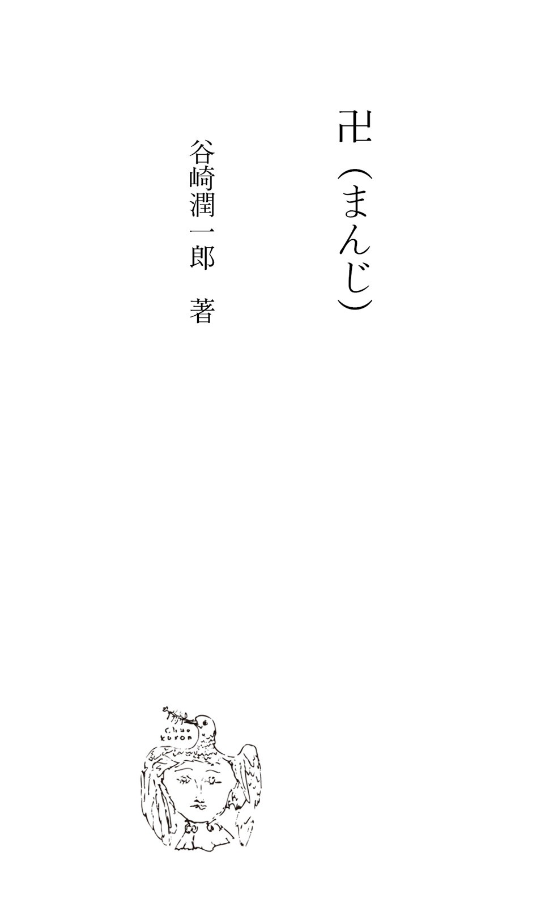
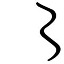

| 卍（まんじ） | |
| 谷崎潤一郎 | |

その一
先生、わたし今日はすっかり聞いてもらうつもりで伺いましたのんですけど、折角お仕事中のとこかまいませんですやろか？ それはそれは委しいに申し上げますと実に長いのんで、ほんまにわたし、せめてもう少し自由に筆動きましたら、自分でこの事何から何まで書き留めて、小説のような風にまとめて、先生に見てもらおうか思たりしましたのんですが、.........実はこないだ中ひょっと書き出して見ましたのんですが、何しろ事件があんまりこんがらがってゝ、どう云う風に何処から筆着けてえゝやら、とてもわたしなんぞには見当つけしません。そんでやっぱり先生にでも聞いてもらうより仕様ない思いましてお邪魔に出ましたのんですけど、でも先生わたしのために大事な時間滅茶々々にしられておしまいになって、えらい御迷惑でございますやろなあ。ほんまに宜しございますか？ わたし先生にはもう毎度々々おやさしいにしていただきますもんですから、つい御親切に甘える気イになって、御厄介にばっかりなりまして、どないに感謝してもしきれへんくらいや思てます。そいであのう、いつかも大へん御心配かけましたあの人のこと、あれからお話せんならんのんですが、あれはあの後に申し上げました通り、あないに云うて下さいましたのんで、自分でもしみじみ考えまして、あんなりぷっつり絶交してしまいました。その当座は未練とでも云いますのんか、何かにつけて思い出されますもんですから、家にいてましてもまるでヒステリーのようになってましたけど、そのうちにだんだんあの人がえゝことない男やった云うことはっきり分って来まして、.........主人も私が前は始終そわそわして音楽会や何や云うては出歩いてばっかりいましたのんに、先生のお宅い寄せてもらうようになりましてから、すっかり様子変りまして、絵エ畫いたり、ピアノの稽古したりして、一日家に落ち着いてますもんですから、「この頃はお前も女らしなったなあ」なんぞ云いまして、蔭ながら先生の御好意よろこんでました。尤もわたし、あの人の事に就いては何も主人に云いませなんだ。「夫に過去のあやまち隠しとくのんよろしゅうないから、──殊に肉体上の関係なかったのんなら告白し易い訳やから、すべてを打ち明けておしまいなさい」と先生は云うて下さいましたけど、.........けどどうも、.........それはまあ、主人にしましても或いはうすうす気イついてたかも分れしませんのですが、私の口からは何や云いにくうもありましたし、この後間違いないように自分さい注意してたらえゝのや思いまして、何事も胸に収めてたのんです。ですから主人は私が先生からどんなお話伺うて来ましたやら、それは知りませんでしたけど、いろいろ為めになること教せてもろたに違いない思て、そう云う心がけになったのんはえゝ傾向や云うてましてん。
そんな訳で、そいから暫くは大人しいに家い引っ籠ってましたもんですから、此の様子やったらまあ安心や思いましたもんか、そうそう己も遊んではいられんから云うて、大阪の今橋ビルディングに事務所借って弁護士開業しましたのんが、あれが昨年の二月頃でしたかしらん。──はあ、そうです。大学の方は独法やりましたのんで、弁護士にならいつでもなれたのんです。始めは何でもプロフェッサアになりたいように云うてまして、ちょうど私のあの事件ありました時分には、引きつゞいて大学院の研究室の方い通てましたのんですが、弁護士やる気イになりましたのんは別に此れちゅう理由あったのんではあれしません。そういつ迄も私の実家の方に世話にばっかりなってましては義理も悪いし、私に対しても頭上らんと思うたのんですやろ。いったい主人は大学時代に秀才や云う評判で、たいへんにえゝ成績で卒業しましたもんですから、そう云う人間ならば云うのんで、嫁に来たとは云うもんの、婿を取るのも同様にして結婚したのんです。そいでもう私の親たちは主人を信用してまして、いくらか財産も分けてくれまして、まあまああせるには及ばんから、学者になりたかったら学者になるで、ゆっくり勉強するがえゝ。洋行もしたければ夫婦で二三年彼方い行てくるがえゝなど云うてくれまして、──最初は主人も大そう喜んで、そんなつもりもあったらしいのんですけど、──私があんまり我が儘やのんで、実家の方笠に着て威張るのんや云う風に取って、それが癪に触ったのかも分れしません。しかし性質が学者肌に出来てまして、いつ迄たっても書生流のぶっきらぼう抜けしませんし、あいそは下手ですし、それはそれは人づきあい悪い方ですから、弁護士なんぞになりましたとこで一向仕事やかいあれしませんね。そんでも毎日事務所いだけはきちんきちん出てましたが、そうなりましたら、私の方は一日家にぼんやりしてまして、しょうないもんですから、自然また、いろいろと、一旦忘れてたことが胸に浮かんで来るのんです。前には暇ありますと歌作ったりしましたが、歌は却って思い出の種になりますのんで、もう此の頃はせえしませんやろう？ そんで私、こうやってゝはろくな事考えへんさかい、これは何とかせんといかん、何ぞ気イ紛れるようなことはと思いまして、──先生は御存知でしょうか、──あのう、天王寺の方に女子技藝学校云うのんありますねん。私立の詰まらん学校ですねんけど、絵エと、音楽と、裁縫と、刺繍と、そいからまだ外にも何や、まあそんな風に科ア分れてまして、入学の資格なぞむずかしいことも何にものうて、大人でも子供でも自由に這入れます。わたし前にも日本畫稽古してまして、下手ですけど、その方になら幾らか趣味持ってますもんですから、それい毎日、朝は主人と一緒に出かけるようにしまして、ともかくもまあ、通うことにしましてんわ。尤も毎日とは云いましても、そんな学校ですから、休みたい時は勝手に休んだりしましたけど、──
主人は絵エや文学やにはてんと趣味ない方やのんですが、私が学校い行きますことは賛成してくれまして、それは結構や、えゝ思いつきやさかい精出して行くがえゝ云うて、自分から勧めたくらいやのんでした。毎朝出かけますのんにも、私が行きますのんは九時のこともあり、十時のこともあり、自分の都合でいろいろになることありましたけど、主人の方も事務所暇やのんですさかい、何時になろうと大概待ってゝくれまして、阪神電車で梅田まで一緒に行き、そいから二人圓タクに乗って堺筋の電車通りの今橋の角で主人おろしまして私はずっとその車で天王寺い行きます。主人はそう云う風にして一緒に出かけますこと楽しみにしてたらしいのんで、「またもう一遍学生時代に復ったような気イするなあ」など云いますから、「夫婦づれで自動車で通う学生あったらおかしいやないか」云いましたら、あはあは笑うたりなんぞして上機嫌でした。午後に帰ります時分にも成るべく誘てくれるように云いますのんで、電話で打ち合わせしといて、事務所い寄ったり、難波や阪神で待ち合わしたりして、一緒に松竹座なぞい行ったりしました。そう云うような塩梅で主人との間は大変工合ように行ってましたのんですが、あれは四月の半ば頃でしたか、わたしほんの詰まらんことで学校の校長さんと喧嘩してしまいました。それはあのう、妙なことですが、学校でモデル使て、それにいろいろの服装さしたりポーズ取らしたりしまして、──日本畫の方は裸体のデッサンはやりませんですけど、──それ写生する時間ありますねん。ところがちょうどその時分に使てたのんが、Ｙ子さんちゅう十九になる娘さんで、大阪では有名な美人のモデルやそうで、それに楊柳観音の姿さしまして、──まあ、いくらかそんな風すると裸体に近うなりますのんで、多少裸体の研究も出来る云う訳やったのんです。私それを外の生徒たちと一緒に写生してますと、或る日校長先生が教室い這入って来られて、「柿内さん、あんたの絵エはちょっともモデルに似ておらんようですな、あんたは誰ぞ、外にモデルあるのんではありませんか」云われて、何や斯う、意味ありげに笑われますねん。それが校長先生ばっかりでのうてほかの生徒たちも、先生が笑われるあとからクスクス忍び笑いするのんです。わたし思わずはっとしまして顔赧うなりましてんけど、どう云う訳で赧うなったのんかその時は自分で分れしませなんだ。今になって考えますと確かにあの時赧うになったような気イしますねんけど、或はそうでなかったかも分れしません。しかし「外にモデルがある」云われましたら、そう云われる迄は自分では意識してえしませなんだのんに、何やしらんはっと胸いこたえるもんありましてん。でも、そんなら誰モデルにしたかちゅうことは、はっきりしてたのんではあれしません。たゞ何やしらん頭の中にＹ子さん以外の或る人の印象刻みついてゝ、Ｙ子さんを眼の前に見ながら、知らず識らずその印象の方モデルに使てた、──使うつもりものうて、自然と筆がその人の姿写してた、云うだけやのんです。
もう先生にはお分りになっておられますやろが、その、わたしが無意識のうちにモデルにしてた人云うのんが、──どうせ新聞にも出ましたのんですから、云うてしまいますが、──徳光光子さんやのんです。（作者註、柿内未亡人はその異常なる経験の後にも割に窶れた痕がなく、服装も態度も一年前と同様に派手できらびやかに、未亡人と云うよりは令嬢の如くに見える典型的な関西式の若奥様である。彼女は決して美女ではないが、「徳光光子」の名を云う時、その顔は不思議に照り輝やいた）けど私は、まだその時分には光子さんとお友達になってた訳ではあれしません。光子さんは洋畫の方習ておられて、教室も違てましたよって、もの云う機会もなかった筈です。ですから光子さんの方では私の顔知りなされしませなんだか、知ってなさっても別に気イに留めておられなんだのんですやろ。私の方にしましてもそれほど光子さんに注意してたとは思われしませんのですが、でも何とのう好きそうな人や云う風に考えてたに違いないのんです。それもしかし、もの云うたことないくらいですよって、性質やとか気だてやとか、そんなこと分れしませんでしてんけど、──まあ、何とのう、ただ全体の感じやのんですなあ。そう云えば私が案外早うから光子さんに気イつけてました證拠には、もうその時分に誰から聞いた云うでもなしに、光子さんの名前やお所を、──船場の方にお店のある羅紗問屋のお嬢様で、住まいは阪急の蘆屋川にあるのや云うようなこと迄ちゃんと知ってましてん。そいでわたし、校長さんにそんなこと云われましたのんで、あとでいろいろ考えてみたのんですが、成る程その絵エ光子さんに似てますけど、故意に似さした云うのんではなし、また故意に似さしたにしたところが、ぜんたいモデルにＹ子さん使う云うのんはＹ子さんの顔写すのん目的とはちがいますねんやろ？ ただＹ子さんに観音さんみたいな姿さして、その体つきや、白衣の襞の工合研究して、なおその上観音さんの感じ出せたらえゝわけですやろ。Ｙ子さんはモデル女の中では美人かも分れしませんけど、光子さんの方がもっと美人で、その絵エの感じに合うてるとしましたら、光子さんモデルにしても差支いないではあれしませんか。──私そない思たのんですねん。
その二
ところがそいから二三日たちますと、又モデルの時間に校長先生が這入って来られて、私の絵エの前い立ち止まってにやにや笑われますねん。そして「柿内さん」云いなさって、「柿内さん、どうもこの絵エ変ですなあ。ますますモデルに似んようになって来ますね。いったいあんたは誰モデルにしておられるのんですか」と、冷やかすような眼つきで私の顔じいッと視つめなさるのんです。「おや、そうですかしらん。モデルに似てえしませんか」と、私癪にさわりましたもんですから、わざとにそない云うてやりましてん。そやかて校長先生は絵エの先生ではないのんですやろ？──はあ、日本畫の方の受持は筒井春江先生やのんで、常時お越しになる訳やのうて、ときどきやって来られて、何処が悪いやとか此処をこないせえやとか云われますのんで、常は生徒たちが勝手にモデル見て畫いてますねん。校長先生云うのんは、随意科の方に英語ありまして、それ教せてなさるのんやそうですけど、学士でも何でもあれしませんし、何処の学校出られたのんか、学歴やかいもろくろくないらしい人やのんです。それは後になってから分りましてんけど、教育家云うよりは学校商売上手な人やのんで、つまり一種のやり手やのんですねんなあ。そう云う校長さんですから絵エのことなんぞ分る筈あれしませんし、餘計な嘴入れる必要はないのんです。それに又、学科の方はたいがい専門の先生たちに任しきりにしてめったに教室見廻ることやかいあれしませんのんに、その時間に限ってわざわざやって来られて、わたしの絵エ何や彼んやと云いなさるのんですねん。「へえ、そうですかなあ、あんたは此の絵エ此のモデルに似てる積りなんですか」と、皮肉な口調で云われましたもんですさかい、此方も空惚けてやりまして、「はい、わたし絵エは下手ですから、似てえへんかも分れしませんけど、でも自分では一生懸命モデルの通りに写しました積りです」云いますと、「いや、あんたは下手ではありません。なかなか上手に畫けてます。しかし此の顔は、どうも誰ぞ外の人に似てるように思われますね」と、又そない云いなさるのんです。「あゝ、顔のことですか、顔はわたし、自分の理想にかなうように畫いてみたのんです」云いますと、「ではあんたの理想云うのは誰のことですか」と、えらいひつこいですねん。そいからわたし、「此れは理想やのんですから、別に誰ちゅう実在の人間描いたわけではあれしません。観音さんの顔にふさわしいように成るだけ清らかな感じ持たしたのんですが、そいではいきませんですやろか。顔までモデルに似さゝんと悪いのんですやろか」云いましてん。すると、「あんたはたいそうむずかしい理窟云いなさる。しかし理想通りのもんが思いのまゝに畫けるようやったら、此の学校い絵エ習いに来るには及ばん。理想通りに畫かれないからこそモデルに就いて写生するのんではありませんか。自分勝手の絵エ畫くくらいならモデル使う必要あれしません。ましてこの観音さんがモデル以外の或る実在の人間に似てるとしたら、あんたの理想云うもんも甚だ不真面目に思えますね」云われるのんで、「わたしちょっとも不真面目とちがいます。仮にこの顔誰ぞに似てゝも、その人の顔観音さんの感じ出すのに適してましたら、それ写しても藝術的に疚しいことない思います」云いますと、「いや、それがいかんのんです。まだあんたは一人前の藝術家ではありません。あんたがその人の顔清らかであると感じられても、万人がそう感じるかどうか、それが問題です。そう云うことから兎角誤解が起るのんです」云う訳ですねん。「へえ、誤解て、どんな誤解起りますかしらん？ ぜんたい似てる似てる云うて、誰に似てるのんですか、どうぞ云うて下さい」云うてやりましたら、ちょっとどぎまぎして、「あんたは強情な人ですねえ」云われて、そんなり校長先生は黙ってしまいはりました。わたしその時は校長さんやり込めてやったのんで、喧嘩に勝ったような気イして、えらい痛快でしてんわ。けど大勢の生徒たちの前で議論したもんですよって、えらい評判になってしもて、間ものうけったいな噂ひろまるようになりましてん。つまりわたしが光子さんに対して同性愛捧げてる、光子さんと私とが怪しい云いますねん。──それが前にも云いましたように、まだその時分は光子さんともの云うたこともなかった程でしたさかい、出鱈目も出鱈目、ひどい嘘やのんです。尤もわたしは、うすうすみんなが蔭口云うてることぐらい感づいてましたもんの、それがそないに騒がれてようとは夢にも知りませなんだ。何せ身イに覚えないことやのんですから、何云われても平気なもんで、まあ、世間の人云うたらたいがいえゝ加減なことを云い触らすもんや。附き合うてもいえへん同士怪しいやなんて、なんぼ作りごとにしたかてようまあそんな嘘ばっかり云えたもんや思て、あんまり馬鹿々々しいて腹も立てしませなんだ。ただ心配になりましたのんは、わたしはそいでかめしませんけど、光子さんの方はどう思てなさるやら、嘸かしえらい係り合いになって迷惑してはるに違いない思いましたら、そいからは斯う、学校の往き復りなぞに出遇うことありましても、何や気イさして、前みたいに顔しげしげと見守ること出来しませなんだ。そうか云うて、思い切りよう此方から話しかけて、あやまる云うようなことも、──それが却ってけったいなことになりますし、なおさら迷惑しなさるかも分れしませんのんで、そないする訳にもいけしません。そんでわたし光子さんに出遇いますと、出来るだけあやまる心持外に現わすようにして、小そうになって、下向いて、こそこそ逃げるように傍通り抜けましたが、そないしながらも、先様怒ってはれへんやろか、どんな眼つきしてはるか、やっぱり気がゝりやもんですから、擦れちがう拍子にそうッと顔色うかごうたりしました。ところが光子さんの様子前とちょっとも変ったようなとこのうて、別に此方を不愉快に思てなさる風にも見えしません。あ、そうそう、ここに写真持って来ましたよって、此れ見て下さいませ。此れは揃いの着物出来ましたとき二人で記念に撮りましたのんで、新聞にも出たことある問題の写真やのんです。此れでもお分りになるように、こうして並んでましたら、わたしが引き立て役勤めてる形で、光子さんは船場あたりの娘さんの中でもちょっと飛びきりの器量やのんです。（作者註、写真を見ると、お揃いの着物と云うのはいかにも上方好みのケバケバしい色彩のものらしい。柿内未亡人は束髪、光子は島田に結っているが、大阪風の町娘の姿のうちにも、その眼が非常に情熱的で、潤おいに富んでいる。一と口に云えば、恋愛の天才家と云ったような気魄に充ちた、魅力のある眼つきである。たしかに美貌の持主には違いなく、自分は引き立て役だと云う未亡人の言は必ずしも謙遜でないが、この顔が果して楊柳観音の尊容に適するかどうかは疑問である）先生はこんな顔だちどないお考えになりますか？ 日本髪よう似合うてますやろ？──はあ、お母様日本髪好きやとか云うことで、ときどき結やはりまして、学校いもその頭で来やはりましてん。──何せそんな学校ですから、制服なんぞあれしませんし、日本髪の着流しでも何でもかめしませんのんですから、わたしなんか袴穿いて行たことあれしませなんだ。光子さんも、たまに洋服着なさることありましてんけど、和服の時はいつでも着流しでしてん。此の写真では髪のせえで私より三つぐらい若うに見えてますけど、ほんまは一つ歳下の二十三、──生きておられたら今年二十四ですねん。しかし光子さんの方が一二寸せえ高いでしたし、それに綺麗な人云うもんは、自分では器量鼻にかけへんつもりでも、やっぱり何とのう自信のある様子態度に現れるもんですやろか、それとも此方に引け目ありますとそない見えますのんですやろか、その後親しいになりましてからでも、歳から云うとわたしの方が姉さんでありながら、いつでも妹みたいな気イしてましてん。
で、その時分、──と云いますのんは、話前に戻りまして、まだお互いにものも云わんといてました時分、前に云いましたようなけったいな噂立ちましたことは光子さんの耳いも這入ってえへん筈あれしませんのんに、光子さんの様子はちょっとも前と変れしませんねん。わたしの方では疾うから綺麗な人や思て、噂立ちません時分には、光子さんが通りなさると、それとのう傍い寄って行ったりしましてんけど、光子さんの方ではてんと私やかい眼中にないような塩梅で、すうッと通ってしまいはりますが、その通られた跡の空気までが綺麗なような気イするのんです。もしも光子さんが例の噂聞いてなさるとしたら、なんぼ何でも私云うもんに注意しなされへん訳あれしませんやろ。イヤな奴ッちゃ思われるか、気の毒や思いなさるか、何とか素振に見えそうなもんですのんに、さっぱりそう云う風しなされへんもんですから、私の方もだんだんずうずうしいになりまして、また傍い寄って顔のぞき込むようになりましてん。すると或る日、お午の休みに休憩所でばったり出遭うと、いつでもすうッと澄まして通り過ぎてしまいなさるのんに、どう云う訳やにッこりしなさって、眼エで笑いなさるのんです。そいで私思わずお時儀してしまいましたら、すぐつかつかと寄って来られて、「わたし、あんたにこないだから大変失礼してました。どうぞ悪うに思わんといて頂戴」云いなさいますねん。「まあ何云いなさるのんです。わたしこそ詫らないかなんだのんですが」云いますと、「あんた詫りなさることあれしませんわ。あんたは何も知りなされへんのんです。わたしたち陥れよとしてる者いますから、気イつけなさいや」云いなさいますねん。「へえ、それは誰ですか」と尋ンねますと、「校長先生ですわ」と云われて、「ここでは委しい話出来しませんさかい何処ぞ外い行て、お晝御飯一緒に附き合うてもらわれしませんか？ そしたらいろいろ、ゆっくり聞いてもらいますが」云いなさるもんですから、「何処いでも一緒にいきますわ」と、二人で天王寺公園の近所にあるレストランい行きました。そいから光子さん洋食たべながら話して下さったのんですが、わたしたちの事に就いて悪い噂云い触らしたのんは実は校長さんや云いなさいますねん。なるほどそう云われて見ると、用もないのんに教室い這入って来て、みんなの前でわざと私に耻掻かすような事する云うのんが、だいぶんおかしい。悪意あってしたもんとしか思われへん。けどいったい何のために校長さんがそんな噂触れ廻るのんかと云いますと、目的は光子さんにあるのんやそうで、何でも彼でも光子さんの品行に就いて悪い評判立ちさいしたらえゝのんや云うのんです。それが又どう云う訳や云いますと、その時分光子さんに結婚の話持ち上ってまして、先はＭ云う大阪でも有名なお金持の家の坊々で、光子さん自身は気イ進んでおられなかったそうやのんですが、お宅ではたいそうその縁談望んでおられたし、先方でも光子さん欲しがっておられた。ところが或る市会議員のお嬢さんで、やっぱりそのＭさんへ縁談持ちかけてる人あって、光子さんの方と競争の形になってた。──光子さんは競争のつもりやのうても、市会議員の方では大敵が現れた思いましてんやろ。何しろＭさんの坊々は光子さんの器量にあこがれてラブレター寄越したくらいやのんですから、それは大敵に違いあれしません。そいでその市会議員の方では八方い運動して、成ろうことなら光子さんにケチ附けよと云うのんで、もう今までにも随分いろいろと、光子さん外に男あるらしいとか、有ること無いこと云い触らしてましたんやそうですが、まだそいだけでは飽き足らんと、とうど学校の方い手エ廻して、校長さん買収したのんですなあ。あ、そうそう、そいからその前に、──話がほんまにこんがらがってますけど、──その前にその校長さんが、校舎の修繕するから云うのんで、光子さんのお父様に、お金千圓一時融通して貰えまいか云うて来たことありますねんと。光子さんのお宅ではお金はたんとありまっさかい、千圓ぐらい何でもなかったのんですやろけど、おおびらに寄附金募るのんなら聞えてるが、一時融通してくれと云うのんおかしい、それにあんだけの校舎が千圓のお金で修繕出来る筈もないし、分らん話や云うようなことで、お父様は断られたのんやそうですねん。光子さんの話やと、そんなこと云うてはお金の有りそうな生徒の家頼み歩くのん校長さんの癖やそうで、借ったお金は一ぺんでも返したことあれしませんねんと。それも校舎の修繕に使うのんなら格別、校舎云うのん豚小屋みたいに汚うてぼろぼろになったなり、荒れ放題にしたあるのんです。──はあ？ いゝえ、そのお金は自分の生活費に使てはりますねん。校長さん云いましても高等幇間みたいな人で、おまけに奥さんがやっぱりそこの学校の刺繍の先生してなさって、夫婦でお金持の生徒に取り入っては、日曜のたんびに遠足会やとか、そんなことばっかりしてはりますさかい、なかなか暮らし派手ですねん。そいでお金貸したげたら、たいそう御機嫌えゝのんやそうですけど、断ったら、陰い廻ってその生徒のことえらい悪う云やはりますねんと。つまり光子さんにはそう云う恨みあるとこいさして、市会議員に頼まれたもんですから、どんな悪辣なことかてしかねへんのです。「ですからあんたわたし陥れるために利用しられなさったんやわ」と光子さんは云われますねん。「まあ、そんな深い訳あったのんですか。そんな事とはちょっとも知りませなんだが、それにしてもあんたと私とは今日までお附き合いもしてませなんだのんに、あんまり出鱈目が過ぎるではあれしませんか。捏造する人も捏造する人なら、みんながそれ真に受ける云うのん不思議でなれしません」云いますと、「あんたはそれやから呑気や」云いなさって、「噂立ったもんやさかい、二人はわざと学校ではもの云えへんのやと、みんなそない云うてますし、それどころか、こないだの日曜に二人大軌電車に乗って奈良い行くとこ見た云う人さいあるのんですね」云いなさるのんです。わたし呆れてしもて、「まあ、誰がそんなこと云いますねんやろ」云いますと、「なんでも校長さんの奥様から出たらしいのんです。それはそれはあんたが考えてなさるより十倍も二十倍も陰険やのんですから、気イ附けなさいや」云う訳ですねん。
その三
そんで光子さんは、ほんまにあんたに気の毒でなれしません、すみませんすみませんと何遍も云いなさいますから、わたしの方が却って気の毒になりまして、「いゝえ、いゝえ、あんた悪いことあれしません。憎いのんは校長先生です。教育家ともあろうもんが、何ちゅう卑劣な、.........けど、わたしでしたらどんなこと云われようとちょっとも構めしませんけど、あんたこそお嫁入り前の身イで、そんな悪辣な人たちの罠にかゝらんように気イ附けなさいや」と、此方からあれこれと慰めたげましたら、「きょうはあんたにすっくりお話すること出来て、ほんまにえゝことしました。こいでようよう胸すッとしました」云われて、「あのう、こうして二人で話やかいしてたら、又なんやかんや云われますから、こんだけにしときまひょなあ」と笑いなさるのんです。「折角友だちになったのんに名残り惜しいですなあ」と、わたし何や、ほんまにそんな気イしまして暫くもじもじしてました。すると光子さんは「あんたさいよろしかったら友だちになりたいのんですが、今度内い遊びに来なされしませんか。わたしハタからどない云われても恐いことあれしませんわ」云いなさるのんです。「はあ、わたしかって恐いことあれしませんわ、あんまりうるさいこと云うのんなら、あんな学校やかい止めてしまいます」云いますと、「なあ、柿内さん、わたしいっそのこと、知って仲ようしてみんなが冷やかすのん見てやりたいわ。あんたどない思いなさる？」「はあ、それがよろしいわ、そして校長さんどんな顔しなさるか見てやりたいですわ」と、わたしもすぐその気イになってしまいました。「そしたら、あのう、面白いことありますねん」と光子さん手エたゝいてやんちゃのように嬉しがりなさって、「ほんまに今度の日曜に、二人で奈良い行きなされしませんか」「えゝ、行きまひょ、行きまひょ、それ分ったらえらい評判になりますで」──そんなことで三十分か一時間ほどの間に、お互いにもうすっくり打ち解けてしまいましてん。
きょうはもう学校い帰るのんも馬鹿々々しいし、何なら松竹いでも行きませんかと、孰方からとものう云い出しまして、その日は夕方まで一緒に遊んで、光子さんは「ちょっと店い寄って行きます」と心斎橋筋散歩しながら帰られて、わたしは日本橋からタクシーに乗って今橋の事務所い行きました。そんでいつでもみたいに主人誘て阪神電車で帰りましたのんですが、その時主人が、「お前今日えらいそわそわしてるなあ、何ぞうれしい事でもあったのんか」云われましたのんで、「やっぱりいつもと様子違てるのかしらん、光子さんと友達になったことそないに自分幸福にさしたのんかしらん」と、ひとりで思いました。「そんでもわたし、今日ほんまにえゝ人と友達になったんやもん。──」「何んちゅう人や」「何んちゅう人やて、そら綺麗な人やもん。──あんた、あのう、船場の徳光云う羅紗問屋あること知らん？ そこのお嬢さんやねんけど」「何処で友達になったんや？」「同じ学校の人やわ、──それが、あのう、わたしとその人と、こないだからけったいな噂立ってなあ、──」わたし別に疚しいことやかいないもんですさかい、面白半分に校長先生と喧嘩したことから、一から十まで話してしまいますと、「ずいぶんひどい学校やなあ。けどお前がそないに美人や云うのんなら、僕も一遍会うてみたいもんやがなあ」と、冗談にそない云うてました。「いまにきっと内いも遊びに来なさるやろ。わたし此の次の日曜日に、一緒に奈良い行く云うて約束したんやけど、行ったらいかん？」「そら行ってもかめへん」主人はそない云いまして「校長さん怒るぜエ」云うて笑てましてん。
明くる日学校い行きますと、きんの一緒に御飯食べたことや映畫見に行ったこともういつの間にやら知れ渡ってて、「柿内さん、あんたきんの道頓堀歩いてなさったなあ」「お楽しみやなあ」「あれ一体誰やったなあ」なんて、女の人云うたら、も、ほんまにうるさいのんです。そしたら光子さんは又それ面白がりなさって、知って傍い寄って来られて、此れ見よがしにしなさるのんです。そう云うようなあんばいで、そいから二三日するうちに、えらい仲好うなってしまいました。校長さんは却って呆れてしまわれたのんか、ただ恐い眼エしてじっと睨んでおられるだけで、もう何とも云いなされしません。光子さんは「なあ、柿内さん、あの観音さんの絵エもっと私に似るように畫いて御覧。そしたらどないに云やはるかしらん」云いなさるのんで、前よりももっと似るように直しましてんけど、校長さんはそんなり教室いも来なされしません。わたしたちはえゝ気イになって「痛快やなあ」云うてましてん。
そないなって来ると、無理に奈良い行く必要もないようになりましたが、ちょうど四月の終りのことで、えらいえゝお天気の日曜でしたさかい、電話かけて相談して、上六の終点で待ち合いして、お午すぎから若草山の方ぶらぶら歩き廻りました。光子さんは歳のわりにたいそうおませなとこもありますし、又子供のような無邪気なとこもあって、山の頂辺い上りましたら、蜜柑五つも六つも買うて、「ちょっと見てゝ御覧」と、それを上から転こばしたりしました。すると蜜柑は頂辺から下までころころと転こんで、その拍子にぽんと一つ往来飛び越えて、向い側の家の中い這入るのんで、面白がっていつ迄でもそないしてなさるのんです。「光子さん、そんな事してたら切りがないよって蕨でも採りに行きまひょ。わたし此の山に蕨や土筆のたんと生えてるとこよう知ってるわ」云うて、そいから日の暮れまでかゝって、蕨やら、ぜんまいやら、土筆やら、たあんと採りました。──はあ、その場所ですか、あれはあのう、若草山の山が三つ重なってる、その一番前の山と、その次の山との間のへっこんだ所、──あそこら辺いったいに、ずっともう一杯に生えてまして、あの山のんは、毎年春に山焼きしますのんで特別おいしいのんです。──そんなことでもう空大分暗なった時分、二人ともまた前の山の方い戻って来まして、あんまりくたぶれましたよって、山の中途へんい腰おろして休みながら、暫くぼんやりしてます時でした。「柿内さん」と、急に光子さんが何や斯うすこし改まった様子で、「わたしどうしてもあんたにお礼云わんならんことあるねんけど」云われるのんです。「何やのん？」と尋ンねますと、「わたしあんたのお蔭でなあ、あんなイヤな人のとこい嫁入りやかいせえでもえゝようになりそうやねんわ」──そう云うて、何や知りませんけどニヤニヤ笑てなさるのんです。「まあ、又何でそんな事になったん？」「ほんまに噂云うもん早いもんで、もうちゃあんと、あなたと私のこと向い知れてしもてるねん」
その四
「ゆんべなあ、内でその話が出てなあ」と、光子さんは言葉をつがれて、「お母さんがわたしを呼びゃはって、お前、学校でこんな噂あるそうやけど、それほんまでっか、云やはるねん。へえ、そらそんな噂あることはありまっけども、いったいお母さん、何処で聞きゃはりましてん？ そらまあ何処でもよろしおまっしゃないか。それよかそらほんまの事でっか？ へえ、ほんまです、そやけど何がけったいでんねん？ 友達と仲好うしてるぐらいで。──そう云うたらお母さんちょっとまごつきはってなあ、そらお前、仲好うしてるだけやったら何ともないけど、何やそれがイヤらしいこッちゃ云うやおまへんか。イヤらしい事てどんな事でんねん？ どんな事やかお母さんは知りめえんけどな、別に悪いことやなかったらそんな噂立つ筈おまへんやないか。あゝ、そら何でや知ってまんねん、そのお友達云うのがなあ、うちの顔が好きや云やはってモデルにしやはりましてん、そんな事からみんながうち等を排斥し出しはりましてんやろ。そらもう学校云うたらうるそうてなあ、ちょっとでも顔綺麗かったら何や彼やと憎まれるよって。──そらまあ、そんな事もありまっしゃろけど、と、わたしが説明したげたらお母さんもだんだん分って来やはって、そんな事ならかめへんけども、そない云うてもその何とかはん云う人とばっかり仲好うせん方がよろしおまっしゃないか。お前も此れからが大事な体やよって、しょうむない事あんまり云われん方がよろしおまっせ云うて、まあそんなりで済んでしもてんけど、きっとあの市会議員なあ、向らへんの連中がそんな噂聞き捜してＭの方いしゃべったのんが、それが又お母さんの耳い這入ってしもてんわ。そやよって、大抵縁談もあかんようになるやろ思てんねん」「そら、あんたはそんでえゝやろけど、お母さんがきっとわたしを嫌がってはるわ。今に見てゝ御覧、わたしと交際したらいかん云われへんかしらん？ もし誤解しられたらイヤやけどなあ」と、わたしそれが気がゝりで、そう云いますと、「そんなことあんた、心配せんかてかめへんわ。そらほんま云うたら、校長さんが慾張りの人で、お金貸してもらえなんだら悪口云う癖のあることや、市会議員の人に買収しられてることやらを、みんなお母さんに云うてしまおかしらん思たけど、そんなけったいな学校なら止めてしまいなはれ云われそうやよって、云わんと置いといてんわ。そしたらあんたと会われへんようになるよって」「あんたもなかなか隅い置けんなあ」「ふゝん、うちかってスコイよってなあ」と、光子さんはくつくつ笑われて、「向が悪い人やったら此方かって利用してやらんと損やわ」「けど、あんたの方が破談になって、市会議員のいとはんもよろこんではるやろなあ」「そしたらあんたは両方から感謝しられるべきやわ」なんかと、お互にあれやこれや云い合いまして、山の上で一時間以上もしゃべってました。わたし今迄でも若草山い上ったこと何遍でもありますけど、そんなに日イ暮れてしまうまで山の上にいたことあれしませなんだのんで、あそこから夕靄の景色見わたすのんは、ほんまにその時が初めでした。ついさっき迄まだその辺に人がチラホラしてましたのんに、もうてっぺんから麓までだあれも人の影ありません。その日は割りにえらい人出でしたから、あのなだらかな、若草の生えた山の中程には、弁当のたべ残しや、蜜柑の皮や、正宗の罎がいっぱい散らかって、空はまだうす明いのに、足の下には奈良の町の灯イちらちらして、遠くの方の、ちょうどわたしらの真ア向うのあたりには、生駒山のケーブル・カアのイルミネーションがずうっと数珠のようにつながって、紫色した靄のあいだから、ところどころ絶えては続いてまたゝいてます。そのまたゝいてる光見ると、わたし、何やしらん息詰まるように感じたのんですが、「まあ、知らん間に晩になってしもて、淋しいわなあ」と、光子さんが云われました。「一人やったらほんまに恐うていられへんわなあ」云いますと、「好きな人と二人だけやったらこんな淋しい所の方がえゝわ」と、そない云うて光子さんはためいきついておられました。「うちあんたと一緒やったらいつ迄でも此処でこないしてたいわ」──わたしはその言葉口いは出さんと、夕闇のなかにうずくまって足投げ出してなさる光子さんの横顔眺めてましたが、暗いのんでどんな表情してなさるのんか分りませなんだ。ただ光子さんの白い足袋の向うに、大佛殿の金の鯱鉾が空のうすあかりに底光りしてました。「おそうなったよって帰りまひょ」云うて、そいから山降りて、大軌まで歩いて行きましたら彼れ此れ七時になってしまいました。「うちお腹減ったけど、あんたどうする？」「きょうは早う帰らんといかんねんわ。奈良い行くとも何とも云わんと出て来たよって」と、光子さんは時間気イにしておられましたが、「そない云うたかてうちもうペコペコやわ。おそなりついでやよってえゝやないか」云うて、無理に引っ張って洋食屋い這入りました。「あんたとこの旦那さん、おそなっても別に何とも云やはれへんか？」と御飯たべながらそんな話が出ました。「うちのあの人、そんなこと何とも干渉しやはれへん。それにうち、あんたと仲好うなったことちゃあんと話したあるわ」「そしたらどない云やはった？」「うちがあんまりあんたのことばっかり云うよって、あの人云うたら、そんな綺麗な人やったら一ぺん会うてみたいなあ、いつぞ遊びに来えへんもんやろか云うてはった」「あんたの旦那さん云うたら優しい人？」「そらもうあの人と来たら、うちがどんな勝手気儘な事してもなんとも云やはれへんわ。けど、あんまり優しいよって、時によったら張合いないのんで、──」わたし、まだその時までは自分のことは一つも光子さんに云うてなかったのんで、夫と結婚するようになった訳や、それから、あのう、いつやらの恋愛問題や、それに就いて先生にいろいろ心配して戴いたことまで、その時すっくり云うてしまいました。光子さんはわたしが、先生知ってる云いましたら、「まあ、そうお？ あんた知ってんのん？」とびっくりしなさって、自分も先生の小説とても好きやよって、一遍連れて行ってくれなされしませんか云うてなさったのんですが、いッつも今度こそこそと云いながら、とうとうその儘になってしもうたのんです。「ふうん、そしてあんた、もうその人と交際してへんのん？」と、光子さんは一生懸命にあの事聞きたがりなさって、今はもう交際してえしません云いますと、「なんでやのん？ そんな、あんたの云うように清い恋やったら交際してもえゝやないか。うちやったら、恋愛と結婚とは別々のように思うけどなあ」なんか云うて、「あんたの旦那さん、そのことちょっとも知りはれへんのん？」「ふん、そらうすうす感じてたかも知れんけど、うちなんにもその事に就いて云うたことないし、とやかく問題になったようなことなかったわ」「えらい信用あるねんなあ」「それよりかうちのこといっそ子供のように思うてるねんわ。そやよってうち気に入らんねんけど」と、わたしそう云いました。
その晩家い帰ってみたら十時近くでしたのんで、「えらいおそかったなあ」と、夫はいつにのうけったいな顔して、何やこう淋しそうにしてたのんが、ちょっと気の毒な気イしました。別に悪いことした訳でも何でもないのんに、夫が長いこと待ちくたぶれて、たった今御飯すましたらしい様子見ると、妙に気がとがめました。そう云うと前、恋人と会うてた時分にはよう十時過ぎに帰って来たことありましたけど、此の頃になってこないにおそうなったことあれしませなんだ。そいで夫もちょっと気イ廻したのんかも分れしませんが、わたし自身も、何かしらんちょうどあの時と同じような気イしました。
その五
そうそう、そいからその時分にあのいつぞやの観音さんの絵エ出来上りましたのんで、それ夫にみせたことありました。「ふうん、光子さん云うたらこんな人か。お前にしたらこの絵エうもう出来すぎてるなあ」と、夫は晩御飯のときにそれ畳の上い廣げて、一と箸たべては見、一と箸たべては見いして、「此れやったら、さも絵エにかいたようやけど、ほんまに此の通りかいな」と、あやしみながら念押しました。「そら此の絵エ問題になったくらいやもん、よう似てるわ。ほんとの光子さんはこの神々しさの上にちょっと肉感的なとこあるねんけど、日本畫にしたらその感じが出えへんねん」──その絵エわたし、大分骨折りましたのんで自分でもよう畫けてる思いました。夫はしきりに傑作や云いましたが、とにかくわたしが絵エ云うもん習い始めてから、これほど一生懸命に、興味以って畫いたことはあれしませなんだ。「いっそ此の絵エ表具してもろたらどうやねん。そんでそれが出来上ってから、光子さんに見に来てもろたらえゝやないか」と、夫が云いますのんで、わたしもその気イになりまして、そんなら京都の表具屋いやって立派に仕立てさせよ思いながら、ついそのまゝに放ったあった、或る日イのことでした。「実は斯う斯う云うつもりやねんけど」と、光子さんにその話したら「表具屋いやるぐらいやったら、もう一ぺん畫き直して見えへん？──あれはあれでよう出来てるけど、──顔はよう似てるけど、──体のつきがちょっとだけ違うよってなあ」云われるのんです。「違うて、どう云う風に？」「どう云う風に云うたかって、口で云うたぐらいやったら分れへんわ」と、そない云われたのんが、たゞ自分の感じ正直に述べられたのんで、「わたしの体はもっともっと綺麗です」云うような自慢の意味はなかったのんですけど、でも何とのう不満足に思うてなさる様子でしたので、「そんなら一ぺんあんたのはだかの恰好見せて欲しいなあ」云いますと、「そら、見せたげてもかめへんわ」と、すぐに承知しなさいました。
そんな話があったのんやっぱり学校からの帰り道か何処ぞやったんですやろ。「そんならあんたとこい行て見せたげるわ」云われて、たしかその明くる日の午後、学校早退きして二人でわたしの家い来ました。「うち、はだかになったりなんかしたら、あんたとこの人びっくりしやはるやろなあ」と、みちみち光子さんは云うておられましたが、きまりわるがるより、なんぞ面白い遊びでもするように、やんちゃな眼エしておかしがっておられるのんでした。「家にえゝ部屋あるわ。そこやったら誰にも見られへん、西洋間になってるよって」と、わたしはそない云うて二階の寝室い連れて行きました、「まあ、感じのえゝ部屋やなあ、とてもハイカラなダブルベッドあるなあ」と、光子さんはそのベッドに腰かけて、お臀にはずみつけてスプリングぐいぐい撓ましたりしながら、暫くおもての海のけしき見ておられました。──宅は海岸の波打ち際にありますのんで、二階はたいへんに見晴らしえゝのんです。東の方と、南の方と、両方がガラス窓になってまして、それはとても明うて、朝やらおそうまでは寝てられしません。お天気のえゝ日イは松原の向うに、海越えて遠く紀州あたりの山や、金剛山などが見えます。はあ？──はあ、海水浴も出来るのんです。あそこら辺の海はちょっと行きますと、じきにどかんと深うになってますので、あぶないのんですけど、香櫨園だけは海水浴場出来まして、夏はほんまに賑やかやのんです。ちょうどその時分は五月のなかば頃でしたから、「早う夏になったらえゝのんになあ、毎日でも泳ぎに来るのに」と、部屋の中見廻しながら、「うちも結婚したら、こんな寝室持ちたいわ」などゝ云うたりしました。「あんたやったら、これどころやあるかいな。もっともっとえゝとこい行けるやないか」「そやけど、結婚してしもたらどんな寝室に住んでも、綺麗な籠の中に入れられた鳥のようなもんと違うかしらん？」「そら、そんな気イすることもあるけど、──」「あんた、此処は夫婦の秘密室やないかいな。わたしこんな部屋い引っ張って来て、旦那さんに叱られへん？」「秘密室かってかめへんやないか。あんたゞけは特別やもん」「そない云うても、夫婦の寝室は神聖なもんや云うさかいに、.........」「そしたら処女の裸体かって神聖なもんやよって、こゝで見せてもらうのが一番えゝわ。今のうちやったら光線の工合もちょうどえゝよって、はよ見せてほしいわ」私はそう云うて急きたてました。「海の方から誰ぞ見てはれへんやろか」「あほらしい、あんな沖の方にいる船から何が見えるもんかいな」「そやけど、こゝはガラス窓やよってなあ。──そこのカーテン締めてほしいわ」五月云うても眼エ痛うになるほどキラキラするお天気でしたから窓はところどころ開け放してありましたが、それすっかり締め切ってしもうたのんで、部屋のなかは汗がたらたら流れるぐらいの暑さでした。光子さんは観音さんのポーズするのに、なんぞ白衣の代りになるような白い布がほしい云うのんで、ベッドのシーツ剥がしました。そして洋服箪笥の蔭い行て、帯ほどいて、髪ばらばらにして、きれいに梳いて、はだかの上いそのシーツをちょうど観音さんのように頭からゆるやかにまといました。「ちょっと見てごらん、こないしてみたら、あんたの絵エと大分違うやろ」そう云うて光子さんは、箪笥の扉に附いている姿見の前い立って、自分で自分の美しさにぼうっとしておられるのんでした。「まあ、あんた、綺麗な体してゝんなあ」──わたしはなんや、こんな見事な宝持ちながら今までそれ何で隠してなさったのんかと、批難するような気持で云いました。わたしの絵エは顔こそ似せてありますけど、体はＹ子云うモデル女うつしたのんですから、似ていないのはあたりまえです。それに日本畫の方のモデル女は体よりも顔のきれいなのんが多いのんで、そのＹ子と云う人も、体はそんなに立派ではのうて、肌なんかも荒れてまして、黒く濁ったような感じでしたから、それ見馴れた眼エには、ほんまに雪と墨ほどの違いのように思われました。「あんた、こんな綺麗な体やのんに、なんで今迄隠してたん？」と、わたしはとうとう口に出して恨みごと云うてしまいました。そして「あんまりやわ、あんまりやわ」云うてるうちに、どう云う訳や涙が一杯たまって来まして、うしろから光子さんに抱きついて、涙の顔を白衣の肩の上に載せて、二人して姿見のなかを覗き込んでいました、「まあ、あんた、どうかしてるなあ」と光子さんは鏡に映ってる涙見ながら呆れたように云われるのんです。「うち、あんまり綺麗なもん見たりしたら、感激して涙が出て来るねん」私はそう云うたなり、とめどのう涙流れるのん拭こうともせんと、いつ迄もじっと抱きついてました。
その六
「さあ、もう分ったやろ、うち着物きるわなあ」云われるのんを、「イヤや、イヤや、もっと見せてほしいイッ」と、わたしは甘えたみたいに首振ってせがみました。「あほらしいもない、いつまではだかになってたかてしょうがないやないか」「しょうがあるとも！ あんた、まだ、ほんとのはだかになってえへんやないか。此の白い物取ってしもたら、──」そう云うていきなり肩にかゝってるシーツ掴みますと、「放してほし！ 放してほし！」と、一生懸命に剥がされまいとしなさるのんで、シーツがびりびり破れました。わたしはかあッと逆上してしもて、くやし涙一杯浮かべて、「そんならいらん、うちあんたそんな水臭い人や思てえへなんだのに、もうえゝわ。もうきょう限り友達でもなんでもないわ」と、破れたシーツを口でずたずたに引き裂きました。「まあ、あんた、気イでも違うたんか」「うちあんたみたいに薄情な人知らんわ。あんた、此ないだ、もうお互に一切隠しごとせん云うて約束したやないか。あんたのうそつき！」──その時はよっぽどどうかしてたと見えまして、自分で覚えないのんですけど、まっさおになってぶるぶる顫いながら光子さんを睨みつけた顔つきが、ほんまに気でも狂うたように思えましたそうです。そう云うと光子さんもやっぱり黙ってわたしの顔じーッと視つめたまゝ、ふるてなさったようでしたが、ついさっきまでの気高い楊柳観音のポーズ崩れて、羞かしそうに両方の肩おさえて、一方の足の先を一方の上に重ねて、片膝を「く」の字なりにすぼめながら立ってなさるのんが、哀れにも美しゅう思えました。わたしはちょっといたいたしい気イしましてんけど、シーツの破れ目から堆く盛り上った肩の肉が白い肌をのぞかせてるのを見ますと、いっそ残酷に引きちぎってやりとうなって、夢中で飛びついて荒々しゅうシーツ剥がしました。わたしも真剣なら、光子さんも気イ呑まれたとみえまして、此方のするまゝになりながら、もう何事も云われませなんだ。ただ両方が憎々しいくらいな激しい眼つき片時も外らさんと相手の顔いそゝいでました。わたしはとうど思い通りにしてやった云う勝利のほゝえみを、──冷ややかな、意地の悪いほゝえみを口もとに浮かべて、体に巻きついてるものをだんだんに解いて行きましたが、次第に神聖な処女の彫像が現れて来ますと、勝利の感じがいつのまにやら驚歎の声に変って行きました。「あゝ、憎たらしい、こんな綺麗な体してゝ！ うちあんた殺してやりたい」わたしはそう云うて光子さんのふるてる手頸しっかり握りしめたまゝ、一方の手エで顔引き寄せて、唇持って行きました。すると突然光子さんの方からも、「殺して、殺して、──うちあんたに殺されたい、──」と、物狂おしい声聞えて、それが熱い息と一緒に私の顔いかゝりました。見ると光子さんの頬にも涙流れてるのんです。二人は腕と腕とを互の背中で組み合うて、どっちの涙やら分らん涙飲み込みました。
その日はわたし、別にどうと云う考はありませんでしたけど、光子さん連れて来ること夫に黙ってましたのんで、夫の方では学校の帰りにわたしが事務所い寄る思うて、ゆうがたまで待ってましたそうですが、いつ迄たっても来ませんのんで、家い電話かけて来ました。「そんなんやったら、ちょっと知らしてくれたらえゝのに。えらい待ちぼけ喰うたもんや」「ついうっかりしてゝ済まなんだけど、急に話がまとまってしもてん」「そんで、光子さんまだいやはんのか」「いやはるけど、もうじき帰りはるやろ」「まあもうちょっと留めといたげエな、僕此いから直ぐ帰るわ」「そしたら大急ぎで頼むわ」──わたしは口ではそう云いましたけど、心のうちでは夫が戻って来ますのん何や面白う思いませなんだ。さっきの寝室のことあってから、わたしの胸には幸福の感じが満ち満ちてまして、今日は何と云う楽しい日イやろと、足が地に着かんように浮き浮きして、些細なことにも直ぐに心臓どきッと早鐘打つようになってましたのんに、夫に帰って来られてはその折角の幸福ヘヒビが入るように感じたのんです。わたしはたゞもう光子さんと二人きりで、いつ迄も話してたかったのんです。いえ、話なんかせえでも構めしません、黙って光子さんの顔さい見てられたら、──自分がその人のそばにいる云うことだけで、限りない幸福が胸一杯になるのんです。「なあ光子さん、今電話がかゝってなあ、うちの人帰って来るそうやねんけど、あんたどないする？」「えー、どうしよう！」と、光子さんは慌てゝ着物着ながら、──もう夕方の五時々分でしたが、その時まで二三時間もシーツ一つでいなさったのんです。──「うち会わんと帰ったら悪いかしらん？」「あんたに会いたい云うてたけど、.........今じっき帰って来るよって待ってたらどう？」わたしはそう云うて引き留めはしましたもんの、その実夫が戻らん先に早う出て行ってくれはったらえゝ思いました。そうと云うのんが、今日の一日を完全に幸福な一日として終らしたい、折角のうつくしい日の思い出を、第三者のために不純にさしてしまいたくないと願うたのんです。そんな気持があったもんですから、夫が帰って来ました時には、自然とその不満の色顔い出まして、妙にふさぎ込んでしまいました。光子さんも、わたしがそう云う風でしたし、初対面でもありますし、それにいくらか気イとがめてもいなさったのんでしょう、あんまり物数云われませんのんで、三人ながら手持無沙汰で、めいめい何や別な事考えてる、と云うたようなあんばいでした。そうなるとわたしは、いよいよ邪魔しられたのんが腹立たしいて、夫憎うさい感じました。「二人で何して遊んでゝん？」と、夫は光子さんの手前、ぼつぼつそんなこと話しかけました。「今日は寝室アトリエに使てしもてん」と、わたしはわざとあっさり云うて除けました、「──観音さんの絵エ畫きなおそ思て、光子さんにモデルになってもろてん」「ロクな絵エもよう畫かんくせに、モデルこそえゝ迷惑やなあ」「そやけど、モデルの名誉回復のために畫きなおしてくれ云われてんもん」「お前等なんぼ畫いたかってモデルわやくちゃにするだけや。モデルの方がずっと綺麗やないか」夫婦がそんなことを云い合うてるあいだ、光子さんは羞かしそうに下向いてくつくつ笑うてなさるだけで、てんと話はずまずに、間ものう帰ってしまわれました。
その七
こゝにその時分やりとりしました手紙持って来ましたから、お読みになって下さいませ。まだ此の外にもたんとたんとありますけど、とてもみんなは持って来られしませなんだのんで、此れはほんの一部分、その中の面白そうなのん選って来ましたのんです。こっちの方のが古いのんで大体順番になってますから、どうぞ此れから見て下さいませ。光子さんからわたしの方い来ましたのんは一ッつ残らず大事にしもて置いたのんですが、わたしの方から光子さんい上げたのんが中に交ってますのんは、それはあのう、──あとで話しますけど、少し事情ありまして、あの方の家から取り戻しましたのんです。（作者註、柿内未亡人がほんの一部分だと云ったところのそれらの文殻は、約八寸立方ほどの縮緬の帛紗包みにハチ切れるくらいになっていて、帛紗の端が辛うじて四つに結ばれていた。その小さい堅い結び目を解くのに彼女の指頭は紅を潮し、そこを抓っているように見えた。やがて中から取り出された手紙の数々は、まるで千代紙のあらゆる種類がこぼれ出たかのようであった。なぜならそれらは悉くなまめかしい極彩色の模様のある、木版刷りの封筒に入れられているのである。封筒の型は四つ折りにした婦人用のレターぺーパーがやっと這入る程に小さく、その表面に四度刷り若しくは五度刷りの竹久夢二風の美人畫、月見草、すゞらん、チューリップなどの模様が置かれてある。作者はこれを見て少からず驚かされた。蓋しこう云うケバケバしい封筒の趣味は決して東京の女にはない。たといそれが恋文であっても、東京の女はもっとさっぱりしたのを使う。彼女たちにこんなのを見せたら、なんてイヤ味ッたらしいんだろうと、一言の下に軽蔑されること請け合いである。男も彼の恋人からこう云う封筒の文を貰ったら、彼が東京人である限り、一朝にしてあいそを儘かしてしまうであろう。とにかくその毒々しいあくどい趣味は、さすがに大阪の女である。そうしてそれが相愛し合う女同士の間に交されたものであるのを思う時、尚更あくどさが感ぜられる。こゝにその手紙のうちから此の物話の真相を知るのに参考になるものだけを引用するが、ついでにそれらの模様についても、一つひとつ紹介するであろう。思うにそれらの意匠の方が時としては手紙の内容よりも、二人の恋の背景として一層の価値があるからである。──）
（五月六日、柿内夫人園子より光子へ。封筒の寸法は縦四寸、横二寸三分、鴇色地に桜ン坊とハート型の模様がある。桜ン坊はすべてゞ五顆、黒い茎に真紅な実が附いているもの。ハート型は十箇で、二箇ずつ重なっている。上の方のは薄紫、下の方のは金色。封筒の天地にも金色のギザギザで輪郭が取ってある。レターぺーパーは一面に極くうすい緑で蔦の葉が刷ってある上に銀の点線で罫が引いてある。夫人の筆蹟はペン字であるが、字の略しかたにゴマカシがないのを見れば、相当に習字の稽古を積んだものに違いなく、女学校では能筆の方だったであろう。小野鵞堂の書風を更に骨無しにしたような、よく云えば流麗、わるく云えばぬらりくらりした字体で、それがまた不思議なくらい封筒の絵とぴったり合っている）
しとしとしとしと.........今夜は五月雨が降っている。あたしは今窓の外の桐の花にふりそゝぐ雨の音をきゝながら、あの、あなたが編んで下さった紅いシェードの垂れているスタンドの蔭でじっと机にむかっています。なんだかうっとうしい晩だけれど、軒端を伝う雨の雫に静かに耳を傾けていると、思いなしかそれがやさしい囁きのように聞えて来る。しとしとしとしと.........何をさゝやいているのかしらん？ しとしとしと.........あゝそうだ、光子光子光子、.........恋しい人の名を呼んでいるのだ。徳光徳光、.........光子光子、.........徳、徳、徳、.........光、光、光、.........あたしはいつの間にかペンを取って、左の手の指の先へ「徳光」と云う字や「光子」と云う字を数限りもなく書いていた、親指から小指まで順々に。.........
堪忍して頂戴、こんなつまらないことを書いて。
毎日顔が見られるのに手紙なんか書くのはおかしい？ でも学校だと傍へ寄るのがきまりが悪くて妙に気がひけるのだもの。そう云えばこんなにならないうちはわざとお互に寄り添うてみんなに見せびらかしたのに、噂が事実になってしもてから却って人目を憚るようになるなんて、やっぱりあたし気が弱いのかしらん？ あゝ、どうかして強くなりたい、もっと、もっと、.........神をも、佛をも、親をも、夫をも、恐れないほど強く強く、.........
明日の午後はお茶の稽古？ そしたら三時にあたしの家へ来られない？ あした学校でイエスかノーを知らして頂戴、この間のように合図してね。きっと、きっと、きっと来て！ 今もテーブルの瑠璃の花瓶の中で綻びかけた白い芍薬が、あたしと一緒にあえかなためいきを洩らしながらあなたの来るのを待っているの。失望させると可愛い芍薬の花が泣きます。洋服箪笥の姿見もあなたの姿を映したいと云っています。ではきっと！
明日のお晝の遊び時間にあたしはいつもの運動場のプラタナスの下に立っています。合図を忘れてはいけません。
光 様
園
（五月十一日、光子より園子へ。封筒縦四寸五分。横二寸三分。オールドローズの地色の中央に幅一寸四分程の廣さに碁盤目が通っていて、その中に四つ葉のクローバーを散らし、下の方に骨牌が二枚、ハートの一とスペードの六が重なっている。碁盤目とクローバーは銀色、ハートは赤、スペードは黒、レターペーパーは濃い鳶色の無地で、その右下の隅の所から斜めに白絵の具のペン字で文句が書いてある。筆蹟は園子より拙く、落ち着きのない走り書きのように見えるが、この方が字体が大きく、イヤ味がなくて生き生きとした奔放な感を与える）
姉ちゃん
光は今日一日機嫌が悪かったの。床の間の花をむしったり罪もない梅（専ら光子に侍いている小間使の名）を叱り飛ばしたり、──光はきっと日曜になると機嫌が悪いの。なぜって一日姉ちゃんに会えないのだもの。なぜハズさんがいると来てはいけないの？ でも電話ぐらいならと思って、さっきかけたらハズさんと一緒に鳴尾へ苺狩に行ってお留守！ まあお楽しみ！
ひどい、ひどい！
あんまりやわ、あんまりやわ！
光は一人で泣いています。
あゝ、あゝ、あゝ、
くやしいからもうなんにも云わない、
Ta Soeur Clair
Ma Chere Soéur Mlle.Jardin
（上文中の
"Ta Soeur"は佛蘭西語で"Your Sister"と云うこと、"Clair"は光の義から転じて「光子」を意味するのであろう。"Ma Chere Soéur"は"My Dear Sister"。"Mlle.Jardin"は"Miss Garden"にて「園子嬢」の意。「マダム・ジャルダン」と云わないで「マドモワゼル・ジャルダン」としたに就いては宛名の末に下のごとく追記してある。──）
あて姉ちゃんを「マダム」とは云わない。
「奥様」──まあ嫌な！ 思てもぞっとする！
でもこんなことハズさんに知れたら大変ね、
Be careful!
姉ちゃんはなんで手紙に「園子」とサインするの？
なんで「姉より」としてくれないの？
（五月十八日、園子より光子へ。封筒縦四寸横二寸四分。図は横に畫いてある。緋色の地に鹿の子絞りのような銀の点線が這入っていて、下に大きな桜の花弁の端が三枚見え、その上に後姿の舞妓が半身を出している。緋、紫、黒、銀、青の五度刷りの最も色彩の濃厚なもの。従ってその表面へ文字を書いても読みにくいので、宛名は裏面に記してある。レターペーパーは丈七寸幅四寸五分程の大きさの中に八寸ぐらいの白百合の茎のたわめられたのが左へ寄せて描いてあり、その周りがうす桃色にぼかしてある。ゆえに罫の引いてある部分は僅かに紙面の三分の一の面積しかない。それへ四号活字より小さい文字で細く細く書き続けてある）
とうとう来た、一度は来るとかねがね覚悟していた事が、.........とうとう破裂してしもうた。
ゆうべは随分猛烈だった。光ちゃんが見たらどんなにびっくりするかしらん。あたし等夫婦──あ、堪忍して頂戴、あたし等だなんて。──ハズもあたしも久しぶりであんな大喧嘩をした。久しぶりどころかこんなことは結婚以来始めてだった。此の前問題があった時でもゆうべのように激しい云い合いをしたことはなかった。あのおとなしい優しい人があんなに腹を立てるなんて！ けど無理もないかも知れない、なぜってあたし今考えるとほんとに悪いことを云ったのだもの。どうしてあたしハズに向うとあゝ強情になれるのかしらん？ それにゆんべは特別に強硬だったの、どう云う訳だか。.........あたし今度は自分でちっとも済まない事をしたと云う気が起らないの。でもハズだって随分乱暴なことを云った、不良少女、ヴァンパイア、文学中毒、──ありとあらゆる汚名をあびせて、それでも足りないで光ちゃんのこと迄も「寝室の闖入者」だの「家庭の破壊者」だのと、──あたし自分のことだけなら堪忍するけど、光ちゃんのことを云われたのでもう我慢ならなかった。「うちが不良少女なら何でそんな者を妻にしなさった。あんたは男らしいもない、あたしの家から学費を出して貰いとうて好きでもない者と結婚しなさったんか。あたしの我が儘は初めから分ってるやないか。あんたは卑怯や、意気地なしや」と、思いきりくさしてやった。そしたらいきなり灰皿を取って振り上げたのでえらい目に遭わすか思たら、それを壁へ叩きつけたなり、手荒なこともようせんとまっさおになって黙ってしもた。「うちの体に怪我でもさしてごらん、覚悟があるよって」そう云うてもやっぱり黙っていた。それきり今日までハズとは一ぺんも口をきかない。.........
──その手紙にある云い合いのことについてはもっと先生に聞いて戴きたい事があるのんです。前にもお話しましたかどうか、わたしと夫とはどうも性質が合いませんし、それに何処か生理的にも違うてると見えまして、結婚してからほんとに楽しい夫婦生活を味おうたことはありませなんだ。夫に云わすとそれはお前が気儘なからだ。何も性質が合わんことはない、合わさんようにするよってだ。己の方は合わすように努めてるのんに、お前がそう云う心がけにならんのがいかん。世間の夫婦てそない理想通りに行てるのんあれへんで。ハタから見たら圓満のようでも、内情知ったら不平のない奴あるもんか。己等かて人が見たら羨ましいように見えるかも知れへんし、一般の標準から思たら実際幸福の方かも知れん。お前は世間知らずのいとはんやよって、自分で自分の幸福が分らんと何や彼や贅沢云うのんや。お前みたいな人間はどない申分のない夫持っても此れなら満足や云う時あれへんで。と、いつもそない云うのんですけど、私は夫の世の中悟りすましたような、諦めたような物の云い方が気に入りませんよって、あんたはちょっとも煩悶なんかしたことないように見える、あんたと云う人は人間らしい所あれへん、と、そう云うて攻撃するのんです。夫の方では私の性質に合わすように努めてるのんですやろけど、それがほんまに気持がぴちっと合うのんでのうて、こっちを子供扱いにして、えゝ加減にあやしてるように思われますのんで、そう云う態度が癪に触って仕方あれしません。あんた大学では秀才やったそうやさかい、あてみたいなもん定めし幼稚に見えるやろけど、あてから見たら化石みたいな人やわと、云うてやった事もあります。いったい此の人の胸にはパッション云うものがあるのかしらん？ 此の人でも泣いたり怒ったりびっくりしたりする事あるのかしらん？ 私は冷静な夫の性格にやるせない淋しさ感じたばかりやのうて、いつの間にやら一種のわるさじみた好奇心抱いてましたのんで、それが此の前のことや光子さんのことや、いろいろの事件惹き起す元になったのんです。
その八
でも前の事件の時分は結婚して間もないことで、まだ処女時代の純真さ持ってましたから、今よりはうぶで、気イ小そうて、夫に済まん云う心持強いでしたけど、その手紙にもありますように今度はさっぱりそんな気持になりませなんだ。わたしかって、ほんま云うたら夫の知らん間にたんと苦労しましたのんで、だんだん擦れて、ずるうなってたのんですが、夫にはそれ分らんと、いまだに子供や子供や思てます。わたし最初それが口惜しいてなりませんでしたが、口惜しがるとなお馬鹿にしられるので、ようし、向が子供や思てるのんなら、何処までもそう思わして、油断さしてやれ、と、次第にそんな気イになりました。うわべはいかにもやんちゃ装うて、都合の悪い時はだだこねたり甘えたりして、お腹の中では、ふん、人を子供や思てえゝ気イになってる、あんたこそお人好しのぼんぼんやないか。あんたみたいな人欺すぐらいじッきゃわ、と、嘲弄するようになって、しまいにはそれが面白うて何ぞ云うとすぐ泣いたり怒鳴ったりして、自分ながら末恐ろしいなるほど芝居するのんが上手になってしもて、.........先生なんかこんなことよう分っておられますやろけど、ほんまに人間の心理云うもん境遇によってえらいえらい変りようするもんですなあ。前でしたら時に依ってははっと思て、あゝ、こんな事するのんやなかったと、後悔する気イになりましたのんに、今では反抗的に、なんじゃ意気地のない、これぐらいのこと恐がってどないすると、自分で自分の臆病あざわらうようになるなんて、.........それに、夫に内證で外の男愛したら悪いやろけど、女が女恋いするねんよってかめへん。同性の間でなんぼ親しなったかて夫がそれとやかく云う権利あれへんと、いつもそんな理窟つけて自分の心欺いてました。その実わたしの光子さんを思う程度は、前の人思うたのより十倍も二十倍も、.........百倍も二百倍も熱烈やったのんですけど、.........
わたしがそない大胆になったもう一つの理由は、夫は学生時代からそれはもうお話にならんキチン屋のガリガリ屋で、それを父から見込まれましたくらいやのんですから、ほんまに常識一点張りの、ちょっとでも変ったことや普通のことゝ違てることは分らん人やのんで、わたしと光子さんとの間柄なんぞも、なかなか感づかんやろう、やっぱりたゞの仲好しや思てるやろうと、たかくゝってましたのんです。初めは夫もそんなことあるやろうとは夢にも想像してませんでしたが、そのうちにだんだん、なんやけったいやなあ思うようになりましたのんですやろ。そらその筈で、前には学校の帰りがけに事務所い寄って夫誘いましたのんに、近頃ではひとりで先い帰ってしまう。そんで三日に一遍ぐらいはきっと光子さんやって来なさって、二人で長いこと閉じ籠ってる。モデルに使うねん云うてるけど、何してんのか、何日たっても絵エ出来上らんし、おかしい思うのんあたりまえやのんです。「なあ、光ちゃん、此の頃あの人ぼんやり気イつき出して来たよって、用心せんとあかんねん。今日はあてがあんた所い行くわなあ」云うて、わたしの方から光子さんの家い出かけることもありましたけど、.........はあ、学校でイヤな噂あったのんは市会議員の中傷や云うこと分りましたのんで、光子さんのお母さんはちょっとも私疑うてなされしませなんだ。わたしも信用落したらいかん思て、訪ンねるたんびにお母さんの機嫌取ってましたのんで、「柿内の奥さん奥さん」云うて、「えゝ友達が出来てよろしおますなあ」云うてなさった。それくらいですよって、毎日ほど遊びに行ても電話かけても差支いあれしませなんだけど、.........お母さんの外にその手紙にある梅云うお附の女子衆もいますし、いろいろハタ眼があるもんですよって、わたしの家のような訳には行きません、「あてとこやっぱりあかんなあ。折角お母ちゃんが姉ちゃん信用してはんのに、下手なことしてしもたら厄介やさかい」云うて、「そうそう、宝塚の新温泉どうやろ？」と、光子さんが云い出しなさって、二人で向い行て家族風呂い這入りながら、「姉ちゃんずるいわ、あての裸ばっかり見せてくれ見せてくれ云うて、自分のんちっとも見せん癖に」「あてずるいことないねんけど、あんたがあんまり白いよって耻かしいねん。あんた、こんな黒い体見ても愛憎儘かさんといてなあ」云うたりしましたが、わたしほんとに、自分の肌初めて光子さんに見せた時は、一緒に並ぶのんイヤな気イしました。光子さんは色が飛び切り白いだけでのうて、体の釣合いよう取れてゝ、姿がすらッとしてなさるのんで、それに比べたら、何や急に自分の体無細工に思われて来て、.........「姉ちゃんかって綺麗やないかいな、あてとちっとも変れへんもん」云われますと、しまいにはそれを真に受けて何とも思わんようになりましたけど、.........初めはわたし身がちゞむように感じました。
それであのう、その前の日曜に夫と二人で苺狩に行たことが光子さんの手紙にありますでしょう。その日は実はまた宝塚い行きたいなあ思てたとこい、「どうや、今日は天気えゝよって鳴尾い行てめえへんか」云われましたのんで、あいさには夫の機嫌取っといてやれ思いまして、イヤやなあ思いながら出かけたのんですけど、魂は光子さんのとこい飛んで行てしもて、ちょっとも興乗りませなんだ。恋いしさが募れば募るほど、なんやかやと話しかける夫がうるそうて、腹立たしいて、ろくさま返事もせんと一日ふさぎ込んでましたよって、その時からもう夫の方は一ぺん懲らしてやらんならんと考えたらしいのんです。けど例に依ってなんや浮かん顔してるだけで、喜怒哀楽をなかなか面へ表わさん人やもんですから、わたしの方ではまさかそない怒らしたとは気イつけしませなんだ。そして夕方帰って来ると、留守に電話かゝった云うのんで口惜しいて口惜しいて、夫や家の者たちにぷんぷん当り散らしました。そしたら明くる朝光子さんから恨みの手紙来ましたよって、すぐ電話で打ち合わして、阪急の梅田で落ち合うて、学校い行かんと、そのまゝ宝塚い行てしもて、それから一週間ほどずうッと一日も缺かさんと宝塚い行てたのんです。そうそう、さっきのあの写真、それはちょうどその頃に揃いの着物出来ましたのんで、二人で記念に撮ったのんですが、.........そして、苺狩に行た日から五六日たってからやったかしらん、或る日二階でいつものように話してると、三時過ぎ頃に女子衆が慌てゝ段梯子駈け上って来て、「旦那さん帰って来やはりましたでエ！」云いますのんで、「えー、なんでやろこんな時分に！」と、えらいまごついてしもて、「光ちゃん、早よしいでわ！」云いながら、二人ともけったいな顔して下い降りて行たことありましてん。夫はその間に洋服をセルの単衣物に着かえてしもてまして、わたしたち見た瞬間ちょっとイヤな顔しましたが、すぐ平気になって、「今日は僕なんにも仕事なかったのんで事務所早退きして来てん、お前等も学校怠けてゝんなあ」云うて、「お茶でも入れて何ぞうまいお菓子ンでも出さんかいな、お客さんもあるし、.........」と、それなり三人で無駄話しながら何ごとものう済みましたけど、その時うっかり光子さんが私のこと「姉ちゃん」云うてしもたのんではっとしました。「あんた、あてのこと『姉ちゃん』云わんと『園ちゃん』云うてくれた方がえゝなあ、つい口癖になってしもて誰の前でも出るよって」と、わたししょっちゅう云うてましたのんですけど、そう云うといつも光子さん気イ悪うして、「イヤや、イヤや、そんな水臭いことあるもんか、姉ちゃんはあてに『姉ちゃん』云われるのん嫌か？」云いなさって、「頼むさかい『姉ちゃん』云わして！ あて、人のいる時きっときっと気イつけるよって！」云うてなさったのんですが、とうどそこで出てしもたのんです。そんで光子さんが帰ってしまいなさってから、夫も私も奥歯に物挟まったような工合でした。そいからその明くる日の夕方、晩御飯たべたあとで、「僕、どうも此の頃のお前の素振腑に落ちんねんけど、何ぞ訳あるのん違うか」云うて、ふと思いついたように尋ンねますのんで、「腑に落ちんてどう云う工合に？ うち、自分で一向気イつかんけど」云うてやりますと、「お前、あの光子云う児とえらい仲えゝようやけど、一体あの児どない思てんねん？」云うのんです。「うち、光子さん大好きやわ、そやよって仲好うしてんねんわ」「好きは分ってる、どう云う意味で好きやねん？」「好き云うことは感情やもん、理由やかいあれへんわ」──わたし、弱み見せたらいかん思て、故意に挑戦的に出てやりましたのんで、「そうお前みたいにぽんぽん云わんと、もっと落ち着いて分るように話したらえゝやないか」云うて、「好きにもいろいろの意味があるし、──学校でそんな噂あったりしたんやさかい、──誤解受けたら為めにならん思うよって尋ンねてんねん」云います。「萬が一そんなこと世間い聞えてみいな、あの児よりお前が責任あんでエ。お前の方が歳上やし、夫のある身イやし、.........そしたらあの児の親たちに対しても申訳立たんやないか。お前だけやない、僕かって黙って見てた云われたら、後日になってどないにも云いようない」わたしは夫の云うこと一々胸にこたえましたけど、そんでも強情張って、「もう分ってる、うち、そんな、友達のことまで何や彼や干渉されるのん嫌いやわ。あんたはあんたで好きな友達持ったらえゝし、うちはうちで勝手にさしといて欲しいわ。うちかって自分の責任ぐらい知ってまッせ」云うてやりました。「ふん、そら、普通の意味の友達やったら僕は決して干渉せえへん。そやけど、毎日のように学校休んだり、夫の眼エをかすめたり、こそッと人の居ん所い閉じ籠ったりするようなんは、健全な交際とは認められん」「へえ、あんた、おかしいこと云うねんなあ。そんなけったいな想像するなんて、あんたこそ下等やないか」「もしほんとに僕の方が下等やったら、なんぼでも詫る。僕は成るべく僕の想像中らんように祈ってる。けど、お前は僕を下等や云う前に自分の良心に訴えてみる必要ないのんか。自分にちょっとも疚しいとこない云えるのんか」「なんで又今日そんな事云い出したん？ うちは光子さんの顔好きやさかい、それ元で友達になった云うことは、あんたかって知ってるやないか。あんた自分で、そんな綺麗な人やったら会わしてくれ云うたやないか。誰かって綺麗な人好きになるのん当り前やし、女同士の間やったら美術品愛するのんと同じやのんに、それ不健全云うたら、あんたの方がもっともっと不健全やわ」「そやかって、美術品愛するのんやったら何も二人だけで閉じ籠らんと、僕のいる前でもえゝ筈やが、.........いつでも僕が帰って来ると、お前ら妙にモジモジしてるのんどう云う訳や？ それに第一、きょうだいでもないのんに『姉ちゃん』やの『妹』やの云うのんから、気に入らん」「あほらしい！ あんた女学生間のことちょっとも知らんねんなあ。誰でもみんな仲のえゝもん同士やったら、『姉ちゃん』や『妹』や云うのん珍しいことあれへんわ。そんなこと不思議がんのんあんたぐらいなもんやわ」その晩は夫もなかなか負けてませなんだ。いつもやったら私が少しだだ捏ねたら、「しょうのない奴ッちゃなあ」云うて、えゝ加減にあきらめてしまいますのんに、イヤにねちねち追求して「うそついてもあかん、僕ちゃあんと清に聞いてるねん」云うて、絵エ畫くためでないのん分ってる、一体何してるのんか、はっきり説明してみい云います。「そんなこと説明の限りやない。絵エ畫く云うても本職の絵かきがモデル使て製作すんのんと違うねんもん、どうせ遊び半分やよって、そないきっちりと真面目くさってばっかりもいられへん」「そんなら二階使わんかって、下の部屋でしたらえゝやないか」「使ても悪いことあれへんやんか。──あんた、一ぺん絵かきのアトリエい行て絵エ畫くとこ見てゝ御覧、本職の人かって製作するのんにそないむずかしい顔ばっかりしてせッせとしてるもんあれへんわ。──休み休み気分の動くのん待つようにして畫かんと、えゝもん出来へんよってなあ」「お前そんなえらそうな口きいて、いつぞ一ぺん絵エ出来上るつもりかいな」「出来る出来んはうち問題にしてえへん。光子さん云うたら顔ばっかりやのうて、そらもう体じゅう顫い着きたいように綺麗やさかい、観音様のポーズしてもろてそれじいッと眺めてると、絵エ畫かんかって何時間でも見飽きせえへん」「あの児はそないして、何時間でもお前に肌見られてゝ平気やのんか？」「そらそやわ。女が女に見せるねんもん羞かしいことあれへんし、誰かて自分の肌褒められて悪い気イせえへんやんかいな」「なんぼ女同士やかて晝日中若い女が裸になったりして、お前等まるで気違い沙汰やな」「うちあんたのようにコンヴェンションに囚われてえへんよってなあ、──あんた、映画女優の裸体見てつくづく綺麗やなあと感じたことあれへんか？ うちやったらそんな時えゝ景色見るのんと同じようにうっとりとして何ちゅうことなしに幸福な、生きがいある感じして来て、しまいには涙出て来んねん。『美』の感覚のない人に説明したかて分れへんやろけど」「そんなことが『美』の感覚と何の関係あるもんか、そら変態性慾や」「あんたこそ頭古いねん」「馬鹿云いな！ お前は年中しょうむない恋愛小説ばっかり読んでるよって、文学中毒起してんねん」「うるさいなあ、ほんまに」云うて、私が取り合わんと横向いてしまうと、「一体あの光子云う児も真面目なお嬢さんとは受け取られへん。少し常識のあるもんやったら、人の家庭い闖入して平和破壊するようなことする訳あれへん。あらきっと性質えゝことない児やで。あんなもんと附き合うてたらお前も今に迷惑するでエ」──自分のことよか好きな人のこと云われた方がどないに口惜しいか知れんもんで、此の光子さんの悪口が出ると思わず識らずむかッとしました。「何やのん、あんた！ あんた何の権利あってうちが大好きや云う人のこと兎や角云うのん？ 光子さんほど姿と性質のぴちッと合うた人、世界じゅう捜したかって又とあれへん。あんな心の清い人、人間やあれへん、観音様と同じこッちゃ。悪口云うたら勿体のうて罰あたるわ！」「それ見い！ そんなこと云うのんが正気の沙汰やあれへん！ 気違いの云い草や」「あんたこそ人間の化石や」「お前いつの間にや立派な不良少女になってしもてんなあ」「どうせうち不良やよってなあ。──そんなこと昔から分ってんのんに何でそんなもんと結婚しなはってん？ あんた、うちのお父さんに洋行費出して貰いとうてうち貰いなはったん？ きっとそうだッしゃろ！」なんぼ人のえゝ夫でもこんだけ云うたら見る見る額に青筋立てゝ、「なんやと、もう一ぺん云うてみい！」と、珍しいことに大声で怒鳴りました。「ふん、何べんでも云うたげるわ！ あんたは男らしいもない、お金が欲しいてうちと結婚してんやろ！ 卑怯もん」途端に夫がむくッとすわり直した思たら、なんやシューッと白い物飛んで、カチッとうしろの壁い当りました。夢中で首ちゞめたのんで私は何ともありませなんだが、灰皿取って投げ付けたのんです。夫が仮にも私に対して手エ挙げるなんぞ云うことは今迄一ぺんもなかったのんで、かっと興奮してしもて、「あんたうちがそないにまで憎いのんか！ うちの体にカスリ傷でもさしたらお父さんに云うたげるさかい、それ承知やったら叩くなと殺すなと勝手にしなさい！ さあ殺して欲し！ 殺して云うたら！」夫は「馬鹿！」云うたなり、半狂乱に泣きわめいている私の姿呆れて眺めてるだけでした。
夫も私もそんなり口きゝませんで、明くる日一日睨み合いつづけて、晩に寝室い這入ります時もやっぱり黙ったまゝでしたが、夜中ごろに夫がぐるりと向き直って、肩い手エかけて、私の体を自分の方へ向け変えようとしますのんで、しられる通りにしながら眠ったふりしてますと、「ゆうべは僕もちょっと云い過ぎた。そやけどそれもお前を愛してる結果や云うことはお前も分ってるやろ。僕は態度が無愛想やよって冷淡なように見えるけど、心は冷淡と違うつもりや。僕に悪いとこあったら出来るだけ改めるようにするさかい、お前も僕の意志尊重してんか。僕は決して外の事には干渉せん、たゞあの光子云う児とは今後交際せんといてくれ。何卒それだけ約束してくれ」「イヤや」と私は、眼エつぶったまゝ強う首振りました。「それがイヤやったら交際するだけは仕方ないよって、あの児を此の部屋い入れたり、二人だけで何処やかし行かんようにしてくれ。そんで此いからは家出るにも帰るにも僕と一緒にするようにしてくれ」「イヤや」と私は又首振りました。「うち、自分のすること束縛されるのイヤやねん、絶対自由にしてほしいわ」そう云うて私は夫の方い背中向けてしまいました。
その九
いったん破裂してしもたからにはもう恐いことあれへん。どないなったかて構うもんかと、反動的に一層光子さんが恋しなって、明くる日早速学校い飛んで行きますと、なんでや其の日イ姿見えしません。電話かけると今日は京都の親類い行きなさった云われましたのんで、なおのこと会いとう思うにつけても昨夜の喧嘩のこと胸一杯に込み上げて来て、夢中で手紙書いてしもたんですが、出してしもてから、あんなこと書いて光子さんどない思うかしらん？ 姉ちゃんのハズさんに済まんさかいあて遠慮しようなあ云い出しなされへんか思て、急に又気がかりになりました。ところがその明くる日、運動場のプラタナスの蔭に待ってますと、人目も構わんと「姉ちゃん」云いながら駈けて来なさって、「あて今朝あの手紙読んでなあ、姉ちゃんの顔見る迄は心配で心配で、.........」と両手で肩にぶら下るようにしなさって、下からじっと私を見上げて、涙をためてなさるのんです。「あゝ、光ちゃん、あんたかって口惜しやろなあ、うちの人にあんなこと云われて.........」云うてるうちに私も涙をぼろぼろこぼして、「あんた気イわるしてんのん違う？ そやったら堪忍なあ、あてあんなこと書かんといたらよかってんけど」云いますと、「あてそんなこと、云うてんのん違う。自分のことやったらどない云われてもかめへんけど、姉ちゃんはハズさんにそない云われたらきっとあてがイヤになれへん？ なあ姉ちゃん、きっと、きっと、イヤになれへんか？」「あほらしいもない、そんなんやったら昨日もあんな手紙書いたり電話かけたりするかいな。あて、もう斯うなったらどんな事あったかてあんたと別れるもんか。ぐずぐず云うたらあんな人ぐらい放り出してやるわ」「姉ちゃん今はそう云うてるけど、今にだんだんイヤになって来て、やっぱりハズさんの方愛するのん違うかしらん？ 夫婦云うたらみんな何処でもそう云うもんや云うよって、.........」「あてあんな人と夫婦やあれへん。あてはマドモワゼルやもん。光ちゃんさい承知やったら、もしもの時は二人で何処いでも逃げて行くわ」「まあ、姉ちゃん！ それほんまかいな？ きっと、きっと、うそ違う？」「うそやないとも！ あてもうちゃあんと覚悟してるわ」「あてかって覚悟してるわ。姉ちゃんあてが死ぬ云うたら一緒に死んでくれるなあ？」「死ぬわ、死ぬわ、光ちゃんかって死んでくれるなあ？」──そんな工合で二人の間はその喧嘩があったゝめになおのこと深刻になりましたけど、夫は匙投げたんかそんなり何も云いませなんだのんで、こっちはいよいよ図に乗って大胆になるばかりでした。「もう、うちの人あきらめてしもてるわ、ちょっとも遠慮みたいなんすることあれへん」──私がそう云うもんですよって、光子さんもだんだんずうずうしなりなさって、二階にいる時夫が帰って来ましても「姉ちゃん階下へ行ったらイヤや」云うて、自分はもちろん私さえ階下いおろそうとしなされしません。どやすると晩の十時十一時頃までも遊んでなさって、「姉ちゃん家い電話かけてほし」云うて、私からお母あさんを電話口い呼び出して、「今夜は家で晩御飯をたべなさって何時頃に帰りはりますよって」と、その時分にお梅云う女子衆に自動車で迎いに来て貰います。御飯も二階で二人だけでたべたこともありましたけど、夫がひとり手持無沙汰にしてますのんで、「どやのん、あんたもお相伴しやはれへんか」云いますと、「ふん、してもえゝ」云うて三人でたべること多いでしたが、もうそんな時に光子さんは平気で「姉ちゃん姉ちゃん」云います。私と話しとうなると、夜夜中でも電話りんりんかゝって来ます。「何んやのん、今時分？ あんたまだ起きてんのん？」「姉ちゃんもう寝たん？──」「そやかって二時過ぎやないかいな。──睡たいわア、あて、──えゝ気持で寝てたとこを、──」「えらい済んまへんなあ、折角仲好うしてはったとこを、──」「あんた、そんなこと云いにわざわざ電話かけたん？」「そらハズさんのある人はえゝやろけど、あてはひとりぼっちやよって、淋しいて淋しいて、何時になったかって寝られへんわ」「しょうむない人やなあ。──だだ捏ねんと早寝なはれ、あした遊んだげるさかいなあ」「あて、あしたの朝起きがけに直ぐ姉ちゃんとこい行くさかい、ハズさんが遅うまで寝てはったら、早起してさっさと追い出してしもてエな」「ふん、よッしャ、よッしャ、──」「きっとやなあ？」「ふん、ふん、分ってる、分ってる」云うて、そんなたわいないこと電話口で二三十分もしゃべってます。手紙なども内證で遣り取りしてたのんだんだんおおびらになって、光子さんから来ましたのん読みさしのまゝ机の上などい放り出しときます。──尤も夫は人の手紙を偸み読みするような人間と違いますよって、それは安心してましたけど、そいでも前には読んでしもたら急いで箪笥の抽出しい入れて鍵かけといたんですのんに。.........
そないにして、夫の方もいずれ又一と波瀾持ち上ること分ってましたが、さしあたり前より都合ようなったくらいですよって、私はますますのぼせてしもて、情熱の奴隷となってしもたのんですが、その最中に、私に取ってまるきり寝耳に水の事が、──もうもうほんまに、夢にも思いがけなんだ事起ったのんです。それ云うのんがちょうど六月の三日のことでした。おひる頃に光子さんが来なさって、夕方五時ぐらいまで遊んで帰りなさったあと、夫と二人で晩御飯たべてしもたのん八時で、それから一時間程たって、九時ちょっと過ぎた時分に、女子衆が、「大阪から奥様に電話かゝってます」云うのんで、「大阪の誰やねん？」云いますと、「誰とも云やはれへんけど、大急ぎで電話口まで云うてはります」云うのんです。「もしもしどなた様ですか」云いますと、「姉ちゃん、あて、──あてや」云うのんが、光子さんより外にそんな云いようする人はないのんですけど、それが電話が遠いのんか、小声で云うてるのんか、聴き取れんぐらいかすかやのんで、何や誰ぞにわるさでもしられてるような気イして、「あんた誰ですねん？ はっきり名前云うて頂戴。何番い電話かけなさったん？」と念押しますと、「あてやわ、姉ちゃん、あて西宮の一二三四番へかけてんねんわ」と家の電話番号を云う声が、聞いてるとやっぱり紛れものう光子さんで、「.........あてなあ、今大阪の南の方にいるねんけど、えらい目に遭うてしもて、.........着物盗まれてしもてん」「何やて、着物を？ .........あんた何してたん？」「あてお風呂い這入ってゝん。.........此処なあ、南地の料理屋で、内にお風呂あるよって。.........」「ふうん、なんで又そんなとこい行てたん？」「そらいろいろ訳あるねんけど、.........こないだからぜひ姉ちゃんに聞いて貰わんならん思てゝんけど、.........ま、その話あとでゆっくり云うよって、.........あて今えらいえらい難儀してるよって、.........どうぞ助ける思て、あのさっき着てた揃いの着物なあ、あれ大急ぎで届けて欲しいねん」「そんならあんた、あれからずうッと大阪い廻ってたんか？」「ふん、そやねん」「あんたそこに誰といるのん？」「そら姉ちゃんの知らん人やねん。.........あてどないしてもあの着物なかったら今晩家い帰られへんよって、どうぞどうぞ一生のお願いやさかい、あれ届けて貰われへんかしらん？」──光子さんは泣き声出してなさるのんですが、私は私であんまり意外やったんで、胸がわくわくして、膝頭までガタガタふるえが来ました。どこまで届けたらえゝのんか云いますと、南の太左衛門橋筋の、笠屋町の井筒云う家や云いますねんけど、そんな料理屋聞いたことありません。そして着物の外に帯も、帯留も、帯上げも、幸いみんな揃いのものがあったんで、それ持って来てくれ云うのんは分るのんですが、けったいなんは腰帯やぼてや、伊達巻や、足袋までも盗まれた云うのんで、「そんなら半襟は？」云いましたら、「襦袢は助かってん」云うのんです。誰ぞたしかな人に持たして、今から一時間以内、おそても十時までに云いますけど、うかッとした者頼む訳に行きませんし、どないしても私が自分で自動車飛ばすより仕様があれしません。「あてが行ってもかめへんか」云いますと、誰ぞさっきからもう一人電話口に附き添うてるあんばいで、それがときどき光子さんに「こないせエ、あないせエ」と指図してるらしいて、「いっそこないなってしもたら姉ちゃんが来てくれたかってえゝし、.........そうと違うかったら、お梅が今頃梅田の駅で待ってる筈やよって、あれに渡してくれたかってえゝけど、お梅は所知らんよって頼むのんやったらよう場所を教せてほし。そんで此方の名は鈴木云うて訪ンねて来てほし」──そこで又何ぞこそこそ相談するらしいて、暫くたってから、「あのなあ、姉ちゃん、.........」と、えらい云いにくそうにして、「.........あのう、えらい済まんけどなあ、も一人着物ないようにして困ってる人あるねんけど、もしどないぞなるねんやったら、あんたのハズさんの着物、洋服でも日本服でもかめへんよってなあ、.........」云うて、「それからあのう、えらいえらい勝手ばっかり云うて申訳ないねんけど、.........おあし二十圓か三十圓持って来てくれたら尚のこと有難いねんけどなあ」云うのんです。「おあしの方はどないぞなるけど、まあ兎に角待ってなはれ」云うて電話切ってしもてから、直ぐに自動車云いつけて、夫には「うちちょっと大阪まで行て来ま。光子さんが急用や云やはるさかい」とたったそれだけ云うて、二階い上って大急ぎで箪笥の中から揃いの着物や何やかんやと、夫が餘所行きの時着る絹セルの単衣と羽織と絞りの三尺とを出して、風呂敷に包んで、それ女子衆に持たして先いそッと玄関まで出さしましたが、「なんやいな今時分からそんな包持って？」と、さすがに夫は気になったらしゅう、自動車い乗ろとする時に奥から出て来て云うのんでした。多分私の様子が慌てゝもいましたし、顔色も変ってたですやろし、不断着のまゝ髪も直さんと出て行ことするのんが、よっぽどけったいやったのんに違いないのんで、「なんやうちにもさっぱり様子分れへんねんけど、今夜急に此の揃いの着物なあ、──」と、私は知って風呂敷の結び目から着物の端出して見せて、「──此れどないしても着んならんことが出来たんで、大阪の店まで届けてほし云うてやんねえ。何ぞ素人芝居でも始まったんかも分れへんけど、うち自動車待たしといて直ぐ帰って来るわ」云うて、もう時刻もおそなってしもてまして、九時二十五分ごろでしたよって、最初は真っ直ぐ南の井筒云う家い行こ思て出たのんですが、それよりもまあ梅田い行てお梅どん掴まいてみよ、お梅どんに聞いたら何ぞ此の訳分るかも知れへん思て、梅田の駅い行てみますと、まん中の入り口のところに立って待ちどしそうにキョロキョロしてますよって、車の中から手招きして、「お梅どん」云うと、「やッ、奥様だしたんかいな」とびっくりして照れくさそうにウロウロしてますのんを、「あんた光ちゃん待ってんねんやろ。今えらい事件起って、光ちゃんから大急ぎで迎いに来てくれ云う電話あってん、あんたも早乗んなさい」云うて、「えー、ほんまだっかいな」と何や腑に落ちんらしゅうぐずぐずしてるのんを無理に乗せて走らしながら、車の中で手短かにさっきの電話の話して、「なあ、いったい誰やのん、その一緒に行てる男云うのんは？ お梅どん知れへんのかいな？」──初めのうちは困ったような顔して、言葉に詰まってましたけど、「あんた知らん云う筈ないやろ？ こんなこと今日だけと違うやろ？ うちどんなことあってもあんたに迷惑かゝるようなことせえへんよって、云うてくれたらお礼は何ぼでもするよって、──」と、眼の前い十圓札出して、紙に包んで、「いえ、いえ、いつもいつも貰てばっかりしてまんのんに」と辞退するのんを、「そんなこと云うてる間に時間立ってしまうやんかいな」と帯の間い押し込んでやりますと、「わたし、奥様と一緒にそんなとこい迎いに行てもよろしおまんねんやろか。あとでとうちゃんに叱られしまへんやろか」云うのんです。「何でやのん？ うちが行けへんかったらお梅どんに来てくれ云うてやねんぐらいやもん」「ほんまにそんな電話かゝりましたんだっしゃろか？ わたし何や斯う心配で、.........」それ云うのんが、何ぞ私の計略に乗せられへんか思てるらしいのんで、「そんなことあるもんかいな、電話懸らなんだらうち知ってる筈ないやんか」「そらそうでおますけど、わたし今迄おまへなんだのんが、なんでだっしゃろ思て、空恐ろしいて仕方おまへんでしたのんで、.........」「ふうん、そしたらいつからこんな事ったん？」「いつから云いまして、もう早から、.........四月頃からでおましたやろか、それは私にもはっきり分れしめエなんだが、.........」「誰やのん、相手の人は？」「それもよう分れしめへんねん。いッつもおあしくれはりまして、此れで活動でも見て、何時頃梅田い来て待ってゝや云やはりますよって、何処い行きはりまんのんやさっぱり分らんと、こらきっと何処ぞで奥様と会うてはりまんねんやろ思てましてん。家いおそう帰りましても今日は今まで柿内さんとこで遊んでたように云え云やはりまんのんで。.........」
その十
「そんなこと今迄に何べんくらいあった？」「何べん云いましても、とても勘定しきれしめエん。今日はお茶のお稽古や、今日は柿内さんとこや云やはりまして出かけはりまんのんで、そのつもりでお供して行きますと、あのなあ、あてちょっと用事あんねん云やはりまして、えらいそわそわしやはりまして、ひとりで何処ぞい行てしまやはりますねん」「それほんまに違いないなあ？」「何で私が嘘云いまッしゃろ。──奥様ちょっとも気イおつきやあれしめエなんだんでっか？ 何ぞ今迄にけったいやなあお思いになりやしたことあれしめエんでしたか？」「そらもううちは阿呆やよって、そない散々利用しられて、道具に使われて、蹈みつけにしられながら、今の今まで此処から先も気イついたことあれへなんだ。それにしてもまあ何んちゅうことやろ。──」「ほんまに、わたいとこのとうちゃん恐ろしい人だすよってなあ。.........私いつかて奥様の顔見るたんびにえらい済まんような気イして、お気の毒でお気の毒で、.........」と、心から同情したように云うてくれますのんで、そんなお梅どんみたいなもん相手にしたかってしょうむないのんですけど、あんまり口惜しいてお腹の中引っくりがえるようになってましたよって、何でも彼んでも思うたことを云う気イになって、「なあ、お梅どん、あんたかって察してくれるやろ。うちそんなこと夢にも知らんと、こないだからうちの人と喧嘩してまで光ちゃんのために盡してるねん。うちかってこないにまで上ってえへなんだら、なんぼ脳味噌足らん云うたかって気イついてたに違いないわ。まあそれもえゝけど、今夜みたいな電話かけて来るなんて、いったい何ちゅう気イやろ？ 人馬鹿にするのんも程があるし」「ほんまに何ちゅう気イでいやはりまんねんやろなあ？ よっぽど困りはりましたん違いまッしゃろか？」「なんぼ困った云うたかって、好きな男と料理屋い行てるやのお風呂い這入ったやのと、そんなこと云えた義理かいな、あんたまあ考えてみて欲し！」「それもそうでおまッけど、着物盗まれてしまいはったんでは、裸で帰りはることも出来しめへんしなあ。.........」「うちやったら裸で帰る。あんな耻知らずな電話かけるぐらいやったら、裸で帰る」「こんな時に泥坊に遇うなんぞ、悪いこと出来まへんもんだんなあ」「やっぱり罰ッちゃ。それもお金だけと違て、二人とも素ッ裸にしられてしもて、腰帯から足袋までもないようになるなんぞ、.........」「そうでおま、そうでおま、罰でおまッせ」「あゝ、あゝ、こんな事に使お思て揃いの着物こしらえたん違うのんに、.........うち何処まで馬鹿にしられてるねんやろか」「とうちゃんはまた、今日あの着物着て行きはった云うのんはほんまに運が強おまんなあ。奥様迎いに行ったげへん、どうなと勝手にせえお云やして構わんとお置きやしたら、どないなりましたやろか？」「うちかってよっぽどそないしたげよ思てんけど、最初はさっぱり何のこッちゃ様子分れへんし、電話口で泣き声出してはあはあ云うてやよって、たゞもうびッくりしてしもてん。それになんぼ憎たらし思てもやっぱり心から憎む気イになれへんさかい、裸でふるてやる姿眼エの前にチラついて、可哀そうで可哀そうで居ても立ってもいられへんようになって、.........そらお梅どん、ハタから見たら阿呆らしやろけど、そんなもんやし」「そらなあ、そうでおまッしゃろとも。.........」「それにどうやろ、自分のもんばっかりか男のもんまで持って来い云うたり、電話口でこそこそ相談し合うたり、まるで人に見せつけるような真似シして、どんな顔してそんなこと云えるのんやろか。人の前では『姉ちゃん姉ちゃん』云うて、『あて姉ちゃんより外に自分の肌見せたことない』云うてたくせに、二人裸にされてる恰好見てやりたいわ」もうその時は無我夢中でいろんなことをしゃべってましたよって、何処を走ってたのんか分れしませなんだが、堺筋から清水町辺を西い曲ったらしいて、向うに心斎橋筋の大丸の灯がちらちらしてたのん覚えてますけど、そこを大丸の前まで行かんと、太左衛門橋筋南い曲った思うとこで、「こゝ笠屋町ですが何処い着けます」と運転手が云いますよって、「何処ぞ此の辺に井筒云う料理屋あれへんかしらん？」云うて捜しましたけど分れしません。その辺の人にきいてみますと、「それ料理屋違いまッしゃろ、宿屋でっせ」云うのんで、「何処です」云いますと、「じッきこの先のろうじの奥だ」──それがあのう、宗右衛門町や心斎橋筋のつい裏通りですのんに、わりに人通りのない暗い横丁なんでして、藝者の館やの、小料理屋やの、宿屋やのが多いのんですが、そう云う家がみんなしもたやのようにひっそりとした間口の狭い地味な構えなんです。そんで教せられたろうじの入り口い行てみますと、「御旅館井筒」と小そうに書いた軒燈が出てますのんで、「お梅どん、あんた此処で待ってゞわ」云うて私だけ這入って行て、旅館云うても何や曖昧なやゝこしい家らしいのんがろうじの突きあたりにあるのんで、格子あけて暫くもじもじしてましたけど、台所の方で誰や一生懸命に電話かけてるらしいて、なんぼ呼んでも出て来えしません。「今晩は」「今晩は」と大きな声で云うてるうちにやっとのことで仲居さんが出て来まして、顔見るなり此方がなんにも云わん先にちゃんと心得てる様子で、「どうぞお上り」云うて狭い段梯子を二階い連れて行きまして、「迎いのお方はんがお越しになりました」云いながら座敷の襖開けるのんです。這入ってみますと三畳ぐらいな次の間やのんで、二十七八の色の白い男の人がたった一人畏まってすわってまして、「失礼ですが、光子さんの友達の奥さんですか」云いますよって、「そうです」云いますと、急にしゃちこ張ってぺたッと畳い頭擦りつけて、「今夜の事は何と申し上げたらよいか、お詫びのしようもないのんです。いずれ此の事に就きましては光子さんから申訳せんなりませんのんですが、何とも合わす顔ない云うておられますし、それに着物ありませんのんで、まことに申しかねますけども兎に角着換え貸してもろて、その上でお目にかゝりますよって」云うのんです。その男云うのんが、いかにも光子さんの好きそうな輪郭の整うた女のような綺麗な人で、眉毛のうすいのんと眼の細いのんがこすそうな感じ与えますけど、私かって見た瞬間に「美男子やなあ」思たぐらいな顔だちで、此の人も着物ない筈やのんに縞銘仙の単衣を着てキチンとしてましたのんは、あとで聞きましたのんですが宿の男衆の着物を一時借ってましたんやそうです。「着換えは此処い持って来ました」云うて風呂敷包渡しますと、「大きに済みませんことです」と押し戴くようにして受け取って、部屋の隅の方の境の襖あけて奥の座敷い包押し込むと、急いでまたそこ締めてしもたのんで、ちらッと枕屏風が見えたゞけでしたけど。.........
その晩のことそんなふうに一々委しいに云いましたらえらい長うになりますのんですが、私はその場合届けるもんは届けてしもたし、それに男がいるのんやったら会うてもしょうがない思て、お金三十圓紙に包んで、「先イ帰りますよって此れ光子さんに上げて下さい」云うたのんですが、「まあ何卒そないお云いにならんで待ってゝ下さい、今に出て来られますから」云うて、無理にその男が引き留めるのんです。そうして改まって私の前いすわり直しながら、「実は此の事は、ほんまは光子さんから申さんならんのんですが、僕は僕の立ち場として説明せんならん思いますのんで、一往聞いて下さいませんか」云うて、──つまり光子さんは自分でやと云いにくいもんですよって、着物着換えてる間にその男が代って話するように、段取りがきまってたらしいのんです。そんでその男、──あゝ、そうそう、男はその時「財布を取られてしもたのんで名刺ありませんけれど、僕は船場の徳光さんの店の近所におります綿貫栄次郎云うもんです」云いました。──その綿貫云う男の話聞いてみましたら、その人と光子さんとは、まだ光子さんが船場の方に住んでなさる時分、去年の暮頃から愛し合うようになって結婚の約束までした云うのんです。ところが今年の春になってＭの方との縁談が持ち上って来て、とても二人は結婚出来そうにもないようになったのんですが、それが同性愛の噂のためにえゝあんばいに破談になった。──まあそう云う意味のこと云うて、しかし決して自分たちは奥様を利用したんと違う、初めは利用したような形になったけど、光子さんはだんだん奥様の情熱に動かされて、自分を愛するよりももっと熱烈に奥様愛するようになったよって、自分の方がどれぐらい嫉妬感じたか分れへん、利用しられたとしたら自分の方がしられてるぐらいや云うのんです。そんで自分はお目にかゝるのんは始めてですが、奥様のことはしょっちゅう光子さんから聞いてた。同じ恋愛でも同性の愛と異性の愛とはまるきり性質違うよって、奥様との仲は許して貰わんと、自分との仲も続けて行く訳にいかん様に光子さん云いますのんで、自分も近頃は諒解してた。「あての姉ちゃんかって夫あるねんもん、あてもあんたと結婚することはするけど、夫婦の愛は夫婦の愛、同性の愛は同性の愛やよって、姉ちゃんのことは一生よう思い切らんさかいそのつもりでいてゝ頂戴。それがイヤやったら結婚せえへん」と、いつでも光子さんはそない云うてる云いまして、「そら光子さんの奥様に対する気持云うたら、全く真剣でしてなあ」云うたりして、人馬鹿にしてる思いましてんけど、その男の云いよう云うたら実際上手で、五分の隙もないようなんです。そんで男は自分と光子さんとの関係をいつ迄も私に隠しとくのんはえゝことない思て、自分も諒解してるねんよって私にも諒解して貰うよう光子さんに話してたのんですが、光子さんかって勿論その方がえゝこと分ってながら、今更私の顔見ると切り出しにくうなって「折があったら折があったら」思てるうちに、とうとう今夜のようなこと出来てしもた。そうしてさっきの電話では盗難に遇うたように云うたけど、実はたゞの盗難ではない。着物を取ったんは泥坊と違うて博奕打や云うのんです。それがだんだん聞いてみますと、ほんまに悪いことは出来へんもんで、その晩その宿屋の別の座敷で博奕してるもんあって不意に手エが廻ったんやそうですが、刑事がどやどや蹈み込んで来たのんで、二人はびっくりして夢中で部屋跳び出して、光子さんは長襦袢のまゝ、男は寝間着のまま、屋根から隣りの家い逃げて物干しの床の下いもぐり込んでた。博奕打ってた連中も我先にバラバラ逃げ出して、大抵上手に逃げてしもたところが、その中に逃げおくれた夫婦者あって、廊下をうろうろしてるうちに光子さんの部屋が開いてたのんで、そこい逃げ込んでみたら、ちょうど二人が抜け出たあとやった。そんで此れはしめた思て、今度はその夫婦もんが密会者みたいに装うてた。と云うのんは、同じ刑事でも博奕打検挙するのんと密会者検挙するのんとは係りが違てるんやそうで、その人たちはそれを心得てたらしいのんです。けど刑事かってそれぐらいなこと分ってますよって、その夫婦もん怪しいと睨んで勾引したんやそうですが、その時枕もとの乱れ籠に入れてあった光子さんと綿貫の着物着て、そのまゝ警察い連れて行かれた。なんでか云うと、夫婦は宿屋の浴衣を借って博奕打ってたところいそう云う騒ぎになったのんで、自分等の着物は向うの部屋にありますねんけど、どこまでも密会者で通そうとするのんで、枕もとにあるのん着て行かんならんかった。そんで光子さんたちはやっとのことで逃れたもんの、戻って来たら着物がない、財布や手提げぐらいそうッと置いといてくれたらえゝのんに、それもない、宿屋の主人まで挙げられてしもてゝ誰に相談しようもないし、帰るにも帰られへんし、それにもう一つ心配なんは、光子さんの手提げの中には阪急の定期券が這入ってましたし、男の方も名刺入れてあったんで、警察から家の方い電話かゝったらえらいこッちゃ云うのんで、どうにもこうにも思案に暮れて私呼び出しましたんです。で、どうせ此処まで来てくれはる親切あるねんやったら、奥様かって光子さんのため思てくれはるねんやろよって、御迷惑でもこれから蘆屋まで光子さん送って行ったげて、今夜一緒に映畫でも見てたように云うて、萬一警察から電話がかゝっても、そこを何ぞうまいこと云うといてくれなされへんか云うのんです。
その十一
「なあ奥様、今夜のことさぞかしお腹立ちですやろけど、どうぞどうぞお願いします」そう云うて男はまたぺたッと畳い頭擦りつけて、「僕の一身はどないなっても構いません、どうぞ光子さんを無事に送ったげて下さい。御恩は一生忘れません」云うてしまいには手エ合わして拝むんです。わたし云うたらそらもうほんまにお人好しですよって、そないしられてしもたら何ぼあんまりや思ても「イヤや」云う訳に行けしません。そいでも口惜しさが一杯でしたよって、暫くの間男がペコペコお時儀するのんじいッと黙って睨みつめてましたけど、とうど根負けしてしもて、たッた一と言「よろしいです」云うてしまいました。すると男は「あゝ」とさもさも感激の籠ったような芝居じみた声出して、もう一ぺん頭擦りつけて、「あゝ、承知して下さいますか、ほんまに有りがとございます、これで僕も安心です」云うて、それから人の顔色窺うように、「そしたら唯今こゝい光子さん呼びますけど、それについても一つお願いして置きたいのんは、今夜のとこはいろいろのことでえらい興奮してはりますのんで、どうぞなんにも云わんといて欲しいんですが、どうですか、それ誓てくれはりますか？」云うのんです。仕方ないのでそれもよろしいです云いますと、直ぐに「光子さん」と呼んで、「もう分ってくれはりましたよって出て来なさい」と襖越しに声かけました。その襖の向うでは最前こそこそ着物着換えてるらしい物音がしてましたのに、もうその時分にはしーんと静まり返ってしもてゝ、此方の話に一生懸命耳を澄ましてるようでしたが、声かゝってから二三分もたった頃にやっと襖がごそッ云うて、そこが少しずつ、一寸二寸ぐらいずつ開いて、眼エの周り真っ紅いけに泣き脹らした光子さんが出て来ました。
その時どんな顔してなさるか見てやりたい思たんですが、ちらッと視線打つかると慌てゝ俯向いて、男の蔭に寄り添うように音もさゝんとすわってしまいなさったんで、脹れ上った眼瞼と、長い睫毛と、高く通った鼻筋と、噛みしめてなさる下唇とが見えるだけで、両手を斯う云う風に斯う、──八つ口のところい突っ込んで、体をねじらして、前のはだけたのも直さんと身イ投げ出したようにしてなさるのんです。そんで私は光子さんのそうしてなさる姿眺めてるうちに、あゝ此の着物が揃いの着物やってんなあ思うにつけても、それを拵えた時分のことや、その着物着て一緒に写真撮ったりしたことが考え出されて、又ジリジリ腹立って来て、えゝ、こんなもん、拵えんといたらよかった、いっそ飛び着いてずたずたに引き裂いてやろか知らんと、──ほんまに男が居エヘんかったら、それぐらいなことしたかも分れしませんねん。男はその様子感づいたらしいて、二人がなんにも云わん先に「さあさあ」と追い立てるようにして、自分も着物着換えるやら、私からお金を受け取って宿屋の方では「いりまへん」云うのん無理に勘定済ますやら、「あ、そう云うと奥様、まことに恐れ入りますけど、今のうちに奥様のお宅と光子さんのお宅とい電話かけといて下さいますと、なお都合よろしいですがなあ」云うたりして、ちょっとも隙与えんようにするのんでした。私は私で家の方が心配でしたよって、「うち今直ッきに光子さん送ったげて帰るけどなあ、光子さんとこから別に何とも云うて来やはれへんかったか？」と女子衆呼び出して聞いてみますと、「はあ、さっき電話がおましたんで、どない申し上げてえゝのんか分れしまへなんだよって、何時頃とも申し上げんと、たゞお二人さんで大阪い行っておいでです云うときました」云うんです。「そんで旦那はんもう寝やはったか？」「いゝえ、まだ起きてはりまッせ」「今すぐ帰りますさかい云うといてんか」云うて、光子さんの家の方へは「今夜松竹い行きましたんですけど、あんまりお腹減ってしもたんで、出てからちょっと鶴屋食堂い行きましてん。えらいおそなりましたよって此れから光子さん送って行きます」云いますと、お母様が出て来なさって「まあ、そうでおまッか、あんまり帰りがおそいのんでたった今お宅様い電話したとこでしてんわ」云いなさる様子が、警察からなんにも云うて来てエヘんこと確かでした。そんでそんならえゝ塩梅や、一刻も早自動車で帰ろ云うことになったんですが、男は三十圓のうち半分ばっかり残ったんをみんなそこの男衆や女子衆にやってしもて、どんな事あっても決して迷惑のかゝらんようにして欲しい、その筋から此れ此れ云う取り調べがあったら此れ此れ云うように云え云うたりして、そないな時にもそらもうびっくりするほど細かい所い気イ廻るのんです。それからようよう、──私がそこい着きましたんが十時ちょっと過ぎた時分で、一時間ばっかりぐずぐずしてしまいましたよって、出たんは十一時過ぎでしたやろう。その時やっとお梅どん待たしたあッたん思い出して、「お梅どんお梅どん」云うて、ろうじを往ったり来たりしてるのんを車い乗せたのはよろしいが、「僕も其処まで送りましょう」云いながら、男も平気でその車い乗り込んで附いて来るのんです。
光子さんと私とが奥の方い並んで、お梅どんと綿貫とがスペアシートい腰かけて、四人がむうッと向い合うたなり一と言も口をきかんと、車はどんどん走って行きました。武庫の大橋いかゝったときに男が始めて、「どないします？ やっぱり電車で帰ったようにせんと工合わるい思いますが、.........」と、ふっと考えついたように云い出して、「なあ、光子さん、どこで自動車返したらえゝかしらん？」云うのんでした。それが光子さんの家云うのんは蘆屋川の停留所から川の西をもっと山の方い行って、あそこに汐見桜云う名高い桜あるついその近所なんでして、電車筋からほんの五六丁ですねんけど、途中に淋しい松原などあるのんで、よう追い剥ぎやの強姦やのがあったりしてえらい物騒ですよって、いッつも晩おそう帰るときにはお梅どんが附いてるときでも停留所の前から俥に乗って行きますさかい、あそこまで自動車着けたらえゝ云うたり、いや、そらいかん、俥屋が顔知ってるよって何処ぞもっと手前の方で降りた方がえゝ云うたり、そんなことから私もお梅どんもぼつぼつもの云い出しましたけど、それでも光子さんだけはやっぱり一と言も云いなさらんと、ときどきさし向いに腰かけてる綿貫の方をジーッと見つめては、何やひそひそ眼エでもの言うて溜息してなさるようなんです。すると男が「ふん、そんなら国道の業平橋のとこで降りたらよろしいがな」と、同じように光子さんの顔見返しながらそう云い出した云うのんは、私にはよう分ってるのんですが、あの橋のところから阪急の線まで出る路が又えらい淋しいて、片ッぽ側が大きな松のたあんと生えてる土手ですよって、あんなとこ女三人で歩ける筈あれしません。そんで綿貫はちょっとでも長いこと光子さんと一緒にいてたいのんで、自動車降りてからあの路を送って来たいのです。それにしても「船場の徳光さんの近所におります」云うてたのんにそんな橋の名アやあの辺の路知ってる云うのんは、もう今迄に何遍も二人で此処ら辺散歩したことがあるからなんです。私よっぽど「誰に見られても男の人が附いて来るのんが一番わるい、三人だけやったらどないでも言訳立つよって、あんたえゝ加減に帰んなさい。私に預ける云うときながら、あんた帰ってくれはれへんねんやったら私帰ります」云うてやろかしらん思たんですが、お梅どんの方は「それがよろしおまんなあ」「そうしまよなあ」と何でも彼んでも綿貫の云うことに調子合わして、「そんならお気の毒ですけど、阪急のとこまで送って戴けまッしゃろか」と、知って男の思う壺に篏まって行くのんです。考えてみるとお梅どんかってやっぱり光子さんや綿貫とぐるになってたん違いないのんで、やがて橋のとこで車降りて土手の下の真っ暗な路いかゝりましたら、「なあ奥様、こんな闇夜に男の人いてゝくれはれしまへなんだら、恐うて歩かれしまへんなあ」と、用もないのんに私掴まえて、此ないだ此の路で何処其処のとうちゃんがこんな目エに遭いはった云うような話休みなしにしかけて、なるだけあとの二人より離れて歩くようにするのんです。二人は五六間うしろの方からまだ何やしらん相談しながら来るらしいて、「ふん」とか「はあ」とか云う光子さんの声がかすかに聞えてるのんでした。
停留所の前で男が帰ってしまいますと、又三人は黙り込んで、あそこから俥で光子さんの家まで行きました。「まあ、まあ、ほんまに、何でこないにおそおましてん」云いながらお母様が出て来なさって、「いつもいつもお邪魔に上りまして御厄介になりますばっかりで」と、えらい私に気の毒がっていろいろお礼云いなさるのんですが、此方は私も光子さんもけったいな顔してますのんで、長いことしゃべってたらぼろ出る思て、自動車呼びましょう云うてくれはりますのんを「いゝえ、俥待たしたあります」と逃げるように出て来まして、又阪急で夙川まで後戻りして、あそこからタクシーで香櫨園まで帰って来ましたら、ちょうど十二時になってました。「お帰りやす」云うて玄関い出て来た女子衆に「旦那はんどないした？ もう寝やはったか？」云いますと、「ついさっきンまで起きていやはりましたけど、もうちょっと前お休みになりはりました」云いますのんで、まあよかった、なんにも知らんと寝てゝくれたらえゝ思いながら、出来るだけそうッとドーア開けて、忍び足で寝室い這入ってみますと、寝台の傍のテーブルに白葡萄酒の壜置いたあって、夫は頭から布団被ってすやすや寝てるらしいのんです。お酒には極く弱い方で、寝しなにそんなもん飲む云うことなんぞめったにあれしませんのんに、きっと心配の餘り寝られへんのんで飲んでんやな思て、静かな寝息乱さんように恐る恐る横になりましたけど、なかなか寝られるどころやありません。考えれば考えるほど、口惜しさと腹立たしさとが何遍でも湧き上って来て、胸の中が掻きむしられるようになります。えゝ、もうほんまに、どないして復讐してやろか、どんな事あってもきっと此の讐取ってやる、と、思うと同時にかッとなって、夢中でテーブルい手エ伸ばして、グラスに半分ほど残ってた葡萄酒ぐうッと一と息に飲み乾しました。何しろその晩はさっきからの騒ぎでえらい疲れてましたところいさして、私かって不断ちょっとも飲んだことあれしませなんだよって、見てる間に酔い廻って来て、──それもえゝ心持にぽうッとなるのんと違て、頭が破れるようにがんがんして、胸のあたりがむかついて来て、体じゅうの血イ一遍に髪の毛の方い上って来るような気イするのんで、はあはあ苦しい息吐きながら、「ようもようもみんなで人馬鹿にして、今にどうするか見てたらえゝ」と、口い出して云わんばっかりに一途にそのこと考えつめてますと、激しい動悸が、樽の口から酒がこぼれるような音立ててどきんどきん鳴ってますのんが自分にもちゃんと分るのんですが、気イついてみますといつの間にやら夫の胸も同じようにどきんどきん云う音立てゝ、はあはあ熱い息吐いて、互の呼吸と動悸とが一緒に時を刻みながらだんだん強うなって行って、二人の心臓が一時に破裂せエヘんかしらん思われた途端に、いきなり私は夫の腕でぎゅうッと抱きしめられました。次の瞬間に夫のはあはあ云う息が一層近よって、燃えるような唇が耳たぶに触れて、「お前、よう帰って来てくれたなあ」──と、そない云われたはずみに、どうした加減か急に涙がこみ上げて来て、「くやしいッ──」と、身イふるわして泣きながら、今度は此方からしがみ着いて、「くやしいッ、くやしいッ、くやしいッ」と、夫の体掻きむしるように揺さ振りました。「何や、何でそない口惜しい？」夫は出来るだけ優しいに、「え？ 何が口惜しいのか云うてみい、泣いてたら分れへんがな、え？ どないしてん？」云うて手のひらで涙拭いてくれて、なだめたり、すかしたりしてくれますので、なお悲しゅうなって、あーあ、やっぱり夫は有難い、自分は罰中ったんや、もうもうあんな人のこと思い切って、一生この人の愛に縋ろう、──と、一途に後悔の念湧いて、「うち、今夜のことみんな云うてしまうさかい、きっと堪忍しとくなはれなあ」と、とうど夫に今迄のことすっくり話してしまいました。
その十二
私はすっかり心入れかえた気イになって、明くる朝は夫より二時間も早起きて、台所い出て行って朝御飯の用意したり、夫の洋服ちゃんとしといたり、いつもほったらかしたまゝ女子衆まかせにしときますのんを、自分が先い立ってせっせと働きました。「お前、今日は学校い行けへんのか」と、夫は出かける時間になって鏡の前でネクタイを締めながら云いましたけど、「うち、もう学校は止めよ思てんねん」云うて、うしろから上衣着せたげて、そのまゝそこに、脱ぎ棄てた着物たとみながらすわってました。「なんでやねん、学校止めんでもえゝやないか？」「あんな学校行ったかってしょうむない。.........会いともない人と顔合わすのんイヤやしなあ。.........」「ふん、そうか、そんなんやったら止めてもえゝなあ」と、夫は感謝の籠った眼つきでそう云うたもんの、又なんやしらん物足らんような、気の毒そうな恰好で、「そやけど、なんにもあんな学校に限ったことあれへん、絵エ習いたかったら研究所いでも行ったらどやねん？ 僕かって毎朝一緒に出かけた方がえゝしなあ」云うてくれますねん。そんでも「うちもうどっこも出とないわ、何処行たかてどうせロクなこと覚えへんねよって」云うて、自分ではその日から一廉のハウスワイフになったつもりで、一日家の中で一生懸命仕事しました。夫の腹の中云いましたら、あないに我が儘やった私がまるで生れ変ったみたいに態度改めましたのんが、どない嬉しいか分れしません。云うて又、二人で仲好う大阪い通てた先度ごろの生活を取り返してみたいような気イもしますねん。そら私かってちょっとでも餘計夫の傍に引っ着いてたい、離れたらその間に邪念妄想が起る、夫の顔さい見てたらあの人のこと忘れられるやろ思いますよって、一緒に着いて行きたいんですけど、いや、そやない、もしひょっとして途であの人と会うたりしたら？ .........もうそんなことあったかて物云エへん気イやけど、そんでもばったり顔見合わしたらうちどうするやろ？ 青なって、ぶるぶる顫て、一と足も出んようになって、門で倒れてしまうかも分れへん思いましたら、外い出るのが恐うて、大阪どころやあれしません、つい電車路ぐらいまで行きましたかて、そやない人の影見てもはっと襲われたみたいに、慌てゝ家い飛んで逃げて、どきどきする胸おさえながら、いかん、いかん、ちょっとでも出たらいかん、こゝ暫くは死んだ気イになってすッ込んでよ、水仕事でも拭き掃除でも何でも構わんと精一杯働いてよと、自分で自分に云うて聞かすのんです。あの箪笥の抽出しにしもてある手紙なんぞ焼いてしまお、それより一番さき観音さんの絵エの方どないぞしてしまおと、それも私には毎日ぐらい気イになって、今日こそ焼こ、今日こそ焼こと、箪笥の傍まで行きますけど、手エ取ってみたら中が見となるやろなあ思たら、やっぱり恐うてよう開けませんねん。一日じゅうそないして暮らして、ゆうがた夫帰って来ますと、「ほんまによかった」とほっと重荷イおろします。「うち此のごろ朝から晩まであんたのことばっかり思い詰めてゝ、ほかの事なんにも考エヘんようにしてんねよって、あんたかってきっとそうしてゝくれるわなあ」と、私はぎゅッと頸のまわりに抱きついて、「うちの心にちょっとの隙も出来んように、いッつも、いッつも、可愛がりつゞけに可愛がってくれなイヤやわ」と、今では夫の愛情だけがたった一つの頼りでした。「もっと可愛がって、もっと可愛がって.........」と、私の云うのんはそればっかりでした。或る晩なんぞは、「まだ愛しかたが足らん」云うて、気違いみたいに興奮しましたのんで、「お前は極端から極端やなあ」と、夫はなだめるように云うて、私のあんまりな上せかたに今度は却って面喰てるぐらいでした。
もしもその時分にひょっこりあの人が訪ねて来たら、否でも応でももの云わんならんようなハメになるよって、それが何より気がゝりやったんですけど、なんぼ厚かましい云うてもさすがよう寄り附かんかして、えゝあんばいにあんなりなんにも云うて来えしません。私は心のうちに神様や佛様祈って、結局運命がそんな工合になったのんを有難いことや思いました。ほんまに、あの晩のような出来事でもなかったら、なかなかこない綺麗さっぱりと切れる云うわけに行けしませんのに、これも神様の思召やろ、口惜しいことも悲しいことも済んでしもたことはみんな夢とあきらめよと、ようよう幾分か落ち着いて来ましたのんは、あれから半月も立った六月の下旬ごろのことで、──去年の夏は空入梅でしたよって、毎日々々日照りがつゞいて、家の前の海岸に泳ぎに来る人がちょいちょい見えました。夫はいつも暇ですのんに、その時分珍しゅう頼まれた事件あって、もうちょっとしたら手エ抜けるさかい、そしたら何処ぞ避暑になと行こ云うたりしてましたが、或る日私が台所で桜ん坊のジェリー拵えてる時でした、「大阪のＳＫ病院から奥様に電話だす」云いますのんで、虫が知らしたのんか、何やけったいに思いながら、「誰ぞ入院してんねやろ、も一ぺん聴いてみなはれ」云いますと、「いえ違います、病院が直接奥様に話したい云うたはります、男の人の声みたいだす」云うことで、「ふん、おかしいなあ」云うて電話口い出る時から、何でか知らん胸騒ぎして受話器を持つ手エ妙に顫てるのんです。彼方では「あんたは奥様ですか」と二ヘんも三べんも念押してから俄かに低い声になって、「突然甚だ失礼ですが、あんたさんは英語の避姙法の本を中川さんの奥様にお貸しになったことありますか」とけったいなこと尋ンねます。「はあ、その本は私たしかに或る人に貸しましたけど、中川さんの奥様云う方はよう知りません。多分私から借った人が又貸したんやろ思います」そない云うと直ぐ、「はあ、はあ」と向ではうなずいて、「奥様がお貸しになったのは徳光光子さんでしょうな？」云うのんです。私実はもう最前から豫期してたもんの、その名ア云われた瞬間に何や電気みたいなもんが体じゅうビリビリ伝わるような気イしました。はあ、その本と云いますのんは、一と月ほど前光子さんに貸しましたのんで、光子さんのお友達の中川さんの奥様云う人が子供生むのんイヤやイヤや云うてはる云うような話から、「姉ちゃんはきっと巧い方法を実行してんねんやろなあ」云いますよって、「ほんま云うたら、あてえゝ本持ってんねん。亜米利加で出版しやはった本で、それ見たらそらもう何ぼ通りでも書いたあるわ」云うて、その時貸したげたまゝ忘れてしもてたんだした。ところが病院ではその本のことから或る重大な結果起ってえらい迷惑してる。電話ではそれ以上申し上げること出来んが、そのことに就いて中に挟まった徳光さんのお嬢様もいろいろと心配してはりまして、どうしても一ぺん奥様にお目にかかって秘密に相談せんならん思て、こないだから何遍でも手紙差し上げたそうですが、奥様の方から何とも返事してくれはらん云うて難儀してはる。そんで此の場合、ぜひとも徳光さんに会うてみて下さい。病院の者が直かに伺うては面白ない事情がある。病院は表面そ知らん体にして徳光さんと会うてくれはるのが一番よろしい。萬一会うて下さらんと、病院は此の事件に就いて奥様の方いどんな迷惑がかゝっても一切責任負うこと出来ん云うのんです。私はそれも光子さんや綿貫の仕組んだ計略で、なんぞ又人欺すのんやないかと半信半疑でしたけど、何せその時分は堕胎事件がやかましいて、何々博士が掴まえられた、何々病院がやられたと、ようそんな記事が新聞に出ましてん。そんで前にも云うたようにその本の中には薬剤に依る方法やら、器具に依る方法やら、法律に触れるようなことまでたあんと書いたあるのんでして、中川の奥様云う人は何ぞへまなことしてえらい間違い引き起して、しろとの手エで収まり付かんようなったんで病院い担ぎ込まれたん違うやろかと、想像されるのんです。それに私は、光子さんから手紙が来てもきっと私に見せたらいかん、みんな焼いてしもてくれ云うて、女子衆に云いつけてありましたもんでッさかい、そんな事件が起ってようとは今日までちょっとも知りませなんだ。病院の方ではえらい急いてゝ、どうしても今日じゅうに会うて貰わないかん云います。電話で夫に相談しましたら、「そう云うこッちゃったら会わん云う訳に行かんやろ」と、夫も云います。そんでとうとう承知した旨答えますと、此れから直ぐに伺うように病院から光子さんの方い知らす云うことになったのんです。
その十三
ところがその電話のありましたのんが二時頃のことで、それから三十分もした時分にもう光子さんが来やはりましてん。私はまた、なんぼ病院が急いてたかて、いッつも出る時には一時間も二時間も窶しゃはるよって、どないしても来るのは夕方か晩ぐらいになるやろ、まさかこないに早いとは思いもよりませなんだのんに、門のベルがジイジイ鳴って、上り口のコンクリの上蹈む草履の音が、.........玄関から奥の間まですっかり開け切ってありましたよって、すうッと表から吹き込んで来る風と一緒に、なつかしい香が廊下伝て来ますねん。あいにく夫はまだ帰って来てませんし、立ち上ったまゝ何処ぞ逃げ道でも捜すみたいにうろうろしてますと、取次に出た女子衆がバタバタ走って来て、「奥様！ 奥様！」云うたなり顔の色変えてるのんで、「分ってる、分ってる、光子さんやろ」云いながら自分で玄関い出て行ことして、「あの、ちょっと、ちょっと、.........」と誰を呼ぶのか分らんこと云いながら、「あの、.........ちょっと待っとくなはれ云うて、下の八畳い通しといて」と云い附けといて、二階い上って寝室のベッドの上で暫く動悸のしずまるのん待ってから、やっと起き上って、顔色隠すために頬紅少し濃いめにつけて、白葡萄酒一杯飲んで、思い切って降りて行きましてん。
わたしは仕切りの簾の向うに派手な模様がチラチラして、ハンカチで汗をおさえながらすわってはるらしい姿見ると、もうまた胸がどきんどきん云うて来ましたが、光子さんの方でも簾越しに此方見てなさって、這入って行くのん待ち構えたように、「今日は」云うてニコニコ笑いなさるのんです。「あて、姉ちゃんにあんなり御無沙汰してしもて、悪いとは思てゝんけど、あれからあとにいろいろな事あったりして、.........それに姉ちゃんあの晩の事どない思てはるねんやろ、きっと腹立てゝはれへんやろか思たら、つい閾が高なってしもて、.........」と、遠慮しいしい此方の顔色うかごうてはそない云いなさるのんが、やっぱり馴れ馴れしい昔の口調で、「なあ、姉ちゃん、あんた今でも怒ってなはんの？」と、私の眼エの中を覗き込みなさるのんです。私は無理に「徳光さん」と改まって呼びかけて、「今日はそんなお話するつもりでお目にかゝったんと違います」云うてやりましてん。「そうかて姉ちゃんがあの時のこと堪忍したげる云うてくれへなんだら、あてかて話出来へんもん」「いゝえ、いゝえ、私は中川の奥さんのことに就いてＳＫ病院から頼まれましたさかい、そのことだけ聞くように夫の許し得たあるのんです。そやよってに何卒その外の話はせんといて頂戴。それからあのう、先度のことはみんな自分が阿呆だしてんよって、誰恨んだり怒ったりすることあれしませんけど、あんたも今更わたしのこと『姉ちゃん』やなんて云わんといて頂戴。そうでないと、私こゝにいられへんようになりますさかい。.........」そないに云うと今度はさすがに萎れ返って、うつむいたまゝ縄のように捻じくったハンカチをぐるぐる指に巻きつけながら、思わせぶりに涙ぐむような風してみせて、そんなり物も云いなされしませんねん。「あんたかって、めったにそんな話しに来たんと違いますやろ？ さあ、用件の方聞かして頂戴」「あて、姉ちゃんにそない云われたら、.........」と、やっぱり光子さんは「姉ちゃん」云う言葉使て、「.........云いたいことも胸につかえてしもてちょっとも出エへんねんけど、ほんま云うたら、さっきのあの電話のことなあ？ .........あれほんまは、中川の奥様と違いまんねん」「ふーン、そんなら誰のことですねん？」──その時光子さんは眼エと眼エの間に皺を寄せてくすッとけったいな笑いようをしたと思たら、「あてのことやわ」云うのんです。「そしたら、病院に入院してる云うのんは、あんたの事だっか？」──まあ、此の人は、.........何処まで厚かましいねんやろ！ 自分が綿貫の種宿してどうにも始末に困ったのんで、又してもうちを利用しに来るとは！ さんざん人に苦水飲ましときながらまだ足らんのか。──私は体じゅうが顫て来るのんじっと押し鎮めて出来るだけ空惚けて聞いてやりました。「ふん、そやねんわ」と、光子さんは頷いといてから、「入院さしてほしい云うてるねんけど、入院さす訳に行かん云われてんわ」と、なんや褄目の合わんこと云うて、それからぼつぼつ話し出すのん聞いてみますと、あの私から借った英語の本見て幾通りもの方法やってみたところが孰れもあんじょう行かんらしいので、ぐずぐずしてたら人目につくようになって来るし、気が気でのうて、綿貫の知ってる人に道修町の薬屋の番頭さんあるのん幸い、その本に書いたある処方に従うて、薬をもろて飲んだんやそうです。尤も番頭さんには事情を明かしたんやのうて、たゞ必要な薬品だけもろて、それをえゝ加減に調合したのんで、間違うてたんかどうか、よんべ俄かにお腹痛なり出して、お医者さん呼んでる間にえらい出血した。そんでお医者さんに訳話して、どうぞ家の者に内證でどないぞして欲しい云うてお梅どんと二人で頼みますと、出入りのお医者さんでんねけど、「難儀ですなあ」云うてためいきつくばっかりで、「これはどうも私には困ります。きっと手術して出さんといかんでしょうが、何処ぞ専門の病院で心易い所があったらそこい行って相談して御覧。私は応急の手あてだけしときます」云うて体よう逃げてしもたのんで、ＳＫ病院やったら院長さん知ってるからどないなとしてくれはるやろ思て、今朝になってから出かけて行って診察してもろたら、そこでも同じこと云うてなかなか聴いてくれはれへん。なんでもそこの院長さん云うのんは今の病院建てる時に徳光さんのお父さんからお金出して貰やはったんやそうで、光子さんとお梅どんとで手エ合わすようにして頼むと、「弱りましたなあ、弱りましたなあ」云うて、「前やったらこんなぐらいのことは何処の医者でも引き受けたのんですが、御承知の通り此の頃は世間がやかましいのんで迂闊なことすると私一人やない、お宅の不名誉になるような事起らんとも限らんのんで、そうなったらお父様に対して申訳ありません。それにしても何で今迄放っといたんです、こないならんうちやったら、──せめて一と月も前やったらどないなとしたげたのに」云うのんですけど、そないしてるあいだも時々お腹痛なって出血するのんで、ここで何ぞの事でもあったら病院に嫌疑がかゝりますし、そうかて苦しんでるもんを黙って見てる云う訳に行かんし、「いったい誰に教せてもろてどんな薬飲んだんか云うて下さい。それ聞いたかて出来るだけ秘密にはしときますけど、萬一問題になった場合にその人が證人にさいなってくれたら手術したげる」云うもんですさかい、私から本借って斯う斯うした云うこと話して、私がいッつもその本の方法実行して目的達してるもんですから、自分もあんじょう行くやろと思た云うようなことしゃべってしもた。そしたら院長さん暫く考えてゝ、こないな事はお医者さんやのうても、経験のあるしろとの方が却って手軽うに埒ようやれる、西洋の女やらはこないこないして、人の手エ借らんと自分で始末してしまうのんが常識みたいになってるさかい、私が熟練してるのんならいっそ私にしてもろたらえゝのやけど云うたりして、兎に角事件がむずかしなっても私が責任負うてくれたら手術したげる、それがイヤやったら本貸したのんが災難やと思てどないぞしてくれたらどやろ。お医者さんと違て私やったら知れる心配も少いし、知れたとこで大した問題になれへんやろ。──そない云われたんやと、まあ光子さんは云うのんです。「なあ姉ちゃん、あて姉ちゃんにそんなことして貰おとは思てエヘんけど、こんなりにしといたら時々痛み出してたまらんし、恐い病気になったりすることもある云われたのんで、姉ちゃんが責任負う云うてくれたら手術して貰えるのんやけど、.........」「責任負う云うたかって、どないしたらえゝのん？」と聞いてみましたら、病院い行て、院長さんの前で誰ぞ第三者に立ち会うてもろて約束するか、そうでないのんなら後日のためにちょっと一と筆書いて欲しい云うのんですが、そんなことうっかり出来しませんし、それに光子さんの云うことが何処までほんまか、よんべ出血した云う病人が別に窶れたふうものうて出歩いてるのんもおかしいし、さっきの電話は病院で医局の人にかけてもろた云うのんですけど、そんな人が中川の奥様の名ア騙る筈もなし、何ぞまた訳でもあるような気イしてめったなこと云われへん思てるうちに、「あゝ痛、.........又痛なって来た」云うてお腹さすり出しなさったのんです。
その十四
「どないしなはってん？」云うてるうちに見る見る顔が青なって来て、「姉ちゃん、姉ちゃん、早便所い連れてエな」云いなさるのんで、どないな事になるのやら此方も慌てゝ、畳の上這い廻るようにしてはるのん抱き起すと、はあはあ云いながら肩に凭りかゝって歩きゃはるのんがやっとですねん。私は便所の外に立って、「どうだんねん、どうだんねん」云うてましたが、呻りごえが段々しんどそうになって、「うーん、くるしいッ、姉ちゃん！ 姉ちゃん！」云いますよって、夢中で中い駈け込んで、「しッかりしなはれ！ しッかりしなはれ！」と、肩撫でたげて、「なんぞ下り物でもしたんかいな」云うと、黙って首振って、「あて、もう死ぬ、死ぬ、.........助けてほしい」と、ほんまに消えてしまいそうな虫の息で、「姉ちゃあん、.........」と一と声大きく呼びながら、両手で私の手頸にしがみ着きますねん。「こんなぐらいな事で何で死んだりするかいな、光ちゃん、光ちゃん」云うて力づけたげても、もう眼エ見えへんようにどろんとなった瞳上げて、「姉ちゃんあて堪忍してくれるわなあ。あてこないして姉ちゃんの傍で死ぬのんやったら本望やけど、.........」と、そないに云うのんがちょっとぐらい狂言としたかって、握ってる手エ次第に冷めとなって来るような気イしますし、そうかて「お医者はん呼んだげよか」云うても「姉ちゃんに迷惑かゝるよって呼んだらいかん、死ぬのんやったら此んなり死なして」云いますし、.........孰方道そんなりにしとかれしませんので、女子衆に手ッ伝てもろて二階の寝室い運びましてん。なんせ、咄嗟の場合ですよって布団敷いてる間アもあれしませんし、寝室い入れるのんはどや知らん思たんですけど、下はみんな見透される夏座敷ですし、しよことなしにそないしたのんですが、ようよう寝台い臥さしてしもてから、直きに夫とお梅どんとこい電話かけに行ことしますと、「姉ちゃん何処も行ったらいかん」云うて、袂をぎゅッと握ったまゝちょっとの間も放しなされしません。尤もそないしてるうちに幾分か落ち着いて来たらしゅう、もうさっきのように苦しがらんようになりはったのんで、まあ此の分ならお医者はん呼ばいでもよかった思うと、その時だけはほんまにほっとして助かったような気イしましてん。
そんな工合で私は傍離れること出来しませんよって、「お便所汚れてるさかい直ぐ掃除しといて」云うて女子衆下いやってしもてから、何ぞ薬でも思いましてんけど、「いらん、いらん」と、イヤイヤしなさって、「姉ちゃん帯ゆるめてエな」云いなさるのんで、帯ほどいたげたり、血イの附いた足袋脱がしたげたり、アルコールと脱脂綿持って来て手エや足拭いたげたりしましたのんですが、そのうちにまた発作起って、「くるしいッ、くるしいッ、水、水、.........」云いながらシーツや枕手あたり次第に掻きむしって、体を蝦のように曲げて悶えなさるのんです。私はコップに水酌んで来て、えらい暴れてゝ飲まされしませんのんを無理におさえつけながら口移しに飲ましたげると、おいしそうに喉をぐいぐい云わしながら、飲んでしまうと又、「くるしい、くるしい」云うて、「姉ちゃん、後生やよってにあての背中の上い載ってぎゅッと押してエな」云うたり、どこを揉んでほしい、かしこを撫でゝほしい云うのんで、云われる通り揉んだりさすったりするのんですけど、ちょっと直ったか思うと又直ぐ「痛い、痛い」云うて、なかなか治まりそうもあれしません。そんで暫くでも楽になったあいだには、「あゝ、あゝ、こんな苦しい目エに遇うのんもみんな姉ちゃんの罰やなあ。.........これで死んだら姉ちゃんかってもう堪忍してくれるか知らん」と、独りごとのように云うてさめざめ涙流すのんです。そいから又しても痛なり出して、今度は前よりもっと苦しそうにのた打ち廻って、何や血の塊みたいなもんが出たらしい云うたりするのんですが、何遍も何遍も「出た、出た」云うたんびに調べてみたかて、ちょっともそないな気エあれしません。「神経でそんな気イすんねんわ、なんにも出てへんやないかいな」「出てくれへなんだらあてもう死ぬわ。姉ちゃんはあてが死んだらえゝ思てんねんやろなあ」「なんでそんなこと云うのん？」「そうかて、あてにこんな地獄みたいな苦しみさしとかんと、早楽にしてくれたらえゝのに、.........姉ちゃんやったらお医者はんよりよう知ってるくせに、.........」そない云い出した云うのんは、いつや私が「ほんちょっとした器具さいあったら何でもない」云うたことあったよってゞすけど、もう私にはさっきの「出る出る」云う騒ぎの時分から、今日のことがみんな狂言や云うことが分ってましたのんで、.........ほんま云うたら、実はその前からだんだん気イ付いて来てながら、知って欺されてたのんで、光子さんかて私が欺されてる振りしてるのん見抜いてながら、何処までもずうずうしゅう芝居してはりましてん。そんで、そいから先はお互が自分で自分欺き合うて、.........もうそんなこと、先生はよう分ってはりますやろけど、結局私は、見す見す光子さんの仕掛けた罠い自分を落し込んでしまいましてん。.........はあ、その赤いのんは何を使たのんか聞かんとしまいましたんで、今でもときどき不思議に思いますのんですが、何ぞ芝居に使う血糊のようなもん隠しといたのんと違いますやろか。.........「姉ちゃん、そんならもう此ないだのことちょっとも怒ってへんわなあ、きっと堪忍してくれるわなあ？」「今度こそ欺したらあてあんたを殺してやるわ」「あてかてさっきみたいな薄情なことしられたんやったら、生かしとけへん」──ほん一時間ぐらいのあいだにすっくりもとの馴れ馴れしさに戻ってしまいましたのんですが、そうなると私は、急に夫の帰って来るのが恐うなって来ましてん。一旦あゝ云う訳になったのんが、よりが戻ってみましたら、その恋しさは前より増して、もうちょっとの間も離れとないのんに、さしあたり、此れから先、どないしたら毎日会えるねんやろか。「あゝ、あゝ、どないしょう。光ちゃん明日も来てくれるわなあ？」「此処の家い来てもえゝの？」「えゝか、わるいか、もうそんなことあてに分らん」「そんなら一緒に大阪い行けへん？ 明日姉ちゃんのえゝ頃に電話かけるわ」「あての方からも電話かけるわ」そない云うてる間に直ッきに夕方になってしもたのんで、「今日はもう帰るわなあ、ハズさんが戻って来やはるさかい、.........」と、身支度しょうとしなさるのんを、「もうちょっと、もうちょっと」云うて何遍も引き留めましてんけど、「まあ、やんちゃッ児やなあ、そんな分らんこと云うたらいかん、明日きっと知らしたげるさかい大人しいして待ってなはれや」と、今ではあべこべに私の方がたしなめられて、五時頃に帰って行きゃはりましてん。
夫はその時分大概帰りが六時頃でしたけど、その日イはいくらか心配して早帰るかしらん思てましたのんに、やっぱり此ないだじゅうからの事件が引き続いてると見えて、そいから一時間ぐらい立ってもまだ帰ってけえしません。私はそのあいだに部屋片附けたり、寝台綺麗に直したりして、床の上に落ってた光子さんの足袋拾て、──帰りしなに光子さんは私の足袋穿いて行きなさったのんです。──そのしみの痕視つめながら、まだ何や知らん夢みてるみたいにぼんやりしてましてん。夫にどない云い訳しょう。此の部屋使たこと云おか知らん。云わんとこか知らん。どない云うといたら此れから先会うのんに都合えゝか知らん。.........と、そんなこと考えてたら、俄かに「帰りはりましたで」と下から知らしますのんで、足袋箪笥の抽出しいしもて降りて行きますと、「どうしたんや、さっきの電話のことは？」と、出会いがしらにすぐそない云うのんです。「うちほんまに難儀したわ。あんた何でもっと早帰って来てくれへなんだん？」「僕かてそう思てたんやけど、生憎と用が片附かなんだのんで、.........一体どないした云うのんや？」「何でも彼でも直き病院まで来てくれ云うねんけど、そんなことしてえゝか悪いか分れへんし、とにかく明日まで待っとくなはれ云うたんやけど、.........」「そんで光子さん行にゃはったんか」「明日是非一緒に行ってくれ云うて帰りはりましてん」「お前があんな本貸すよって悪いのやないかいな」「誰にも見せへん云やはったよってに貸したげたんやけど、ほんまにうち、えらい事してしもたわ。まあ何にしても明日見舞いに行てこう、中川の奥様かて満更知らん仲と違うし、.........」私はそない云うて、何は放っといても早速明日の口実を拵えましてん。
その十五
その晩わたしは夜の明けるのん待ちどしいて、八時に夫が出かけてしもたら、飛び着くように電話口い走って行きましてん。「姉ちゃん、えらい早いなあ、もう起きたん？」と、受話器通して聞えて来るのんが、昨日も聞いた声ですねんけど、眼エの前で聞くのんとは違たなつかしさにわくわくしながら、「光ちゃんまだ寝てなはったんか？」「あて今電話で起されてんわ」「あてもういつでも出られるわ、あんたも直き出てくれへんか？」「そんなんやったら慌てゝ拵えするよって、九時半に梅田の阪急い来てくれへんか？」「九時半に、きっとやなあ？」「きっとやとも」「今日は光ちゃん一日暇やねんわなあ？ 帰り遅なってもかめへんやろ？」「かめへんとも」「あてもそのつもりで行くさかい」云うて、ちょっきり約束の時間に行ってましたら、なかなか来なされしませんのんで、又いつもみたいに窶してなさるのんか思たり、欺されたのん違うか思たり、自働電話かけてみよとして、その間に行んでしまいなさったら難儀や思て止めてしもたり、ひとりでジリジリしてますと、やっと十時過ぎに、「姉ちゃん大分待ったん？」云うて、改札口から息せき切って走って来なさいましてん。「何処行こ？」「光ちゃん何処ぞえゝとこ知らん？──静かな、誰もいエヘんようなとこで一日ゆっくりしてたいわ」「そんなら奈良い行こやないか」云われたのんで、あゝ、そやそや、二人が始めて仲好う遊びに行ったのんも奈良やった、あの思い出多い若草山のゆうがたの景色、.........何で今迄あの記念の土地忘れてゝんやろ。「ほんまにえゝとこ思いついたなあ、また若草山い登ろなあ」云うて、ほんまにその時のうれしさ云うたら、.........感激した時の私の癖でもうちゃんと涙ぐみながら、「早行こ、早行こ」と急き立てゝ、大タクの案内人に手エ取られてタクシーい乗るまでは、足が土に着けしませんねん。「あてゆんべから何処にしょう思ていろいろ考えて、奈良が一番えゝ思てんわ」「あてかてゆんべまんじりともせえへんねけど、いったい何考えてゝんやろ」「あれからハズさん直き帰って来やはったん？」「一時間ぐらいしてからやってん」「どない云うてはったん？」「もうそんなこと聞かんといてエな、今日は一日家のこと忘れてたいわ」──奈良い着いたら直きに大軌の終点から乗合に乗って、若草山の麓まで行って、何しろ此の前の時と違て薄曇った暑い日でしてんけど、びっしょり汗掻きながら頂辺まで登って行って、そいから山の上にある茶店で休んでるうちに、前の時蜜柑転こばしたりしたのん思い出して、ちょうど夏蜜柑売ってるのん買うて、二人でころころ転こばしましたら、下にいる鹿がビックリして逃げますねん。「光ちゃん、お腹減ってエへんか」「減ってるけど、もうちょっと此処にいてたいわ」「あてかていつ迄も山の上にいてたい、なんぞお菓子ンでもたべて辛抱しとこう」云うて、晝御飯の代りに煮抜きたべながら、大佛殿の屋根から生駒山の方見てますと、「この前蕨や土筆たんと採ったわなあ、姉ちゃん」云うて、「もううしろの山い行ってもなんにも生えてエヘんやろか」「そら、今頃行たかてなんにもあれへん」「そんでも此ないだ行たとこい行てみたいわ」云いなさって、あれからうしろの山いつゞく谷の方い下りて行きましたら、春でもあの辺はあんまり人の行かんとこですよって、夏はなおさら淋しいて、木や草ばっかり仰山繁ってゝ、なかなかそんなとこ、一人やったら来られへんような物凄い気イするのんですけど、二人は結局誰も見てる者ないのんえゝことにして、草のぼうぼう伸びてる蔭に、それこそほんまに、大空の雲よりほかに知ってる者のない隠れ場所見つけて、「光ちゃん、.........」「姉ちゃん、.........」「もうもう一生仲好うしょうなあ」「あて姉ちゃんと此処で死にたい」──と、お互にそない云うたなり、それから後は声も立てんと、どのぐらいそこにいたのんやら、時間も、世の中も、何も彼も忘れて、私の世界にはただ永久にいとしい光子さん云う人があるばっかり。.........
そのうちに空がすっかり曇って、冷こいもんがポタリと顔に落ちましたので、「雨降って来たな」「憎い雨やなあ」「濡れたらしょうがない。本降りにならん間にはよ下りよ」云うて、慌てゝ山下りてしまいましたら、ほんのバラバラ落ちただけでもうちゃんと止んでしもてますねんがな。「こんなぐらいやったらもっといてたらよかったなあ」「ほんまに、何ちゅう意地悪い雨やろ」云いましてんけど、下りてみたら俄かに二人ともお腹減って来ましたのんで、「ちょうどお茶の時間やさかい、ホテルいでも行てサンドイッチたべよか」云いますと、光子さんが「あてえゝとこ知ってる」云いなさって、大軌の直ぐ傍にある新温泉い行って、──彼処は私初めてですねんけど、宝塚と同じような家族温泉や何やあって、光子さんはちょいちょい行きなさると見えて、仲居さんの名アやら、中の勝手やら、よう知ってなさるのんです。そんでその日一日遊んで、大阪に戻って来ましたのんは八時頃でしてんけど、そいでもまだ別れるのんがイヤでイヤで、どこまででも引っ着いて行きとうて、一緒に阪急で蘆屋川まで送って行きながら、「あゝ、また奈良い行きたいなあ。光ちゃん、明日出られへん？」「明日はもっと近いとこにせえへんか、久しぶりで宝塚はどやろ？」「そんならきっとやで」云うて別れて、帰って来ましたら十時近うになってるのんです。「あんまり遅いのんで、さっき病院い電話かけたとこや」云われて、私ははっとしながら咄嗟に巧いこと考えついて、「電話かけても分れへなんだやろ」云いますと、「ふん、中川云う人入院してへん云うのんで、何ぞ訳あって隠してるのんか思ったのやけど。.........」「それがなあ、行てみたら中川の奥さんやあれへん、光子さん自身のことやねんわ。そない云うと昨日来やはった時も何や様子けったいな思てゝんけど、自分のことや云うたらうちが会えへんやろ思て、中川さんの名前借った云うねんわ」「そんならあの児が病院い這入ってんのんか？」「病院なんか這入ってはれへん。こっちはそんな事とは知らんと、一緒に見舞いに行く積りで誘いに行ったら、『まあちょっと上っとくなはれ』云うよって、上ったことは上ったけど、いつ迄たっても出かけよとしやはれへんのんで、『はよ行こうな』云うたら、『実はあんたに頼むことあるねん』云い出して、『きんのもその話しょう思て行ったんやけど、.........』云うて、──『どうもこの頃体の工合が普通ではない、姙娠したのんかも分れへんよって、そんな事にならんうちに、何ぞ智慧貸してくれへんか、あの本読んでみたけど、なんや英語で分れへんし、やり損うたら恐い思うし』云うねん」「ふうん、呆れた児やなあ、そんだけの事に昨日みたいなうそつくやなんて、失敬やないか」「うちもさんざん心配さゝれて、人馬鹿にしてる思てんけど、『何とも外に工夫つけへんのんで、あんなうそついてしもたんやさかい、どうぞ悪思わんといて』云うて、お梅どんも出て来て詫まるよって、.........」「それにしたかて外に何とかうそのつきようもあるやないか、あんまりやり方がエゲツない」「ふん、ふん、そらそうに違いないねけど、昨日の電話も男の声やったし、きっとあの綿貫云う人なあ、あの人が蔭で指図したのんにきまってるわ。なんぼなんでも光子さんだけやったら、あんなやゝこしいうそつく筈あれへん。うちも腹立って腹立って、『そんな頼み聴く耳持ってエしません、これで失礼します』云うて帰ろとしたら、『まあそない云わんと、どうぞ助けて頂戴』云うて右と左から袂おさえて、『こんな事から秘密親たちに知れでもしたら、どうぞして綿貫と一緒になりたい思てるのんがみんなあかんようになってしまう。そしたらあて生きてられへん』云うて光子さんは泣きゃはるし、『どうぞどうぞとうちゃんの命助ける思て、どないぞ心配したげとくなはれ』云うてお梅どんは手エ合わして拝むし、そないしてもろたらどないしてえゝか分れへんようになってしもて、もうもう往生したわ」「そんでどうした？」「そんでもうちめったなこと教せられへんよって、『私なんにもそんな方法知れしません。あの本貸したげただけでも悪い事した思てますのんに、そんな恐い事なんで出来ますかいな。誰ぞ知ってるお医者はん頼んだらよろしいがな』云うてんけど、そないしてる間に俄かに光子さん苦しみ出しゃはって、えらい騒ぎになってん。.........」そんな風に、しゃべってるうちに傍から傍からいろいろな作り事考え出して、昨日の出来事をえゝ工合に織り交ぜて、──光子さんはあの本の処方で昨夜の間にそうっと薬飲んだらしい、それがちょうどその時利いて来てだんだん痛みようが強なって、──と、そこは昨日見た通り委しいに話して、そないなって来ると自分にも責任あるよって帰るに帰られへん、そんでとうとう今迄傍についたげてたんやと、うまいこと云い抜けしましたのんです。
その十六
「今日もちょっと見舞いに行ってくるわ、放っといても気がゝりやし、乗りかけた船やよってしょうがない。.........」云うて、そいから五六日のあいだと云うもの毎日のように何処ぞで会うてましてんけど、「何処ぞ人に見つけられへんとこで、毎日二三時間ぐらい会えるとこあったらえゝのになあ」思てますと、「そんなんやったら大阪の市中の方がえゝし、.........静かなとこより却って町中のゴタゴタしたとこの方が人目に附けへんし」云いなさって、「.........いつや姉ちゃんに着物持って来てもうた家なあ？ 彼処やったら気心もよう分ってるし、安心やねんけど、.........彼処にせえへんか？」云やはりますねん。あの笠屋町の宿屋云うたら、私に取ったら忘れられへん口惜しい口惜しい思い出あるとこですのんに、まるで此方の感情も何も蹈み付けにした話ですねんけど、そないに云われても「ふん、そやなあ、なんや極まり悪いけど、行てもえゝなあ」云うて、腹立てることも出来んとおめおめ引っ着いて行ったぐらい、すっかり足元見られてしもてましたのんです。それに極まり悪い云うても初めの日イだけで、馴れてみましたら女子衆やかいも心得てゝ、帰りがおそなった時やらは、家の方い電話かけて褄目合うようにしてくれますし、.........そんなわけで、しまいには別々に出かけて行って彼処から電話で呼び出したり、何ぞ急用出来た時にはお梅どんから知らしてもろたり、.........ま、それもよろしいのんですけど、光子さんの家ではお梅どんだけやのうて、お母さんも、ほかの女子衆も、みんながそこの家の電話番号知ってるらしいて、ときどき私や光子さんにかゝって来ることありますのんで、何ぞ家の方えゝように欺したあるに違いない思てたのんですが、或る日一人で先行て待ってたあいだに、「へえ、そうだす、.........へえ、いゝえ、あのう、さっきから待っておりますけど、まだ来やはれしまへん。.........へえ、へえ、そない云うときます。.........いゝえ、どうしまして、.........私の方こそいつも奥様出やはりましてえらいお世話になりまして、.........」と、電話口でそない仲居さんが云うてるのんが何や知らんけったいですのんで、「今の電話、徳光さんとこから違いますか？」云いましたら、「そうだす」云うてクスクス笑てるのんです。「あんた今、『いつも奥様が出やはりまして』云うてはりましたなあ？ 一体あれ誰のつもりで云うてなはったん？」云うと又クスクス笑て、「奥様知りゃはれしまへんのんか、奥様とこの女子衆のつもりで云うてますねん」云うやありませんか。そいからよう聞いてみましたら、そこの家が私ンとこの大阪の事務所や云うことにしたあるのんやそうですねん。「仲居さんが此れ此れ云うてたけど、ほんまかいな？」云うて、光子さんに尋ンねましたら、「ふん、そやねん」と、平気な顔して、「姉ちゃんとこの事務所、今橋と南と二つある云うて、ここの番号教せたあるねん。姉ちゃんかって何ぞ家の方いそない云うといたらどやのん？ 船場の店の出店や云うてもえゝし、あての家でいかなんだら、えゝ加減な名ア云うといたらえやないかいな」云いなさるのんです。
そないして、だんだん私は抜き差しならん深みい陥まって行きましてんけど、「此いではいかん」思たところで、もうそうなったらどないすることも出来しません。私は自分が光子さんに利用しられてることも、「姉ちゃん姉ちゃん」云われながらその実馬鹿にしられてることも、感づいてましてん。──はあ、そら、いつや光子さんが云うてなさったのんに、「異性の人に崇拝しられるより同性の人に崇拝しられる時が、自分は一番誇り感じる。何でや云うたら、男の人が女の姿見て綺麗思うのん当り前や、女で女を迷わすこと出来る思うと、自分がそないまで綺麗のんかいなあ云う気イして、嬉してたまらん」云うのんで、たしかにそういう虚栄心から、夫に対する私の愛を自分の方い奪いなさることに興味持ってなさったのんでしょうが、それにしたかって、光子さん自身の心は綿貫の方い吸い取られてたことは、よう分ってましてん。けどもう私は、どんな事あっても二度と別れる云うこと出来へん気持になってましたよって、分ってながら分らん風して、お腹の中ではなんぼ焼餅焼いてたかて、「綿貫」の「わ」の字も口い出さんと、そ知らん顔してましたのんで、そんな工合に弱点見抜かれてしもたら、姉ちゃん云うても私の方が妹みたいに機嫌取るようになってしもて、或る日いつもの家で会うてますと、「姉ちゃん、あんた一ぺん綿貫に会うてくれる気イないか」云いなさるのんです。「──あの人、姉ちゃんどう思てるか知らんけど、いつやあんなりになってしもてゝ何や気持が済まんよって、是非姉ちゃんに会わしてほしい云うてんねん。ちょっとも悪い人違うし、会うたらきっと姉ちゃんかて気に入る思うねんけど、.........」「ほんまに、そやなあ、あんなり云うのんもけったいなし、向がそない云やはんねやったら、あても会うときたいなあ。光ちゃんの好きな人やったら、あてかってきっと好きになれる」「ふん、そらきっとそや。そしたら今日でも会うてくれるか？」「いつでもかめへんけど、あの人何処にいてんの？」「さっきから此処の家い来てんねん」──私も多分そんなこッちゃろ思てましたのんですが、「そんなら此処い呼ぼなあ」云いなさって、「あの人に来てもろて頂戴」云うと、直きに綿貫が這入って来ましてん。「やあお姉さんですか」──と、この前の時は「奥さん」云うたのに「お姉さん」云う言葉使て、私を見たら恐縮したみたいにズボンの膝そろえて畏まって、「あの時はまことにえらい失礼しまして、.........」云うて、──なんせいつやらは夜おそうもありましたし、それにあんな訳で人の着物借り着してましたし、その日イは明るい真ア晝間のことですのんで、紺の上衣に自セルのパンツ穿いてるのんが、違た人のような印象受けたんですけど、歳は二十七八ぐらいで、此の前の時の感じよりもっと顔の色白うて、やっぱり「美男子やなあ」とは思いましたけど、正直のところ云うたら、表情が乏しいて、絵エに畫いたように綺麗なばっかりで、ちょっとも近代的なとこあれしません。「この人岡田時彦に似てるやろ？」と、そない光子さんは云いなさるのんですが、時彦よりもっとずっと女性的で、眼エが細うて眼瞼が脹れてゝ、眉の間を神経質らしゅうピクピクさす癖あって、なんや知らん陰険らしいのんです。「栄ちゃん、なんにもそない堅ならんかてえゝし、姉ちゃんちょっとも気イにかけてはれへんさかい──」云うて、光子さんは一生懸命執り成しなさるのんですけど、私は私で、どうも虫の好かん奴ッちゃ思たらどないしても打ち解けられしませんし、綿貫の方もそれ感づいたのんか、無愛想な顔ニッコリともさゝんと、いつ迄たっても膝崩そうともせえしませんのに、光子さんだけは何や独りで面白そうに笑いなさって、「どないしたん？ 栄ちゃん。あんたけったいな人やなあ」云いながら、むずかしい顔してる綿貫の方を意味ありそうに上眼で睨んで、「そんな顔してたら姉ちゃんに悪いやないか」云うて、指の先で頬べた突ついたりして、「あのなあ姉ちゃん、ほんま云うたら、此の人焼餅焼いてんねんし、──」云やはりますねん。「嘘です、嘘です、そんな事あれしません、そら誤解や」「嘘やあれへん、そんならさっきの事云おか？」「さっきどう云うた？」「僕は男に生れたのんが口惜しい、姉ちゃんみたいな女に生れたらよかった云うたやないか」「そら云うた、──そやけどそら焼餅やあれへん」そない云い合いしてるのんが、私にお世辞使うためにちゃんと二人で相談しといて云うてるのんか分れしませんし、相手になるだけ阿呆くさい思て黙ってますと、「まあ、まあ、姉ちゃんの前でそないに僕に耻掻かさんでもえやないか」「そんならもっと機嫌ようしたらどやねん？」云うて、ずるずるべったりに焼餅喧嘩止めてしもて、そいから帰りしなに三人で鶴屋食堂い行ったり、松竹見たりしましたけど、そいでも三人とも心からシックリとはしませなんだ。
その十七
そう、そう、そんで私、最前云うのん忘れましてんけど、家の方いは光子さんのお父さんのてかけはんのとこや云うて、笠屋町の電話番号教せときましてん。それ云うたら、ほんまにおかしなことですねんけど、光子さんは「船場の支店や云うたらどやのん？」云いなさるのんですが、そんなとこい行てなさる云うのんけったいなし、いっそ病院い入院しなさった云うたらとも思たのんですが、病院やったらいつ迄も退院せえへん云う訳に行かんし、それに夫が事務所の帰りにでも迎いに来たら直き分るし、何処にしょうなあ思て難儀してますと、「こないしたらどうだす」云うて、お梅どんが考えつきましてん。尤もそれには光子さん姙娠しやはった云うことにせんと工合わるいのんで、お薬飲んでも巧いこと行かんし、お医者はんも手術してくれへん、そのうちにだんだんお腹大きなって来るよってとうとうお母ちゃんに打ち明けてしもた、そいでお父さんのてかけはんの家い子供生れるまで引き取られてる。そのてかけはんの家云うのんは笠屋町の井筒云う宿屋で、電話番号は何番でと、ちゃんとほんまの名前教せといたら、電話帳見たかてその通りやし、迎いに来られても褄目合うし、「そしたらあて、姉ちゃんとこい遊びに行く時懐い綿でも詰めて、お腹大きして行かんならんわなあ」云うて大笑いになりましてんけど、それやったら一番分る気づかいない云うのんでそないしましてん。「そうか、光子さん腹ぼてになったんか」云うて、夫はすっかり真ァに受けて、さすがに気の毒そうな顔しますのんで、「そいでもあんた、そんな悪いこと手ッ伝たらいかん云うたやろ。そやよってうちどない頼まれても教せたげへんなんでん。そいで子供出来るまでは一と足も外い出たらいかん、じっとすっ込んでなはれ云われて、押し込めみたいにされてるのんで、退屈で退屈でしょうがないさかい、毎日でも遊びに来とくなはれ云やはるねんけど、どないしょう知らん？──うちかてきっと恨まれてるか分れへんし、放っといたら寝ざめ悪いしなあ」「それもそやけど、又係り合いになったら難儀するぜ」「ふん、ふん、うちもそない思うねんけど、今度ちゅう今度はいろいろ苦労したせいか大分人間変って来てはんねん。それにそないなったら、もうどないしても綿貫と一緒になるより外ない云うて、わりに落ち着いてはるし、家の方でも結局そないさすようになるらしいねんけど、何せ今のとこ誰一人訪ンねたげる人もないのんで、『頼りにするのん姉ちゃんだけや』云われると、なんぼ自業自得や思ても可哀そうになって来るねん。『なあ姉ちゃん、あてにやや児出来たら、まさか姉ちゃんかて誤解される筈ないやろ？ あてそのうちに綿貫と一緒に姉ちゃんの旦那さんとこい詫まりに行くさかい、これからほんまのきょうだいみたいに附き合うてくれへん？』──こないだもそない云うてたし、──」夫はそれでもまだ心から納得せえへん様子でしたが、「なるだけ気イ附けた方がえゝで」云いながらそんなり大目に見てしまいましたのんで、そいから後は「奥様いやはりますか」云うて笠屋町からおおびらに呼び出しかゝって来る、此方からも遠慮のうかけられる、晩御飯ごろまで遊んでると、「えゝ加減に帰ってけえへんか」云うて夫からかゝって来ることもある、──云う工合で、ほんまにお梅どん巧いこと考えてくれた思てましてん。
そいからさっきの綿貫のことは、そんな調子で、折角引き合わしてもろても何やお互に探り合いしてゝちょっとも気イ許せしませんのんで、その日イ一ぺん会うたなり、孰方からも「会お」云い出したことあれしませんし、光子さんも二人を仲好うさすことはあきらめてしもたらしいのんですが、なんでも三人で松竹い行た、──あれから半月ぐらい後でしたやろか、ゆうがた、五時半ごろまで遊んでましたら、「姉ちゃん先行んでくれへん？ あてもうちょっと用あるよって」と、追い立てるようにしなさるのんで、常時のことですよって腹も立てんと、「そんなら先行ぬわ」云うてその宿屋のろうじ出ましたら、小声で「お姉さん」とうしろから呼ぶもんあるのんで、振り向いてみたら綿貫ですねん。「お姉さん、今お帰りがけですか」云いますよって、「へえ、そうです、光ちゃん待ってはるさかい早行ったげなはれ」と、わざと皮肉に云いながら、私はタクシー掴まえるつもりであの通りを宗右衛門町の方い歩いて行きますと、「ちょっと、.........ちょっと、.........」云うて引っ附いて来て、「僕、実はお姉さんに聞いて貰いたいことあるのんですが、差支いなかったら、一時間ぐらいこの辺散歩してくれしませんか」云うのんです。「そら、どんなお話か聞かしてもろてもよろしですが、さっきからあんた待ってなさるで」「ナニ、それやったら何処ぞから電話かけときます」云うて、二人で彼処の「梅園」い這入ってぜんざいたべながら電話借って、そいから太左衛門橋筋を北の方い歩き歩き話しましてん。「僕今電話で、急な用事が出来たのんでここ一時間ほどおそなるかも知れへん云うて置いたのんですが、お姉さんとお目に懸ったこと内證にしといて貰えまへんやろか？ それ約束してくれはらんと、お話すること出来んのですけど」「私は人にしゃべるな云われたらどんなことあってもしゃべれしません。けど自分だけ正直に約束守ってると、ときどき人に篏められて馬鹿な目に遭うことあるのんで、.........」そない云うてやりましたら、「あゝ、お姉さんは、なんでもかんでも光ちゃんのしたこと僕の指し金や、僕が操ってるのんやとお思いですやろ？ そら、そう思われてもしょうがない訳ある云うことはよう分ってます」云うて、下向いてためいきついて、「お話したい云うのんも実はそのことなんですが、いったいお姉さんは、僕とお姉さんと孰方が餘計愛されてる思います？ お姉さんとしたら何や僕等に馬鹿にしられてる、利用しられてるとお思いですやろけど、僕かてやっぱりそんな気イしてるのんです。僕はほんまに嫉妬感じてるのんです。そら光ちゃんに云わしたら、姉ちゃんいてた方が家の方胡麻化すのに都合えゝさかい、あの人道具に使うてるのんや云いますけど、もう今になって人を道具に使う必要ありますやろか？ そんなもんあったら却って邪魔になれしませんやろか？ ほんまに僕を愛してるのんなら、そないしてる間アに結婚してくれたらえゝやありませんか」──私はちょっとも油断せんと聞いてましたけど、態度がえらい真剣らしいて、云うことも一と通り尤ものように思われますねん。「そいでも結婚出来へん云うのんは、何ぞ光ちゃんの家の方に反対あるのん違いますやろか？ いつも私には、自分は早結婚したい云うてはりますで」「そら、口ではそない云うてます。家で反対する云うこともほんまには違いないのんです。けどそれにしたかて自分が真面目にその気イになったら、何とかして親たち説き伏せる方法ないことないやろ思います。まして今ではただの体と違うのんに何処い行くこと出来ますか知らん？」──はあ、そない云いますのんで、そしたらやっぱり光子さんはほんまに姙娠してはるのんやろか、けったいなこと云うなあ思いながら聞いてますと、「──内の娘は百萬圓以上の資産家の所でないとやられん、一文なしのすかッ貧の男みたいなんにやる訳に行かん、子供生れたら何処いなとやってしまう云うて、お父さんかんかんになって怒ってる云うのんですが、そんな無茶な話ありますやろか。第一子供が可哀そうで、人道問題やありませんか。お姉さんどう思われます？」云いますさかい、「それより私、光ちゃんに子供出来た云うこと初耳ですけど、なんぞそんな気エでもあったんですか」云いますと、「へえ？ 初耳？──」云うて、疑い深そうに私の顔モジモジと孔の開くほど視つめてますねん。「へえ、初耳です、そんなこと光ちゃん私に云うたことあれしません」「そうかて、──そしたらいつやお姉さんのとこい避姙の方法聞きに行ったことあれしませんか？」「そらありましたけど、姙娠したなんて云うのん根エも葉アもないウソばっかりで、私に近寄るためにそんな口実こしらえて来たのんと違いますやろか。尤も私の家の方いは、光子さん姙娠してはる、そいでちょいちょい見舞いに行くのんや云うたあるのんですけど」すると綿貫は、「ふうん、そうですか」云うたなり、いつの間にやら血走った眼エして、唇の色まで変えてるのんです。
その十八
「なあ、お姉さん、何でそないに姙娠した云うこと隠すのんでしょう？ 殊にお姉さんにまでウソつかいでもよろしいやありませんか？ ほんまにお姉さん知りゃはれしませんのんか？」云うて、何や疑うてる様子で、何遍でも念押すのんですけど、ほんまのとこ私は聞いたことあれしません。綿貫の話ではもうちゃんと三月ぐらいになってゝ、お医者はんにも見てもろた云うのんですが、それやったら、いつや出血騒ぎの時にもそやった筈ですねんけど、三月やそこらでは素人に分れしませんし、それにその後で「自分は子供出来る筈ない」云うことを、たしかに光子さん自身の口から聞いてますし、あの時のことは芝居打ってたに違いない思てましたのんに、綿貫の云う通りやとしたら、やっぱり私に気がねしてはったんのんかしらん？ 「何で子供出来る筈ない云いましたか、あの本の通りを実行してる云うのんですか、そやなかったらそんな体質や云うんですか」と、綿貫はせえだい聞くのんですが、そら私かて、光子さんの前では出来るだけ綿貫のことに触らんようにしてましたよって、そない委しゅう問うたことあれしませんし、.........そやけど、此ないだもてんごに「姉ちゃんの家い行く時はお腹に綿でも詰めて行かんならん」云うてはったぐらいやし、姙娠してはるとは思えしませなんだ云いますと、光子さんは真面目で結婚しょう云う気イないのんや、そいで若しも子供出来た云うこと分ったらどないしても一緒にさゝれる、それがイヤやよって隠されるだけ隠してる、「僕はそうに違いない思います」云いますねん。綿貫の考では、光子さんちゅう人は異性の愛より同性のゝ方が好きで、綿貫より私の方がずっと愛されてゝ、そのために結婚したがれへん。──子供出来たり、結婚したりしたら、私が逃げてしまうかも分れへん思て、一日延ばしに延ばしといて、そのうちにお腹の児えゝようにするとか、綿貫にイヤ気おこさすとか、どないぞしよう思てる。──私はひがんでるせえか、どないしても自分の方がそない愛されてる思えしませんのに、「いや、そうです、たしかにそうです、お姉さんは仕合わせです」云うて、「あゝ、あゝ、それに引きかえて僕は何ちゅう不幸な運命の下に生れたのんでしょう」と、芝居のセリフみたいに節つけて云いながら、泣きそうな顔するのんです。それが、始めて会うた時から女みたいな男やと思てましてんけど、そない云うて話してみますと、表情や物の云いようまで女の腐ったんみたいにねちねちしてゝ、何やうるさい程執拗うて、横眼でジロジロ邪推深そうに人の顔色うかごうたりして、成るほど此れやったら、光子さんかてそない好きと違うんかなあ云う気イしますねん。そいからいつや笠屋町で着物取られた時にしたかて、綿貫は私呼ぶのんに反対やった。もうあないになってんやったら度胸きめて、仲居さんの着物借って帰ったらえゝ、そんで「此ない此ないの訳で深う約束した男あります」云うたら、出来たことしょうがないよって却って早結婚出来る、出来なんだら駈け落ちする覚悟きめたら、ちょっとも恐いことあれへんのんに、あんな時に何も知らんお姉さん呼ぶやなんて、そんな厚かましいこと出来るもんか、第一呼んだかて来てくれへんにきまってる云うてんけど、光子さんは「着物なかったら今晩家へ行なれへん」云うてどないしても聴きはれへなんだ。「それやったら、いっその事此いから何処ぞい逃げよやないか」云うても、「そんな事したら後のために悪いさかい、あてが巧アいこと云うて姉ちゃん呼んで見せる。あてが云うたら、あの人『イヤや』云うこと云われへん。ちょっとぐらい怒られたかてどないなと胡麻化してやる」云うて、自分で電話かけに行きゃはった。「そんでもあの時、誰ぞもう一人電話口に立ってゝコソコソ相談してたみたいでしたがなあ」云いましたら、「そら僕かて心配やさかい、傍に附いてたんです」云いますねん。
そんなこといろいろ話しもって知らん間に三休橋渡って、本町筋まで来てしまいましてんけど、私も綿貫も「もうちょっと話しまひょなあ」云うて、電車道越えて北浜の方い行きましてん。何せ私は今迄光子さんちゅう人を通してばっかり想像してゝ、何かにつけてたゞもう男が悪いのんや思てましたが、さっきからの様子見てましたら、そないウソつきみたいとも違いますし、女性的なとこや疑い深いとこあるのんも、生れつきにも依るとしたかて、光子さんの態度がそないさしてしもたのんかも分れへんし、.........私にしたかて今迄大分欺されたお蔭で僻んでるとこあるねんし、.........それ考えたら無理もないとこもあるのんで、まあちょっとぐらい邪推交ってるとしたかて、兎に角本気で私に同情求めてるみたいに思われますねん。尤も自分より私の方が愛されてる云うのんは、どないしても私には信じられしませんのんで、「そら違いますやろ、そら綿貫さん、あんまり気イ廻し過ぎますで」云うて慰めたげたのんですが、「いやいや、僕かてそない思いたいのんですけど、絶対にそんなことあれしません。お姉さんはまだほんまの光ちゃんの性質知りゃはれしませんのんです」云うて、──光子さんは私に対しては綿貫を愛してるみたいに見せかけ、綿貫に対しては私を愛してるみたいに見せかけてる、そんなことするのん好きなたちなんや。けど孰方や云うたら、私の方餘計愛してるのんで、そやなかったらあんなり絶交したみたいになってたのんに、わざわざ病院の名前騙ったりして会いに行く訳ないやないか。「いったいあの時、光ちゃんはお姉さんとこい行てどんな工合に云うたのんですか、どんな事からより戻ったのんですか、僕は後から聞いたのんで委しいことは知らんのんですが」云いますよって、あの出血騒ぎの一件みんな話して聞かしますと、「ふうん、ふうん」云うて一と言一と言ビックリしながら、「そんな騒動したと云うこと、僕は夢にも知りません。そら、お腹大きかったのんはほんまです。しかし僕は子供出来るのんやったら出来た方がえゝ云う意見で、薬飲んだり不自然な手段取ったりしたらいかん云うてたのんに、自分勝手にお姉さんのとこい相談しに行った云うのんで、後で怒ったぐらいですねん。そやけど、僕に内證で薬飲んだことあったにしたかて、そない苦しんだり出血したりした云うことウソに違いあれしません。いったい、その血イみたいなもん何ですやろ」云うて、そない迄して仲好うなりたい云うのんは、私愛してるのんでないと出来んことや云うのんです。成る程それもそうですけど、そんなら何で綿貫と会うてはるねんやろ？ ほんまに私好きやったら、もうとうに綿貫放ってしまうのん当り前やないか？ それがおかしい云いましたら、光子さん云うたら自分がどない「好きやなあ」思てもその弱点見せんようにして、向が自分を慕うて来るように仕向けたがる。自分は絶世の美人やよって、いつも高う止まってゝ、誰ぞに崇拝さゝんと淋しい。自分の方から云い寄ったりしたら値打ち下る思い込んでる。そやさかい私に嫉妬起さして、自分が優越な地位にいるために綿貫云うもん利用してるのんや。「それに一つは、別れるやなんて云い出したら僕が何するか分れへん思て、恐がってるのんです。今更そんなこと云える関係やあれしませんのんに、もしもそないなったら、僕は名誉と生命を賭けてあらゆる復讐してやります」云うて、蛇みたいな眼エで人の顔ジロジロ睨むのんです。
その十九
「どうです、お姉さん、まだちょっとおよろしいですか？」「えゝ、えゝ、私やったらかめしません」「そしたら又もとの方い戻りまひょか」云うて北浜の通りから南の方い今歩いて来た道帰りながら、「結局僕とお姉さんとは敵同士にさゝれてるのんですが、僕が負けるのんにきまってます」云いますよって、「私はそない思えしません。光ちゃんと私とはなんぼ熱烈に愛し合うてたかて自然に背いてるさかい、もし孰方ぞが捨てられる云うことになったら私の方が捨てられます。光ちゃんの家の方にしたかて、あんたには同情しやはりますやろけど、私に同情してくれる人誰もあれしません」云いますと、「けどお姉さんのは、その不自然と云う点に強味あると思います。何でや云うたら、異性の相手捜そ思たら僕以外にもなんぼでもあるけど、同性の相手やったらお姉さんの代りになる人外にちょっとあれしません。そやさかい僕はいつでも捨てられるけどお姉さんは捨てること出来ません」云うて、──あ、そうそう、そればっかりやあれへん、同性の愛やったらどんな男と結婚したかて、続けて行かれる。夫が何人変ったかてちょっとも影響せえへん、そしたらお姉さんと光ちゃんの愛は夫婦の愛よりも永久不変や云うて、「あゝ、あゝ、僕は何ちゅう不仕合わせな男でしょう」と、又しても例のセリフ繰り返すのんです。そいから暫く考えてゝ、「なあ、お姉さん」云うて、「僕、お姉さんに正直なとこ聞かして貰いたいのんですが、光ちゃんが僕を夫に持つのんと、外の男持つのんと、孰方の方をお姉さんは望まれますか」云いますよって、そら私かてどうせ光子さん結婚しやはるのんやったら、前から事情知ってゝくれる綿貫と一緒になりゃはる方が都合えゝのんにきまってますさかい、そない云いますと、「そしたら僕とお姉さんとは敵同士になる理由あれしませんやないか」云うて、もう此れからは同盟しょう、そして焼餅みたいなん焼くのん止めて、お互に助け合うて馬鹿な目エに遇わされんようにしょう。──なんせ今までは二人離れてたゝめに光子さんの思うままに利用しられた。そやさかい此れからはちょいちょいそうッと会うようにして連絡取って行こやないか。尤もそないするのんには二人が完全に諒解し合うて、互の立ち場認めんといかん。光子さんの云いぐさ真似シするのんやないけど、同性の愛と異性の愛とはまるきりたちが違う思たらなんにも嫉妬することあれへん。ぜんたいあんな綺麗な人たった一人で愛そ云うのんが間違うてる。五人も十人も崇拝する人あったかて当り前やのんに、二人で占領する云うのん勿体ない。それも男やったら自分一人や、女やったら私だけや云う工合に考えたら、世の中に自分等ほど幸福なもんあれへんやないか。二人ともそない思て、その幸福いつまでゞも自分等だけが握ってゝ外の人に取られんようにしたらえゝのんや云うて、「どないです、お姉さん」云いますよって、「あんたさいその気イなら、私かて約束守ります」云いましてん。「僕、お姉さん味方になってくれなんだら、ぱっと世間に知れ渡るようにして、自分もあかんようになる代り、お姉さんかてあかんようにしたげよ思てたのんですけど、それ聞いてほんまに安心しました。光ちゃんのお姉さんやったら僕に取ってもお姉さんです。僕女きょうだい一人もないのんで、お姉さん親身の姉や思て大事にしますさかい、お姉さんもどうぞほんまの弟や思て、何でも思い餘ることあったら遠慮のう打ち明けて下さいませんか。僕ちゅう人間は、敵になったらどんな恐いことでもする代り、味方になったら命投げ出してもお姉さんのために盡します。お姉さんのお蔭で光ちゃん嫁に持つこと出来たら、夫婦のことやかい後廻しにしてもお姉さんの為め謀ります」「きっと、きっと、そないしてくれはる？」「きっとですとも、僕かて男です。一生お姉さんの御恩忘れるようなことせえしません」──そんでとうとう、また「梅園」の前まで歩いて来てしもたのんで、そしたら今度、いつでも必要なこと出来たら「梅園」で待ち合いしまひょ云うて、堅い握手して別れましてん。
私は一人で帰って来る途々何や知らん胸がわくわくするぐらい嬉しいて、光子さんはそない私を愛してゝくれる？ 私の方が綿貫よりずっと愛されてる？ まあ、そんなこと夢やないのんか？──つい昨日までは二人のために玩具にしられてる思い込んでたのんに、急に形勢変ってしもて、まるきり狐につまゝれたみたいな気イしましてんけど、そいでも綿貫の云うたこといろいろ考えてみましたら、好きと違たらあんな騒動する筈ない云うのんもほんまやし、そやなかったらちゃんとした人ありながら私と会う云う訳ないし、──それに、今になってから初めごろのことだんだん思い出してみますと、あの観音様のモデルのことでやかましい噂立った時分、光子さんかて私がどんな気持でいたか大方素振でも察しついてたですやろし、道ですれちごた時やかいに「此の人うちに気イあるねんなあ」思て、今に誘惑してやろと待ち設けてなさったのんかも分れしませんねん。そない云うたら二人が始めて物云うたのんも、云い出したのんは私ですけど、いつでも済ましてなさるのんにニッコリ笑いなさったのんで、つい釣り込まれて口きいたのんやし、裸体の姿見た時にしたかて、見せてくれ云うたのんは私ですけど、そない云わすように持ちかけなさったのんやし、──ぜんたい私、なんぼ光子さん崇拝する云うたかて、どんなことから今みたいな仲になってしもたのんか、それにはいろいろ夫に対して不満あったとこい、学校であんな噂立てられたのんが反動的に作用したこともありますやろが、私にそんな可能性あること見抜いて、知らん間アに暗示かけてなさったのんかも分れしませんし、それ考えたらあのＭ家との縁談の事にしたかて口実みたいに思われますし、──なんせ自分の仕掛けた罠い私おとしいれながら、うわべはいつでも私の方から手エ出した形にさゝれてた云う気イしますねん。そら綿貫の云うたことかて一から十まで信用出来しませんし、あの着物取られた晩でもたしかに綿貫が指図したのんと違うかしらん、ＳＫ病院から電話かゝった時にしたかて、あの男の声綿貫でのうたら外にそんなこと頼まれる人あるかしらん云う工合に、疑い出したら腑に落ちんこともあるのんですけど、──第一子供生れる云うこと、なんで私に隠してなさるのんか、あんな心配さしときながら、そんな水臭いことするやなんて、やっぱり私の方が侮られてること知れたある、ひょッとしたらあないに秘密打ち明けて私と光子さんとの仲い水さそ云う気やないのんか？ そうか今のうちは邪魔されんように味方につけといて、結婚したら放ってしまうつもりやないのんか？──そない思たら、だんだん疑いも濃うなって来るのんですけど、そいから四五日たった或る日、又ろうじの外で待ち受けてゝ、「ちょっと、ちょっと、.........」云うて、「僕今日お姉さんに相談したいことあるのんですが、『梅園』まで来てくれませんか」云いますよって、一緒に附いて行きましたら、二階の座敷い上って行って、「たゞ口でばっかりきょうだいの約束する云うても、お姉さんかてなかなか僕を信じる云う訳に行きますまいし、僕かてやっぱり何や心配ですさかい、お互に疑念残らんように誓約書交そうやありませんか。実はそのつもりで此んなもん書いて来たのんですけど」云いながら、懐から二通の證文みたいなもん取り出すのんです。.........あ、そう、そう、ちょっと此れ見て下さいませ、此れがその時の誓約書ですねん。（作者註。彼女が示した誓約書の内容は話の順序としてここに紹介する必要があるばかりでなく、此の文案を作製した綿貫なる男の性格を想像せしむるに足るから、煩を厭わず原文のまゝを左に掲載するであろう。──）
誓 約 書
現住所 兵庫県西宮市香櫨園×× 弁護士法学士柿内孝太郎妻
柿 内 園 子
明治卅七年五月八日生
現住所 大阪市東区淡路町五丁目××番地 会社員綿貫長三郎次男
綿貫栄次郎
明治卅四年十月廿一日生
右柿内園子ト綿貫栄次郎トハ其ノ各ガ徳光光子ニ対シテ有スル緊密ナル利害関係ヲ考慮シ昭和某年七月十八日以降左ノ条件ノ下ニ骨肉ト変リナキ兄弟ノ交リヲ締スベキコトヲ誓約シタリ
一 柿内園子ヲ以テ姉トシ、綿貫栄次郎ヲ以テ弟トス、栄次郎ハ年長ナレドモ園子ノ妹ノ夫タルベキ者ナレバナリ
二 姉ハ弟ガ徳光光子ノ恋人タルノ地位ヲ確認シ弟ハ姉ト徳光光子トノ姉妹愛ヲ確認シタリ
三 姉ト弟トハ徳光光子ノ愛情ガ第三者ニ移ルコトナキヤウ常ニ結束シテ防禦シ、姉ハ弟ト光子トヲ正式ニ結婚セシムルタメニ努力シ、弟ハタトヒ結婚後トイヘドモ姉卜光子トノ既ニ確立セラレタル関係ニ対シ何等異議ヲ申シ立ツルコトナシ
四 若シ両人ノ孰レカガ光子ニ捨テラレタル場合ハ他ノ一人モソレト進退ヲ共ニスベシ、即チ弟ガ捨テラレタル時ハ姉ハ光子ト交リヲ絶チ、姉ガ捨テラレタル時ハ弟ハ光子トノ婚約ヲ破棄シ、結婚後ニ於テハ離別スベシ
五 両人ハ他ノ一方ノ承諾ヲ経ズシテ無断ニ光子ト逃亡シ、所在ヲ晦マシ、若シクハ情死スル等ノ行為ヲナサズ
六 両人ガ此ノ誓約ヲナセルコトハ光子ノ反感ヲ挑発スルコトアルベキヲ以テ発表ノ必要ニ迫ラルル迄ハ絶対ニ秘密ヲ厳守スベシ、若シ両人ノ孰レカガ光子ニ対シ、或ハ他ノ何人カニ対シ発表セント欲スル時ハ豫メ他ノ一方ト協議スベキ義務アルモノトス
七 若シ両人ノ一方ガ此ノ誓約ニ違背スル時ハ他ノ一方ヨリ有ラユル迫害ヲ受クルコトアルベキヲ覚悟スベシ
八 此ノ誓約ハ孰レカガ任意ニ徳光光子トノ関係ヲ放棄セザル限リ有効トス
以 上
昭和某年七月拾八日
姉 柿内園子□印
弟 綿貫栄次郎□印
（──これだけの文句がかんぜよりで綴じた二枚の改良半紙へ、頗る丹念な毛筆の細字で、せせこましい字配りで、一点一畫の消しもなく書かれているのである。二枚の半紙の四分の一以上も餘白が残っているのを見ると、こんなに細かく書く必要はないのであるが、蓋し平素からこう云うコセコセした字を書く癖があるのであろう。書体は毛筆を使い馴れない現時の青年の筆蹟としては決して拙くないけれども、何処かに商店の番頭の字のような品の悪い達者さがある。最後の二人の署名だけは、梅園の二階で萬年筆で記したものだが、これも柿内未亡人の署名の方が不釣合いに字体が大きい。そして何より無気味なのは、署名の下に小さな花弁を押したようにひろがっている茶褐色の斑点であって、同じものが半紙の綴じ目の割り印を捺すべき所にも二つぽたぽたとにじんでいる。それが何であるかは未亡人自らが語るであろう。──）「どうです、お姉さん、此の条件でよろしいですか？ よろしかったら此処い名ア書いて判おしてくれませんか？ それとも何ぞ足らんとこあるお思いになったら、遠慮のう云うてみて下さい」云いますよって、「これだけちゃんときめたあったら結構ですけど、そいでも子供生れた場合に、あんたも光ちゃんも家庭が大事や云う気イになりませんやろか。なんとか其処のとこもうちょっと考えて欲しい」云いましたら、「それは第三に規定したある通り、『弟ハタトヒ結婚後トイヘドモ姉ト光子トノ既ニ確立セラレタル関係ニ対シ何等異議ヲ申シ立ツルコトナシ』やさかい、家庭のためにお姉さん犠牲にするようなこと絶対にあれしませんけど、子供生れる云うことそない心配やったら、どうでもお姉さんの気イ済むように此処い書き加えときますが、どないしたらえゝのんです？」云いますのんで、「今光ちゃんのお腹にある子は結婚するのんに必要やさかい、それはしょうがないとして、結婚してからは子供生まんようにして頂戴」云いましてん。そしたら暫く考えてゝ、「よろしいです、そないしましょう」云うて、「どんな工合に書いときましょか、こないこないの場合もありますし」と、いろいろ私の気イつかなんだことまで考えてくれて、──その、二枚目の紙の裏のとこいペンで書いたあるのん見て下さいませ、それがその時の書き入れですねん。（作者註。前掲の誓約書の最終の紙面に、「追加条項」として下の文句が附記されている。──「弟ハ徳光光子ト結婚後ニ於イテハ常ニ光子ヲ姙娠セシメザルヤウニ注意ス、モシ聊カニテモ姙娠ノ疑ヒアル時ハソノ処置ニ関シ姉ノ指揮ヲ受クルモノトス、」──此の文句を記したあとで又思いついたものらしく、さらに次の二箇条が規定してある。──「結婚前ノ姙娠トイヘドモ、ソノ姙娠中ニ結婚シ、結婚後ナホ避姙ガ可能ナル時ハ為シ得ル限リノ手段ヲ取ルベシ、」「弟ハ妻ガ協力シテ此ノ追加条項ヲ忠実ニ履行スル保證ヲ得ルニアラザレバ、光子ト結婚スルコトヲ得ズ、」──そうして此処にも茶褐色のしみが点々と捺されているのである）──それ書いてしまうと、「こいだけ極めといたら安心です、これ読んでみたらお姉さんの方が僕より餘っぽど有利なくらいです、これで僕の誠意のあるとこお分りになったでしょ」云うて、「さあ、サインして下さい」云いますねん。そんで私、「サインするのはしてもえゝけど、判持ってエしません」云いましたら、「きょうだいの約束するのんに普通の判では役に立てしません、お気の毒ですけど、ちょっとばかり痛いのん辛抱してくれませんか」云うて、ニヤニヤ笑いながら袂の中から何か出すのんです。
その二十
「どうぞ此処のとこ出して下さい、痛い云うてもほんちょっとの間です」云うてるうちにもうシッカリ手エ握ってゝ、指の先か思てましたら、肩の方まで袖まくり上げて、二の腕の上と下とをハンカチで括ろとするのんで、「判おすのんにそんなことせえでもえゝやあれしませんか」云いましたら、「判おすだけと違います。きょうだいの約束するのんです」云うて、自分も同じように腕まくって、私の腕と一緒にそろえて、「よろしですか、お姉さん、声出したらいけませんで。.........あれ云う間に済んでしまいますよって、眼エつぶってなさい」云いますねん。「イヤや」云うたらどんな目に遇うか分れしませんし、逃げよ思ても手頸握られてますし、光る物見たら気が顛倒してしもて、眼エつぶってる間に、咽喉でもどないぞしられるのんやないかと生きてる心地せえしませなんだけど、殺されたら殺された時思てあきらめてますと、肘の上のとこスルスルと鋭利な感覚がした思たら、ぞうッとして脳貧血起しそうになりましたが、「しッかりしなさい、しッかりしなさい」云うて、自分の腕出して、「さあ、お姉さんから先イ飲んで下さい」云うのんです。そいから、「此処と、此処と、此処い判おすのんです」云いながら自分で私の指つかんでペタペタおしてしまいましてん。
私は綿貫云う男がつくづく恐い気イしましたのんで、正直に約束守るつもりで、その誓約書は大事に箪笥の抽出しい鍵かけてしもといて、光子さんには済まん思いながら素振にも悟られんようにしてましてんけど、そいでも隠し事してると何処ぞオドオドした様子出るのんか、明くる日不思議そうに私の顔見てなさって、「姉ちゃん何で、こゝのとこ傷したのん？」云いなさるのんです。「あゝ、此れどないして出来たのんか、ゆんべあんまり蚊アに喰われて、夢中で掻きむしッたのんかしらん」云いますと、「おかしいなあ、栄ちゃんもちょうどそれと同じもん出来てるねんわ」と、そない云われたら、あゝ、悪いこと出来んもんやなあ思うて急に私の顔色変って来ましたのんで、「姉ちゃん何ぞあてに隠してるのんと違う？ それどないして出来たのんか、ほんまのこと云うて頂戴」云いなさって、「隠したかて大概分ってる、姉ちゃんはあてに内證で何ぞ栄ちゃんと約束したことあるねんなあ？」──そら、光子さん云うたらそう云うことには早う気イ廻るのんで、そない図星刺されたらもう惚けること出来しませんけど、そいでも真っ青になりながら黙ってますと、「きっとそうに違いないやろ？ なんでそれ云うてくれへん」云うて、──だんだん聞いてみましたら、きのう綿貫はあれから帰りに、腕の傷コッソリ光子さんに見られてしもてゝ、その時から何ぞ訳あるのんやなあと思てた、そないに二人同じ日に同じとこへ傷出来る筈あれへん云いなさって、「姉ちゃんはあてと栄ちゃんと孰方が大事や」とか、「隠す以上はあてに知れたらいかんことあるねんやろ」とか、しまいには私と綿貫との間にイヤなことでもあったように「それ聞かんうちはどないしても帰せへん」云いなさるのんですが、そんな時にも光子さんは一杯涙ためたなりじっと落ち着いてなさって、恨めしそうに睨んでなさるだけですねんけど、その眼エえらい妖艶で、何とも云えんなまめかしい風情あって、「なあ、姉ちゃん」云いながら甘えるようにその眼エ使われたら、なかなか魅力に逆らう云うこと出来しません。それにそこまで感づかれたらいずれ一と騒ぎ持ち上ること極まってますし、隠すだけ疑われること分ってますねんけど、綿貫に相談せんうちはウッカリ云う訳に行きませんのんで、「どうぞ明日まで待ってゝ頂戴」云いますと、明日云われることが何で今日云われへん、人に相談して云うぐらいやったら聞かいでもえゝ、自分にだけそうッと教せてくれたら迷惑かゝるようなことせえへん云うて、どないしても聴きなされしませんさかい、「光ちゃんそない云うけど、あんたかってあてに隠してることあるやろ」云うてやりますと、「あてが何隠してる？ 何でも正直に云うたげるよって、そない思うことあったら聞いて頂戴」云いなさいますねん。「ふうん、きっと隠してることないなあ？」「きっとあれへん。そら隠すつもりやのうて云わなんだことあるかも知れんけど」「あんたあてに、何ぞ体のことに就いて隠してることあるやろ？──」「何云うてるのん、姉ちゃん？」「あのなあ、いつやあんた家い来て苦しがったわなあ、あの時ほんまにお腹の中に子供あったん？」「あゝ、あの時のこと」云うて、さすがに極まり悪そうに赧い顔しなさって、「そらあの時は姉ちゃんに会いとうてわざとあんな真似してん。.........」「あてそんなこと聞いてるのんやあれへん。あの時はほんまに子供出来てたのんかどうか、それ知りたいねん」「そら、出来てえへんなんだ」「そんなら今でも出来てえへんの？」「そんなこと極まってるやないか、なんで又それ疑うてるのん？」「なんで云うことないねんけど、疑うだけの訳あるねん」「あゝ、姉ちゃん」と、その時光子さんは「もう分ってる」云う顔しなさって、「姉ちゃんきっと、あて姙娠してる云うこと栄ちゃんに云われたのんやろなあ？ あの人きっとそんなこと云うねん、ほんま云うたら子供生ます能力もないくせに、──」と、そない云いなさるか思たら、一生懸命歯ア喰いしばって、眼エに一杯たまってた涙が急にポトポト頬べた伝てるのんです。
私はビックリして、「何やて、光ちゃん？」云いながら自分の耳疑うてますと、そのあいだにもうさめざめ泣いてなさって、実は今まで、自分のことに就いては何一つ隠してえへんけど、綿貫には人に云われん秘密あって、それ知られたら自分も耻かしいし、あの人も気の毒な思て云わんといた。けど姉ちゃんに蔭でいろいろな中傷したりするのんやったら、もうあんな人、可哀そうなことも何もあれへん、自分が今みたいになってしもたのんも元は云うたらあの人や、自分の不仕合わせはみんなあの人の仕業や云うて、又えらい泣きなさって、そいから綿貫ちゅうもん知った時のことから始めて委しいに話しなさって、なんでも二年前の夏、浜寺の別荘い行てた時分、お互に物云うようになって、或る晩散歩に誘い出されて、海岸に置いたある漁船の蔭に連れて行かれた。そいで夏過ぎてからも、大阪の家が近いとこにあったさかい常時孰方ぞから呼び出しては逢うてたら、或る時女学校時代のお友達から綿貫のことに就いて妙な噂あるのん聞いた。そのお友達云うのんは、いつや二人が宝塚歩いてるとこ見たことあるのんで、そのゝち朝日会館の映畫の夕べの時やったかに、光子さんが一人で屋上庭園に出てなさったら、「徳光さん」云うてうしろから肩たゝいて、「此ないだあんた綿貫さんと歩いてたなあ」云うのんで、「あんた綿貫さん知ってるのん？」云うたら、「うち直接には知らんけど、あの人えらいシャンや云われて、みんなが騒ぐのんやてなあ、あんたみたいに綺麗かったら一緒に歩いてゝもちょうどえゝけど」云うて意味ありげに笑てるさかい、そないに深い関係やない、あの時ちょっと歩いただけやと云い訳しなさったら、「そない弁解せんかて、あの人やったら誰も疑う筈あれへん、あんたあの人の仇名知ってる？」云いますよって、「知らん」云いなさると、「『百％安全なるステッキ・ボーイ』云うねんし」云うてクスクス笑てるのんやそうです。それが光子さんには何の事やらさっぱり分れしませんのんで、根エ掘り葉ア掘り聞いてみましたら、綿貫云う人は無能力者で、中性の人間や云う噂ある、しかもそれにはちゃんとした證人あるのんや云いますねん。
その二十一
なんでもそれ分った云うのんは、その光子さんのお友達の知ってる人が綿貫と相愛の仲になってゝ、人頼んで結婚申し込んだところが、何や向うの親たちがえゝ加減なこと云うてちょっともハッキリせえへんのんで、本人同士は真面目に結婚望んでるさかい是非承知して下さい云うたら、栄次郎は実は訳あって一生嫁持たさん積りです云うのんで、だんだん調べたら、子供の時分にお多福風にかゝったのんが元で睾丸炎になった、──私、そんなことよう知りませんけど、お医者はんに聞きましたら、お多福風から睾丸炎になる云うことかてあるもんやそうですなあ？ もっともそない云うてるだけで、ほんまは極道したのんかも分れしませんけど、兎に角そいからその娘さんえらい綿貫憎んでゝ、──そら考えたら可哀そうでもありますねんけど、そんなんやったら人に交際求めたりイヤらしい手紙くれたりせなんだらえゝのんに、「あんたは理想の妻や」とか何とか巧いこと云うてたばっかりやない、散歩云うたらきっと暗いとこい連れて行ったりしたのんは、今から思たら自分がそんな体やさかいそないな事で満足してたのんで、つまり云うたら恋愛の仮面被って人玩具にしてたのんや。けど綿貫はそう云う時に、「僕は結婚せん先に肉体的の関係結ぶ云うのん罪悪や思います」云うのんで、しッかりした人や思て感心してたのんが尚腹立つ。そいでその娘さん「どうぞ秘密にしてやって下さい」云われてましてんけど、口惜しまぎれにいろいろな人にしゃべったところが、外にもそんな目エに遇うた人たあんとある云うこと分って来て、それが綿貫は、自分がえゝ男で異性に好かれる云うことよう知ってますさかい、何処いでも女の集りそうなとこいずうずうしいに出て行くのんで、誰でも一ぺんは引っかゝりますねん。そやけどプラトニック・ラヴや云うてどない熱烈に愛されても純潔守ってるのんで、大概のものは人格者や云うてなお崇拝して、何処迄でも釣られて行って、際どいとこまで引っ張られてから極まってぽんと捨てられてしまう。「ふーん、あんたかってそうやったのん？」「ふん、ふん、うちもそやってん」と、そない云う人方々から出て来て、誰に聞いてみても同じように、或る程度以上になったら妙にコソコソ逃げてしもて、そない云うたらその様子が何や知らんけったいやった、ほんまのプラトニック・ラヴやったら接吻するのんかて矛盾してるのんに、あれやったらなにも純潔なことあれへん。みんな欺されてたあいだはそれに気イつきませなんだけど、分ってしもたら、誰も彼もそない云い出して、その人らの捨てられた云うのんが型に篏まったように、「結婚申し込んだら、何やすうッと消えるように逃げられてしもた」云いますねん。そいで中には同情する人もありましてんけど、本人はそない仰山に自分の秘密知られてる思わんと、そいから後も次から次い処女弄んでゝ、知らん人は今でも常時引っかけられてますのんで、「又ステッキさん、あんな人掴まえてるし、.........」「あのステッキ・ボーイやったら誰も羨ましいことないなあ」云うて、知ってるもんはえゝ笑い草にしてる。「うち此ないだ、徳光さんきっとまだ知らんのやなあ思て、いつぞ云うたげよ思てゝんし。うそや思うのんやったら誰それさんにかて誰それさんにかて聞いて御覧」「へーえ、そんなけったいな人！ うちまだ接吻しられたことないねんけど、そしたらもう直きしられるやろか」と、光子さんはわざと空惚けて、その場アそいで済ましてしもてから、「今日友達にこないこない云われてんけど、ほんまやろか？」云うて、家い行んでからお梅どんに話しますと、「ほんまかうそかとうちゃん知りゃはれしまへんのんか？」云うて、あべこべにお梅どんから尋ンねられた。──そらお梅どんにしたら、もしもそんなことあったらそれ光子さん知らんといた訳ない思うのんでしょうけど、光子さんは異性に接触する云うこと始めての経験ですし、「子供生れたらいきませんから」云うてるのんで、別に不審にもせんといた、そやさかい友達にそない云われてもほんまかうそか自分には分らん云うのんで、お梅どんも始めてビックリして、「とうちゃんとあのお方はんとやったらあんまり揃い過ぎてゝお雛さんみたいやさかい、水さそ思てそんな悪口云うのん違いますやろか。誰ぞに調べて貰う訳に行きまへんか」云うて、そいから内證で秘密探偵に調べさしたら、性的に缺陥あるのんはやっぱり事実に違いない云うて来たのんですねんて。尤もお多福風の結果かどうか分りませんねんけど、兎に角子供の時分からそうやったらしいて、それがどないして探偵に知れた云うたら、光子さんとそないなる前南地で隠れ遊びしてた云うこと突き止めて、その方面調べてみたら、くろとの女でも一ぺん綿貫に引っかゝったら大概なもん夢中になる、なんぼ男前えゝとしたかてあんまりおかしい、何ぞ秘伝でもあるのんやないか云うて、一時はえらい評判になって、関係あった女たちに聞いてみても、誰も絶対に秘密しゃべらん、そいで噂ひろがって行って、いろいろな方法で詮索するもん出来て来て、分ったとこでは、初めごろ綿貫は自分に缺陥ある云うこと隠して遊んでましてんけど、そのうちに或る女が秘密嗅ぎつけた云うのんは、その女もやっぱり同性愛の習慣あったのんで、一人前の男やのうても女に愛される云うこと綿貫に教せ込んだらしい。そいから綿貫のこと「男女」やとか「女男」やとか云うようになったのんやそうですが、そない云われる時分にはぷッつり遊び止めてしもて、どこのお茶屋いも姿見せんようになった。──私、その探偵の報告書あとで見せて貰いましたら、ずいぶん細かいとこまでも行き届いて調べられてゝ、そんなこと委しいに書いてありましてん。
そいで隠れ遊びしてる間に、「自分かて何も悲観することない」云う自信ついて、今度はしろとの女捜してるとこい光子さんが網に引っかゝりなさった。──これは想像ですねんけど、きっとそうに違いないやろ云うのんで、そんな人間の玩具になった思たら、もうもう生きていられん気イして、ほんまにその時光子さんは死んでしまおか思いなさったそうですが、死ぬのんやったら恨み云うてから死んでやろ云う覚悟しなさって、正式に結婚してくれへんか、あんたさいよかったら此方はちゃんと親の許し得たあるねんし、と、そない云うたら何ちゅうか思て云いなさると、「僕かて望むとこですけど今は都合悪い」とか、「もう一二年たってから」とか、何の彼の云うて胡麻化すのんで、「あんたほんまは、何年たっても結婚出来へんのんやろ」云うてやりなさった。そしたら急に顔の色かえて「何でです？」云うよって、「何でや知らん此ない此ないの噂ありますねんけど」云いなさって、こうなったらうちもあんた捨てる訳に行かんよって、一緒に死んで頂戴云いなさったら、そいでもまだ「そんな噂うそや」云うてましてんけど、探偵の報告書出して見せなさったのんで、その時云うたらなんとも云えん顔つきして、「悪かったです、堪忍して下さい」云うて、「一緒に死にます」云いましてんと。けどなかなか死ぬ訳に行けしませんし、さんざん恨み云うてしもたら又可哀そうになって来て、ついぐずぐずに会うてなさった。それ云うのんが、光子さんかて心の底ではやっぱり綿貫のこと忘れること出来んと、一日も長う一緒にいてたい云う気イあったのんですやろが、綿貫の方でもそれ見て取って、自分は今迄、自分の体の秘密知れたら、どない愛してくれてる人でもきっと自分を捨てるやろ思て隠してた、自分に缺陥ある云うこと承知して愛してくれるのんやったら、自分かて何で隠すもんか、自分はこんな体になったのん不仕合わせやとは思うけど、そない重大な缺点やとは思てえへん、それで男子の資格ない云うたら、男子云うもんのほんまの価値何処にあるのんや、男子ちゅうたら外に現れた恰好ばっかりできめるのんか、そんなんやったら男子でのうてもちょっともかめへん、深草の元政上人は男子の男子たる印あったら邪魔になるのんで、灸すえた云うやないか、男子の中で一番えらい精神的な仕事した人は、お釈迦さんでもキリストでも中性に近かった人やないか、そやさかい自分みたいなんは理想的人間や、そない云うたらギリシャの彫刻かて男性でも女性でもない中性の美現わしてあるのんやし、観音さんや勢至菩薩の姿かてそうやし、それ考えても人間の中で一番気高いのん中性や云うこと分ってる、自分はたゞ愛する人に逃げられるのん心配して隠してたんや、ほんま云うたら、恋愛にしたかて子供生んだりするのん動物の愛で、精神的恋愛楽しむ人にはそないなことやかい問題やあれへん。.........
その二十二
.........はあ、そらもう綿貫ちゅうたら、そんな工合に議論し出したらなんぼでも都合のえゝ理窟ならべて、つべこべつべこべ果てしないのんです。そいで云いますのんに、光子さん死にゃはるのんやったら、自分かて一緒に死ぬのん躊躇せえへんねんけど、自分は死ぬだけの理由見つかれへん、此処で死んだら、ふん、あの男、不具者や云うこと悲観して死によった云われるのん口惜しい、自分はこれぐらいのことで死ぬような意気地なしやあれへん、なんぼでも生きてゝ、立派な仕事して、普通の人間よりずっと偉大な超人や云うこと見せてやりたい、光子さんかて死ぬぐらいな決心するのんやったら、自分と結婚してくれたらえゝやないか、今も云う通り、自分みたいなもん夫にするのん耻や思うのん間違うてるし、一層高尚な精神的結婚や云うように考えたら、.........尤もそない云うたとこで世間の奴等は理窟分らんと、いろいろな妨害するやろさかい、自分がこんな人間や云うこと無理に此方から廣告して歩かいでもえゝ、一人や二人噂するもんあったにしたかて、誰もちゃんとした證拠握ってるもんないねんよって、もしもそんなこと尋ンねるもんあったら、完全に一人前の男や云うてゝ欲しい、──それが考えたらほんまに矛盾してますのんで、「ちょっとも悲観することない、超人や」云うぐらいやったら、何にもそないに秘密にせんかて大手振って歩いたらえゝのんに、何は措いても邪魔這入らんうちに無事に結婚してしまお、それが第一の目的やさかいその目的果たすためには世間欺す云うことも已むを得ん、自分等は誰にも退け取らん云うことお腹の中でさい承知してたら差し支いない云いますねん。けど、世間はどうでも親たちまでそないあんじょう欺す訳に行けへん云いなさったら、自分の親は承知で嫁に来てくれる人あったら、どんなに結構や思うか分れへん、反対するのんは光子さんの方の親たちだけやよって、事情打ち明けても許してくれへんこと極まってるのんなら、やっぱり隠しとかんといかん、光子さんさいその気イになったら隠しとかれへん云うことあれへん。「そんなことして分った時どないするのん？」「分ったら分った時のことやあれしませんか、そないなったら堂々と正義の立ち場説いて聴かして、絶対に外の人とは結婚せん云うて、それでも許してくれなんだら、その時こそ二人で姿隠しても一緒に死んでもえゝことあれしませんか」それが本人は、自分の秘密仰山の人に知られてゝ、仇名まで附けられてる云う風に思えしませんのんで、くろとの女別としたら感づいてるもんちょびッとよりないやろ思てますさかい、巧いこと隠し通せる思てるらしいのんですが、そない都合よう親欺して結婚する云うこと、実際にはなかなか出来しません。綿貫の方には親云うてもお母あさんと、後見してる叔父さんとがあるだけやさかい、一ぺん光子さんが会うてくれて、「こないこないの訳ですよって、いずれ家から表向きに申し込んで来たら黙って承知して下さい」云うたら、お母さんはよう分ってくれる、叔父さんかて、わざわざ人の缺点あばいて折角の縁談ワヤにするようなことせえへん云うのんですけど、光子さんの考では、結婚申し込む先に身元調べるに違いないよって、どないしたかて知れる、そんなことして平地に波瀾起すより当分内證で会うてる方えゝやないか、ぜんたい綿貫の方には別に結婚せんならん理由ないのんで、そんな体で無理な相談や云うこと自分かて分ってますねんけど、光子さんの方がそないいつ迄でも一人でいられる筈ないさかい、こんなりでいたらもうつい逃げられへんやろか、それが心配で仕方あれしませんねん。それに口で云うのんとお腹の中とはまるきり反対で、出来るもんなら一人前の男と同じに奥様持って暮らして行きたい、世間欺すばっかりやのうて、自分の心まで欺して、ちょっとも外の男と違たとこないように思てたい云う気イあるばっかりか、光子さんみたいな人一倍綺麗な奥様持って、世間の奴等アッと云わしてやりたい云う虚栄心まであるのんで、せえだい焦ってゝ、「そんな一時逃れ云うて、えゝ縁談あったら行くつもりやろ」云うようなイヤ味云いますねん。そいで光子さんは、どない親に云われてもきっと餘所い嫁に行けへん、今のとこ差し迫った縁談あるのんでもなし、そのうち自分も二十五になったら自由結婚出来るようになるし、きっとえゝ折あるやろさかいまあまあもうちょっと辛抱してゝ、.........そやなかったら死ぬより外に道ない云うて、ようよう納得さしましてんと。
光子さんのその頃の気持、「ほんまのとこ自分にも分らん」云うてなさるのんですが、初めのうちはそない云うて宥めといて、どないぞして切れてしまいたい思てなさったのんは確かですねん。会うたあとではいつでも後悔しなさって、あゝ、あゝ、自分は仰山の女の中でも人に羨ましがられる器量持ってながら、あんな男に見込まれるやなんて何ちゅう情ない身の上やろ、もうもう止めてしまいたい思いなさるのんですけど、そら不思議と、又二三日も立つうちに自分の方から跡追い廻すようになってしまう。そうか云うて、それほど綿貫恋しいのんか云うたら、精神的にはえゝ思うとこ一つもない、顔見るのんさいムカムカするような気イして、卑しい奴ッちゃ、見下げ果てた奴ッちゃ、云う風に、お腹の中では常時激しいに軽蔑してる。そいで毎日のように会うてることは会うてるけど、二人の気持シックリすることめったにのうて、いつでも喧嘩ばっかりしてゝ、その喧嘩云うのんが、自分の秘密人にしゃべったやろとか、いつまで待たす気イやとか、例のキマリ文句で、愚にもつかんようなこと取り上げては疑い深いにちゃにちゃした口調で云いますのんで、.........光子さんかて、そない厭がること用もないのんに人に話したら綿貫だけの耻やあれしませんし、そんなくらいなこと云われいでも分ってましてんけど、そうかてお梅どんだけには云わんちゅう訳に行かんので云いなさったのんを、「何で女子衆みたいなもんにしゃべった」云うて、その時ばっかりはえらい喧嘩になって、光子さんもちょっとも負けてんと、「あんたは偽善者や、云うことゝ為ることゝまるきり違てるうそつきや。あて等のしてる事にほんまの恋愛らしいとこ此んだけもあれへん」と、思い切り云うてやりなさったら、とうとう文句に詰まってしもて、血相変えて「殺す」云いますのんで、「殺すのんやったら殺したらえゝ、あてはとうから死ぬ覚悟きめてる」云いなさって、じっと眼エつぶったなり動こともしなされしませなんだ。そしたら綿貫の方が気イ呑まれてしもて、「悪かったよって堪忍して下さい」云いますのんで、「あてあんたみたいな耻知らず違うよって、こんなこと世間に知れたら、あんたよりあての方がどない難儀するか分れへん、もうもういつでもそんな云い係り云わんといて頂戴」云いなさって、ぎゅうぎゅう云う目に遇わしなさった。そいから綿貫だんだん頭上らんようになりましてんけど、それだけ却って陰険になって、蔭では一層疑い深なりましてん。
ところがちょうどそないなってる時にＭ家との縁談持ち上った。──その時分光子さんがあの技藝学校い行ってなさった云うのんは、綿貫と会う機会作るためやったのんですが、私との間に同性愛や云う噂立ったのんは実は誰の仕業でもない、光子さん自身がそない云い触らしなさって、匿名のハガキ投書しなさったのんですねんて。何でそんなことしなさった云うたら、縁談のこと聞いてから云うもん綿貫の焼餅が激しいて、そんなことあったら唯では置かん、今までの関係一切合財新聞い素っ葉抜いてやる云うて脅迫しますし、それでのうても競争の形になってる市会議員の家の方で手エ廻して、光子さんのアラ捜しして、此方の縁談滅茶々々にしょうとかゝってるのんで、自分はもちろんＭ家い行こ云う気イないさかい競争に負けるのんかめへんけど、そんなことから綿貫との秘密探り出されて、ぱっと知れ渡るようになったら、それが何より恐い。そいでつまるとこ、ほんまのこと知れんように、わざと同性愛の噂立てた。まあ云うてみたら、私ちゅうもん利用して世間の眼エくらましなさった。光子さんとしたら、「ステッキ」やとか、「男女」やとか云われてるもんと噂立つより、同性愛や云われる方が辛抱出来る、人に後指さゝれたり物笑いの種にならんと済む思いなさいましてん。そんな工合で初めはたゞ、私が光子さんモデルにして絵ェ畫いてる云うこと聞きなさったり、道で擦れ違た時の素振や何かから、ふっと思いつきなさっただけですねんけど、私の方があんまり真剣で熱烈でしたさかい、だんだん利用する心持からほんまの愛情に変って行きなさった。そら私かて全然純真なとこばっかりやあれしませんけど、そいでも綿貫とは比べ物にならん程精神的な気持ありましたよって、知らん間にそれに絆されなさって、──それと一つには、綿貫みたいな誰にも相手にしられんような人間の慰め物にしられるのんと、同性の人から観音様の絵にまで畫かれて崇拝しられるのんとはえらい違いですよって、私と云うもん出来てから持ち前の優越な感じ、──自尊心戻って来て、始めて世の中が明なったような気イした云いなさいますねん。そいで綿貫にはこないこないの噂あるのん幸いにこないな人道具に使てる、そないした方が家空けるのんにも工合えゝさかい云うてなさったのんですが、それをそんなり真に受けるような綿貫と違いますよって、うわべは「そうですか、そらその方がえゝでしょう」云いながら心の中では嫉妬の刃研ぎすましてゝ、何ぞ事さいあったら私との仲割いてやろ思てたのんに違いない云うのんは、あの笠屋町で着物盗まれた事件にしたかて、今考えたらどうも怪しい、あの時別の座敷で博奕打ってるもんあったとか、刑事乗り込んで来たとか云うのんはみんな根エも葉アもないことで、彼処の家の人に頼んで不意に光子さんビックリさして、逃げてる間に着物すっくり隠すように初めから段取り極めといた。──それが、あの日の晝、私のとこい来なさる前に三越い買い物に行きなさったら偶然綿貫に会いなさったのんで、此いから柿内の姉さんとこ行て帰りにずっと笠屋町い廻るさかい待ってゝ欲し云うて別れなさった。そいで綿貫は揃いの着物着てなさったこと知ってましたよって、こりゃえゝ機会や、あの着物ないようにしてやったらどうしても私のとこい電話かけるようになる、そしたら私かて愛憎盡かすやろ云うように考えて待ってる間にあの家のもん買収してこないこないせえ云うといた。──綿貫やったらそのくらいのこと企らまんとも限らんし、企らむだけの時間もあった。そやなかったら何ぼ何でも人の着物着て警察い連れて行かれる云うことあんまりおかしいし、光子さんとこいも綿貫とこいも、そんなり警察からなんにも云うて来なんだ云う訳あることない。けどその時はまさか計略にかゝったとは思いなされしませんさかい、どないしてえゝのんか顛倒してしもてると、「こないなったら、柿内さんとこい電話かけて揃いの着物取り寄せるよりしょうがないでしょ」と、綿貫の方から云い出した。──綿貫の話とはそこえらい違てゝ、光子さんはもう取られたのんが揃いの着物やった云うことさい忘れてたくらい慌てゝなさって、なかなかそんなこと考え出せるどころやなかった。綿貫にそない云われてからも「姉ちゃんに頼める義理やない」云いなさいましてんけど、「それ厭やったら僕と一緒に逃げてくれますか、それとも電話かけますか」云われて、絶体絶命の場合になって、こんな男の道連れになるのん死ぬよりイヤや思いなさったら、後先の分別もないよになって夢中で電話口い走って行った。そいでもあの時、近所のカフエエい来て貰うとか、綿貫先帰してしまうとか、あんなとこ私に見せんかて何とかもうちょっとえゝ工夫あったやろのんに、うろたえてたらそんなこと思いつけしませんし、そこが綿貫の狙いどこですよって「早しなさい、早しなさい」云うて急きたてますし、そのうちに私に来られてしもて「合わす顔ない」云いなさったら「僕えゝように云いますさかい隠れてなさい」云うて、いかにも自分は光子さんの恋人や云う顔つきして、いろいろなこと私にカマかけて聞いてしもた。「ふん、そやねんし。ほんま云うたら、あの人あの時まで姉ちゃんとのことそないよう知ってエヘんなんでん」云いなさいますねん。
その二十三
「へーえ、そしたらあの時カマかけられてたのん？ 『そら光子さんの奥様に対する気持云うたら、全く真剣でしてなあ』云うて冷やかしたりして、人馬鹿にしてる思てゝんけど」「ふん、ふん、わざとそんなこと云うて、成るだけ姉ちゃんに腹立たそとしてゝんし。あて襖の蔭で聞いてゝ、まあ何ちゅううそつきやろ思てんけど、あんな時に弁解したかてなかなか信用して貰われへんしなあ。.........」そいで光子さんは、計略にかゝった云うことに気イつきなさったら、忌々しいてならんとこい、それからちゅうもんもう邪魔なもんないようになったのんで尚のことひつこうに附き纏て、何ぞ云うたら「あんたこそうそつきや、巧いこと云うて僕欺してたやないか」云うて、私とのこといつ迄でも根エに持って、「きっとあんなことぐらいで絶交する筈あれへん、今でも何処ぞで会うてんとは限らん」云うて、自分で会わさんようにしといたくせに、何処迄も疑わんといられん性質やのんか、それともわざと空惚けてそんな嫌がらし云うのんか、「あんたも男らしいもない、済んでしもた事そないくどくど云わいでもえゝ」云いなさっても、「いやいや、済んでしもたことやない、きっとあの人に僕の秘密知らしたあるやろ」云うて、ほんまのとこはそれ一番恐がってゝ、私に知れたら復讐的にどんな妨害するか分れへん云いますのんで、「邪推もえゝ加減にして欲しい。あんたちゅうもんあることさい隠してたのんに、なんでそんなことしゃべる隙あるやろ。あんた姉ちゃんに会うたんやったら大概様子で分ったやろのんに」「いや、その様子に怪しいとこあった」云うて、自分がカマかけたりしますさかい人の態度まで疑うて、──それが、たゞの嫌がらしと違て、綿貫にしたら疑う訳ある云うのんは、自分かて光子さんと私との仲感づいてたように、私にしたかて綿貫と光子さんとの仲知らんといた云う筈がない、知って今迄焼餅も焼かんといたのんは、「あの男は不具な人間や」云うこと聞かされて安心してたのんやろ、そやなかったらまさか黙ってる訳あれへん、そない思て、それがお腹にありますのんで、私を笠屋町の宿屋い呼んだ云うのんも、自分はしょっちゅうこんなとこで光子さんと会うてるぐらいで、性的缺陥のある男やない云うこと見せつける積りもあったのんです。光子さんかて、「どうぞ姉ちゃんと別れて下さい」と正面から手エついて頼まれなさったら、「イヤ」とは云えん義理ですのんに、あんじょうペテンにかけられた上にそないエゲツのう疑われたら、意地でも謀の裏かいてやりとうなりなさるし、あんな心にもないことして仲悪なった思いなさったら、なおのこと未練残って、どないぞして仲直りしたい、せめて一ト眼だけでも会いたい思いなさいましてんけど、訪ンねて行ってもたやすうは会うて貰えんやろし、会えたところでどない云うて云い訳しょう、今更何云うたにしても気持直して貰えへんやろと、いろいろ考えなさった末あの本のこと思い出しなさって、.........あれはほんまに光子さんには用のない本で、やっぱり中川の奥様に貸しなさったのんやそうですが、あの時のことは、ふっとそれからヒント得なさったのんで、ＳＫ病院の名前騙ってこない電話かけよ、こんな時にはこないしょう云う工合に、何日もかゝって一生懸命考え抜きなさった。もちろん誰にも相談せんと、自分ひとりであんだけの段取り工夫しなさって、たゞ電話かけるのんに女の声やったらいかん思て、お梅どんに訳話して出入りの洗い張り屋の男頼んだ。「あてかてあの時は姉ちゃんを取り戻そ云う一心で有るだけの智慧絞ってんし。今考えたらあんなえらい騒動して、眼エ吊り上げて見せるやなんて、役者でもないのんにようあんなことしたなあ」云いなさって、そら、あの時のことは確かに私を計略にかけた、欺した云われても仕方ないけど、それも自分がどんな気持でしたか云うこと直きに分って貰えるやろ、そしたら私かて可哀そうなとこそ思えきっと憎いとは思えへんやろと、そない考えてた云いなさいますねん。
ところが私と仲直りした云うことそれから間ものう綿貫に知れた。光子さんかてもともと綿貫のたくらんだことあべこべに引っくり覆して見せつけてやろ云う気イあるのんで、別に隠そともしなされへんばっかりか、知れたらどんな顔するやろ思て待ち構えてなさったとこですさかい、「あんた此の頃、又あの人とより戻ったんやろ、空惚けてゝもちゃんと分ってる」「ふん、そんな事ちょっとも惚けてエヘん」と、落ち着き拂てなさって、「会わんといたかてどうせ疑われるぐらいなら、会うた方が優しや思てん」「何で僕に内證でそんなことした？」「内證やあれへん、あてどない邪推しられたかて、せエヘんことはせエへん云うけど、したことはした云うし」「そうかて今日まで黙ってたやないか」「そら云う迄もない思たさかい黙ってた、何も一々自分のしたこと報告せんならん思てエへんもん」「こんな大事なこと報告せんちゅう法あるもんか」「そやさかい、したことはした云うてるやないか」「ただ『した』だけでは分らん、孰方から仲直りしたのんかちゃんとはっきり云うて見なさい」「あての方から訪ンねて行って、悪かった云うて堪忍してもろてん」「何やて！ 何で詫まりに行くことある？」「何で云うて、こんなとこいあんな時間に呼び出しといて、着物借ったりお金借ったりして、放っとく云う法あるかいな。そんな義理の悪いこと、あんたは出来てもあてはようせん」「借った物はあの明くる日、僕が郵便で返してやった。あんな汚らわしい女にそれ以上礼云う必要あるもんか」「ふーん、そしたらあの時姉ちゃんの前で何ちゅうた、『僕の一身はどないなっても、此の場アさい無事に済んだら御恩は一生忘れしません』云うて、その汚らわしい人に頭下げて、手エ合わして拝んだやないか。そやのんに今頃ようそんなこと云えるなあ。第一借ったもん郵便で返すやなんて、もし旦那さんの手エにでも渡ったらどない迷惑しなさるか、汚れてたかていエヘんかて世話になったもんは世話になったもんやのんに、何ちゅう恩知らずやろ。あんたそんなこと云うたら、あの晩のことかて手妻の種見えるような気イするし。.........」そない云うてやりなさったら、ぎょッとした顔して、「手妻の種て何のこっちゃ」云いますのんで、「何のこっちゃ知らんけど、何もあれから絶交したとも云エヘんのんに、あんた独りで絶交したもんと極めてる云うのんけったいやないか。そない自分の思う壺に篏まる思たら間違てるし」「何や一体、あんたの云うてること僕には分らん」「あのなあ、あの時の着物あんなり警察から戻って来エへんのん何でやろ？」「今そんなこと問題にしてエヘん」そない云いながら、チクリと痛いとこ刺されたのんで、「何を云うのんか今日はあんた興奮してるで。まあまあ、その話ゆっくり聞こ」云うて、照れ隠しにニヤニヤ笑て胡麻化してしもた。けどそんなりで放っとくようなあっさりした男違いますよって、二三日したら直き又持ち出して、今度は下手に出て光子さんの機嫌取りながら、「あの奥様よっぽど怒ってた筈やのんにどんなこと云うて丸めたのんか、後学のために聞かして欲しい」とか、「そんな優しい顔してゝあんたはえらい手管上手や」とか、「くろとも及ばん凄腕や」とか、いろいろなこと云うておだてたり皮肉云うたりしますのんで、えゝ加減なとこで妥協しといた方がえゝ思いなさって、実はこないこないの計略で仲直りした云うこと話してやりなさった。「あんたそんな狂言書いて人欺すこといつの間アに覚えてん？」「そらあんたに教せてもうてん」「阿呆云いなさい、僕にもちょいちょいその手エ使てるねんやろ」「ほら又邪推始まった。あてこんな人の悪いことしたん今度だけやわ」「そない迄してあの奥様ときょうだいになりたい云うのん、僕には分れへん」「けどあんたかて此ないだ姉ちゃんに『僕はちょっともかめしません、これから三人仲好うしましょ』云うてんやないか」「そらあの時あの人怒らしてしもたら難儀やさかい、あない云うといてん」「うそ云うてるわ。あんた姉ちゃんにカマかけたんやないか。あの晩の細工ちゃんとあてに分ってるし」「そんなこと僕一向知らん」「あんたよう聞いて頂戴や、一寸の虫にも五分の魂云うことあるよって、蔭い廻ってけったいな事しられた思たら、誰かってそんなりにしとけへんさかいになあ」「僕がけったいな事したやなんて、何ぞ證拠でもあるかいな。あんたこそ邪推してるやないか」「邪推なら邪推にしといたらえゝ。けどあんたかってそない云うのんやったら、ちゃんと、約束した通り姉ちゃんと附き合うたらえゝやないか。あんたは疑うてるか知らんけど、あてかてあんたのイヤがるようなこと決して姉ちゃんに云エヘんし。.........」そこで光子さんは即座に気転利かしなさって、私のとこいあんなこと云うて来たのんも一つは綿貫のイヤがってること何処までも隠して、一人前の人間や云うこと私に信じさすためやった、自分はそない迄して綿貫の名誉守ってるねんさかい、綿貫さいもうちょっと寛大な気持になったら、此の先三人が仲好うして行かれへん云う筈やないか──と、一方では綿貫の痛いところおさえてゝ、賺かしたり威嚇したりしなさって、「あんたと此処で会うてる以上は、姉ちゃんにも来て貰う」云いなさって、私との交際には絶対に嘴入れんといてほしい、ぐずぐず云うのやったら綿貫捨てゝも私捨てへん云う覚悟見せなさったのんで、とうとう泣き寝入りになってしまいましてんて。
その二十四
「.........なあ、姉ちゃん、なんぼ親しい間柄かてこんなこと云うたら自分の耻やし、愛憎つかされるかも分れへん思てじっと辛抱してゝんけど、もうもう今日は何も彼も云うてしもてんし。あてぐらい不仕合わせなもん世の中にあるやろか」──そない云いながら私の膝の上い打つ伏しなさって、涙でそこがびしょびしょに濡れるぐらい激しいに泣きなさるのんで、あんまりのことに何ちゅうて慰めたげたらえゝのんやら、──なんせ私の知ってる今日までの光子さん云うたら、花やかで、勝ち気で、いつもプライドに充ちた眼エ耀やかしてなさって、そんな辛い思いしてなさったとはちょっとも見えしませんのに、その高慢な、女王みたいにエラそにしてなさった人が、プライドも何にも放ってしもて泣き崩れてなさる様子だけでも、ほんまに思いの外ですねん。光子さんに云わしたら、自分は強情張りやよってどない苦しいことあっても人に見透かされんように努めて来てんけど、そいでも姉ちゃん云うもんなかったらもっと陰気になってたやろのんに、姉ちゃんのお蔭で暗い運命に打ち克つだけの勇気出た、いつでも姉ちゃんの顔さい見てたら気が晴ればれして一切のこと忘れてたけど、今日ちゅう今日はどう云う訳か悲しい思い込み上げて来て、意地にも辛抱出来んようになって、長いあいだ、怺えてた涙の堰が一ぺんに切れた。「なあ、姉ちゃん、どうぞどうぞ、.........頼りにするのん姉ちゃんばっかりやさかい、こんな話聞いても愛憎盡かさんといてエな」「なんで愛憎盡かすもんか。云いにくいことよう云うてくれたなあ。あてかてそない頼りにされたらどない嬉しいか分れへん」そしたら光子さん気イ弛みなさったのんか、一層止めどものう泣きなさって、自分の一生は綿貫のお蔭で滅茶々々にしられた、もう行末に何の望みも光明もない、生涯埋れ木で暮らすばっかりや云いなさって、自分は死んでもあんな男と結婚せエヘん、どうぞ助ける思てあの男と手エ切れるようにしてくれへんか、何ぞえゝ工夫あったら教せて頂戴云いなさるのんで、「こないなったらあてかて正直なこと云うけど、ほんま云うたらあて栄ちゃんと兄弟の約束してしもて、こないこないの書付まで交してんし」と、昨日の出来事みんな話したげたら、大方そんなことやろ思てた、綿貫の奴、何処迄行っても知られてエへんか云うこと疑うてゝ、わざとそないなこと云うて姉ちゃん試してみといてから、自分捨てられたら姉ちゃんも一緒に抱き込んでやろ云う気イや。.........そない云うと成る程、「光ちゃんに子供出来た云うこと初耳です」云うたとき、「へえ？ 初耳？」云うて血走った眼エして、「何で子供出来る筈ない云いましたか、そんな体質や云うのんですか」と唇の色まで変えてたのんが、あの時にもけったいな人やなあ云う感じしましたし、それに思い当るのんは、話の途中でためいきついては、「あゝ、あゝ、僕は何ちゅう不幸な運命の下に生れたのんでしょう」と、二ヘんも三べんも芝居のセリフみたいな節つけて繰り返したあの言葉、──あの時は何や、人の同情求めるためにわざとあんなセンチメンタルな声出してる思いましてんけど、それがやっぱり、なんぼずうずうしい男にしたかてお腹の中では自分の不仕合わせ嘆いてるのんで、人に云われん淋しい気持が自然と外に現れたのんかも分れしません。けど「何でそないに姙娠した云うこと隠すのんでしょう？ お姉さんにまでウソつかいでもえゝやありませんか」とか、「子供生れたら何処いなとやってしまう云うて、光ちゃんのお父さんかんかんになって怒ってる」とか、巧いこと云うて探り入れて、──それもえゝけど、「これ読んでみたらお姉さんの方が僕より得してる、僕の誠意のあることこれでも分りましたやろ」云うやなんて、もともと起る気づかいないのんやったら、どんな条件かて書けるやあれしませんか。そんな有りもせんこと種に使て、こっちの信用つないだりして、どないな気イやろ？ どんな場合にあの約束役に立たすつもりやねんやろ？ そらきっと「姉ハ弟ト光子トヲ正式ニ結婚セシムルタメニ努力シ」云うのんと、「弟ガ捨テラレタル時ハ姉ハ光子ト交リヲ絶チ」云うのんと、「両人ハ他ノ一方ノ承諾ヲ経ズシテ無断ニ光子ト逃亡シ、所在ヲ晦マシ、若シクハ情死スル等ノ行為ヲナサズ」云うのんとが、──殊に此の一番しまいの条件が眼目やのんで、その外のことは勿体らしいに見せかけるための附け足りやと、光子さんは云いなさいますけど、そいだけのことにわざわざこんな尤もらしい形式取り交して、あんな大騒ぎせいでもよさそうなもんですのんに、そんな法律くさい文句並べるのんがあの男の癖なんやそうで、そない云うたら、此の頃光子さんの綿貫に対する態度だんだん焼け糞になって来なさって、どないなとなれ云うような素振見せなさるもんですさかい、綿貫の方も近いうちにただでは済まんようなこと起る云う豫覚感じてゝ、蔭い廻って何ぞ悪さするような様子見えてた。そいで此ないだ三人で松竹座い行った時にしたかって、「あんたそないひがんでんと一ぺん姉ちゃんに会うて御覧、そしたら姉ちゃんどんな人やか、あんたの秘密知ってるかどうか、大概話しぶりでも分るやろ」云うて連れ出しなさって、そないしといたら、内證でけったいなこと云われたりする危険ないやろ思いなさったのんですけど、あんな工合に妙にこじれて口も利かなんだのんですと。「そしたらあない空々しいしてゝ、蔭でそうッと手エ握ろ云うことあの時から考えてたのんか知らん？」「そらどや知らんけど、あてがあの人放ったらかして姉ちゃんと逃げるのんやないか云うて、常時心配してゝんし」「きっとあてを道具に使て結婚さいしてしもたら、もうあんたみたいなもん用ない云うて放り出すつもりやってんなあ」「結婚々々云うてるけど、それかて自分で自分欺くためやのんで、ほんまに結婚出来るとは思てエヘんねん。あんまり無理なこと云うたら、あて生きてエヘんこと分ってるし、姉ちゃんちゅうもんある方が外の男に取られる気づかいない思て、今のまゝ出来るだけ続けていてたいねんし」.........そいで光子さんは、今日も綿貫が待ってるねんけど、今日ばっかりはどないしても会うのんイヤや云いなさって、何ぞ工合よう行なしてほしい云いなさるのんですが、今急にそんなこと云うても怪しまれるばっかりやし、後が却って悪いさかい、そない云わんと今日のとこは何もこんな話せなんだことにしときなさい、そのうちにあてがきっときっと手エ切れるようにしたげる、あて死んでも光ちゃんの命助けんと置かん、まさかの時はあの男殺してやる云うて、私も一緒に泣きながら力づけたげて別れましてん。
それが、.........そう、そう、その誓約書の日附け見たら分るのんですが、.........そうです、そうです、此れが七月十八日ですよって、光子さんとそんな話しましたのんが多分明くる日の十九日のことで、ちょうどその時分夫の方は忙しかった事件やっと片附いたのんで、何処ぞい避暑に行こやないか、ことしは軽井沢いでも行ってみよか云いましてんけど、私はなかなかそれどこやあれしませんさかい、光子さん毎日々々淋しがってゝ、こんな体で自分何処いも出られへんのんに、あんたほんまに羨ましいなあ云うてなさるし、行くのんならもうちょっと涼しいになってから箱根いでも連れて行って欲しい云うて、夫が何や物足らん顔してるのんにも頓着せんと、そいから半月程云うもんはいッつもいッつも夫の出かけるのん待ちかねて笠屋町い飛んで行きましてん。何しろ私にしましたら、あれから此方光子さんが別人みたいにしおらしいに見えて、今迄は美しい悪魔みたいに思われてたのんが、今度は急に鷲に狙われてる鳩みたいに思われて来て尚更いとしさ増したとこい、会うたんびに心配そうな様子してなさって前のような花やかな笑顔見せなさること一日もないのんで、まさかとは思てゝも短気なことでもしなさったらえらいこッちゃ思たら、気が気やあれしません。そいで私、「光ちゃん、あんた栄ちゃんの前ではせめてもうちょっと浮き浮きしてなさいや、そやなかったら又感づかれてどんなこと云い出すか分れへん」云うて、「きっと、きっと、世間に顔向けならんように叩きつけてやるさかい、死ぬ程つらいことあってもちょっとの間辛抱してなさい」云いましてんけど、さてどないしたら綿貫叩きつけること出来るか、人欺したり陥れたりする計略は向の方が上手ですさかい、なかなかえゝ考出て来えしませなんだ。私はそない云うてるうちにも、また綿貫がろうじの外で待ったりしてたらどない云い抜けしたらえゝのんやら、あんな誓約書の条件守らんかてちょっとも疚しいことあれしませんけど、そいでも約束破ってるのんがやっぱり何や済まんような気イしてゝ、いつもろうじ出て来るとき、又あのぞっとするような声がうしろから「お姉さん」云エヘんかとビクビクしてたのんですが、ええあんばいにあんなりになってますのんで、あんな男のこッちゃさかい、誓約書さい交してしもたら兄弟も糞もあったもんやない思てるねんやろ、結局その方が此方も助かる思てましてん。そうこうしてるうちに光子さんは毎日々々「姉ちゃんどないぞしてくれへんか、もう一日も辛抱出来へん」云いなさいますし、自分は最後の手段として、わざと綿貫誘い出して駈け落しようか思てる、その時は何処い逃げる云うこと前に私に教せとくさかい、新聞に出されたりしてえらいことになった時分に、もうえゝ頃や思たら掴まえに来てほし、そないしたらなんぼ綿貫かて二度と寄り附くこと出来んやろさかい、自分の名誉も傷けること覚悟の上でやってみせる。「こっちで相談してることうすうす嗅ぎつけたらしいよって、やるのんなら早い方がえゝ」云いなさるのんで、「嗅ぎつけたらあの誓約書楯に取ってあてに何とか云うて来るやろ、まあ、まあ、そんな非常手段最後まで取っときなさい」云うて、──ほんまにあの時分、よっぽど思案に餘ってしもて、先生のとこい智慧貸してもらいに上ろか思たぐらいですねんけど、そんな厚かましいことようせえしませんし、お梅どんに聞いてみてもえゝ考ない云いますし、いっそのこと夫の力借ろかしらん、うそついてたこと或る程度迄は白状して、ただ綿貫の迫害免れるような法律的の手段ないもんかしらん、話しように依ったら夫かて光子さんに同情寄せんこともないやろと、困った揚句そんなことまで考えましてん。ところがその夫が、或る日突然、ちょうど私が行ってる時に電話も何もかけんといて笠屋町の宿屋い訪ンねて来たやありませんか。それが事務所の帰りしな、四時半ごろのことで、二階で光子さんと話してましたら、「奥さん奥さん」云うて慌てて仲居さんが駈け上って来て、「今奥さんの旦那さんがお見えになって、お二人さんに会いたい云うたはります。どないしまひょ」云いますのんで、「何でやって来たんやろ」とぎょッとしながら顔見合わしましてんけど、「兎に角あて会うて来るわ、光ちゃんそこにすッ込んでや」云うて、玄関い降りて行きましてん。
その二十五
「やあ、えろう分りにくいとこやなあ」と、夫は格子のとこに立ってゝ、実は今さっき、伊勢の四日市い帰る人あって湊町の駅まで送って行って、戻りしなに心斎橋筋散歩してたら、光子さんのいなさるとこ確か此の辺やったなあ、きっとお前も来てるやろ思たのんで、急に訪ンねる気イになった。別に用事あるのんと違うけど、いつもお前がお邪魔に上って厄介になるのんに、近所まで来て顔出しせんのも悪いような気イするし、それに光子さんどないしてなさるか、お見舞いかたぐ是非お目にかかって御礼云いたい、差支いなかったらどこぞで晩の御飯御馳走したい思うねんけど、ちょっとも外い出なさること出来へんのんやろかと、何気ない風して云うのんですが、どうもそれだけやないみたいな気イして、「此の頃は大分目立つようになってなさるよって誰にも会わんようにしてなさるし、なかなか外い出るどこやあれへん」云いましてんけど、「そやったらまあ、会うだけでも会うて行きたい」云いますのんで、それでもいかん云う訳に行けしませんさかい、「どない云いなさるか聞いて来るわ」云うて、「光ちゃん、こないこない云うねんけどどないしょう」「どないしょう、ほんまに。.........姉ちゃんどない云うたん？」「大分目立つようになってるよって誰にも会いなされへん云うてんけど、是非ちょっとでも云うてるねん」「何ぞ訳でもあるねんやろか」「さあ、あてもそない思うねんし」「あていっそ会うわ、そんなんやったら。.........今お春どんと相談したら、帯上げお腹の上い締めてその上から着物着なさったらえゝやろ云うよって、そないするわ。ほんまに懐い綿詰めるようになってしもたなあ」云いなさって、そのお春どん云う仲居さんに帯上げ借って、「お客さん階下の部屋い通して待ってゝもろて」云うて、その間に私が手ッ伝うて身ごしらいしてましたら、又お春どん上って来て、「そない申しましたけど、一分か二分でえゝさかい玄関でお目に懸る云やはって、上りゃはれしません」云いますのんで、そやったら早せんならん云うて大慌てに慌てゝ二人がかりで着せましたもんの、冬やったらどないなと胡麻化せるのんですが、肌襦袢の上に明石の単衣もん着てなさるだけやのんで、どないしても姙娠のように見えしません。「姉ちゃんあてのこと何ケ月や云うといたん？」「何ケ月云うたか忘れてしもたけど、人眼につく云うたぐらいやし、六ケ月か七ケ月になってんと工合悪いなあ」「これぐらいやったら六ケ月に見えるやろか」「もっと全体が圓うに膨れてなんだらいかんし」そんなこと云うて三人ともクスクス笑い出しながら、「なんぞもうちょっと持って来まひょ」と、またお春どんがタオルやら何やら持って来ましたのんで、「あんたも一ぺん下い行って、とうちゃん誰ぞに見られたらいかん云いなさって、めったに玄関いも出て来なされしませんさかい、兎に角お上り下さい云うて、なるべく暗いあんまり見えんような部屋い入れといて頂戴」云うて、彼れ此れ三十分も待たしといてから、やっとどうにか六ケ月のお腹拵えて行きましてん。「そんなりでかめへん云うたんやけど、浴衣がけでは失礼や云いなさって、着物着かえてなさったのんで、.........」と、そない云いながら夫の様子窺うてますと、折れ鞄傍に置いて、キチンと洋服の膝がしら揃えてすわって、「却って御迷惑か思いましたけど、あんなり御無沙汰してますし、一ぺんお見舞いに上らんならん思てたとこいちょうど此の前通りかゝりましたさかい」云うて、気のせえか光子さんのお腹の辺ジロジロ見てるみたいですねん。光子さんは「いゝえ、うちこそいッつも姉ちゃんに我が儘ばっかり云いまして」──と、自分のために避暑に行くのん止めてしまいなさったのん気の毒やとか、姉ちゃんのお蔭で淋しい思い慰めてもろて、たいそう有難い思てるとか、あんまり口数利きなさらんと殊勝らしい聞えるようにあんじょう云いなさって、団扇で帯の上のとこ隠すようにしてなさるのんですが、お春どんが気イ利かしてくれたとみえて、晝間でも電気点さんならんような薄暗い部屋の一番隅の方にすわってなさって、なんせ風通しの悪い上にお腹にいろいろなもん詰めてなさるよって、ずくずくに汗かいてはあはあ息してなさる恰好云うたら、いかにも本物らしいて、「巧いこと芝居してなさるなあ」思いましてん。
夫は直きに座ア立って、「えらいお邪魔しました、どうぞ又お出かけになれるようになったら遊びに来て下さい」云うて、「もうおそいさかいお前も一緒に帰ったらえゝ」云いますのんで、「何ぞ訳あるに違いないよって今日は此れで帰る。明日きっと待ってゝ頂戴」と光子さんにそうッと云うといて、しぶしぶ連れられて出て来ましたら、「バスに乗って行こ」云うて四つ橋の停留場い出て、そいから阪神で家い帰るまで、夫は不機嫌に黙ってしもて、何云うても生返事しかせえしません。家い這入ると洋服も脱がんと、「ちょっと二階いおいで」云うてどんどん上って行きますのんで、此方もあらかた覚悟きめて附いて行きますと、寝室のドーアぱたんと締めて、「まあそこいおかけ」と差向いに椅子にかけさして、暫くは物も云わんと、ほっと息ついて考え込んでるのんです。「あんた、今日、何で突然あんなとこい来たん？」と、重苦しい空気破るために私の方からそない云うてやりましたら、「うむ、.........」云うて又考えてゝ、「お前に見て貰いたいもんあるねん」云いながらポケットから事務所用の封筒に這入ったもん出して、テーブルの上にひろげたのん見ましたら、そんなり私は真っ青になってしまいましてん。どないして手エに這入ったのんか、「こゝに署名してあるのん確かにお前に違いないか」云うて夫はあの誓約書眼エの前い突きつけるのんです。「断っとくが、僕はお前の心持次第では決して事を荒立たそう思てエヘん。これが僕の手エに這入った径路についても聞きたいのんやったら聞かしてやる。けど第一に、事実お前が署名したもんか、それとも此れはニセ物やのんか、その点ハッキリさしときたい」.........あゝ、綿貫に先越された！ 私の持ってる書付の方は箪笥に鍵かけて隠したありましたから、此れは綿貫のんに違いないのんで、こんなことするために此の誓約書書かしたのんか！ ほんまに私は、こないだから夫に口利いて貰お思てゝ、光子さんのことも打ち明けた方が得なことは話してしまお思てたのんに、さっき不意討ちに笠屋町い訪ンねて来られて、あないなったら姙娠してなさるのんうそや云うこと今更云い出しかねて、うその上塗りしてしもてんけど、こんな事になるのんやったらあの時白状しといたらよかった！ 「おい、黙ってたら分らん、返事したらえやないか」と、夫は出来るだけ腹の虫おさえて、やさしい、静かな声出して、「黙ってるとこみたら、これお前書いたと認めてもえゝねんなあ？」云うて、そいからだんだん話し出すのん聞いてますと、五六日前に今橋の事務所の方い突然綿貫が訪ンねて来て面会求めた。そいでどんな用事か思て応接間い通して会うてみたら、「今日お訪ンねしたのんは、実は折入ってお願いしたいことあるのんです」云うて、「多分あんたも御承知でしょうが、僕と徳光光子とは結婚の約束したあるばかりでなく、既に光子は僕の種までも宿してますのんに、此方の奥さんが中に這入っていろいろ邪魔しなさるのんで、光子の仕打ち此の頃日増しに冷淡になって、今の工合ではいつ結婚してくれるのんか分らんような状態にある。就いてはあんたから奥様に意見して下さいませんか」云うよって、「僕の家内が何で邪魔するのんですか。委しいことは知りませんけど、家内はあんたがたの恋愛に同情してゝ、一日も早う結婚しなさるのん祈ってるように聞いてましたが」云うたところが、「あんたは奥様と光子との関係がどんなことになってるか、ほんまの事情御存知ないのんです」云うて、今でも前のようや云うことそれとなしに仄めかした。けど初対面の男の話をそのまゝ信用する気イもなかったし、現にその男の種宿してるもんが別に同性の人とそんな風になってると云うのんもけったいなし、何やこの男気イ触れてるのんと違うか知らん思てたら、「お疑いになるのんも尤もですが、此処に確かな證拠あります」云うてこの書付出して見せた。夫はそれ読んだとき、自分の妻が未だに自分欺いてたことにも不愉快感じましたけど、それよりもなお不愉快やったのんは、妻と見ず知らずの男とが自分の知らん間に兄弟の約束してる云うことやった。第一人の女房とこんなもん取り交しといて、その女房の亭主の前いれいれいしいに見せつけながら、それに対する一言の云い訳もせんと、まるで刑事が犯罪の證拠掴んだみたいに得意そうにニヤニヤしてる此の男の気イ知れん思たら、一層むかむかして来たとこい、「あんたは此処に署名したあるのん、あんたの奥様の手エや云うことお認めになりますやろなあ」云いますのんで、「成るほど、見たとこではたしかに家内の手エのようですが、それより先に伺いたいのんは、此処に署名してる男は何処の人です」云うてやったら、「それは僕です、僕が綿貫自身です」云うて、まだその皮肉悟らんみたいに平気な顔してる。「この署名の下に捺してあるもん何ですか」云うたら、それはこないこないの訳でと臆面ものう其の時のこと細こうに話し出すのんで、みんなまで聞かんうちに腹立って来て、「此れ読んで見ると、あんたと、光子さんと、園子との関係は委しいに規定してあるが、園子の夫である私に就いては何の考慮も拂われておらん。私ちゅうもんは全然眼中に置かれてん。あんたも此処に署名しておられる以上当然責任分たれるもんと考えるのんで、一往あんたの立ち場からその弁明求めたい。まして今のお話のようやと、此の誓約書は園子の意志から出たんやのうて、半ば強制的に結ばれたように思われるが」云うてやった。そしたら恐縮するかと思いのほか相変らずニヤニヤ笑てゝ、「その書付にもある通り僕と園子さんとは徳光光子に依って結ばれてるのんで、その関係は園子さんの夫であられるあんたの利害とは始めから衝突してます。もし園子さんがあんた眼中に置かれたら、光子とあないな間柄になることもなかったやろし、こんなもん交す迄もないし、それこそ僕の何より望むとこですけど、妻たる人が自ら進んでしなさるもんを他人の僕がどないすることも出来しません。僕に云わしたらこの書付のような関係認めることが、既に園子さんに対して非常な譲歩してるのんです」云うて、あべこべに夫の監督の不行届き恨むような口ぶりで、兄弟の約束した云うのんは密通したのんと訳が違う、そやから自分は不道徳なことしたとは思てエへん云うのんです。
その二十六
そんで夫は、そんな書付手エに触れるのんも汚らわしい思いましてんけど、何せ相手が非常識な人間のことやさかい、此の男にこんなもん持たしといたら何するか分らん、此れはどないぞして取ってしもた方がえゝ思て、「お話はよう分りました、あんたの仰っしゃる通りやとしたら、頼まれいでも夫たるもんの責任として放っとけしません。けど僕としても、あんたとは今日始めてお目にかゝったばっかりやし、一往家内の云うことも聞いてみんことには片手落ちになる。就いてはこの書付暫く貸しといて貰えませんか。これ眼の前い突き付けてやったらきっと白状しますやろけれど、そうでもなかったら、中々強情な奴ですさかい」云いましたら、貸すとも貸さんとも云わんといて、急に大事そうにそれ膝の上に置いて、「しかしあんたは、もし園子さんが白状しなさったらどう云う処置お取りになるのんです」云いますのんで、「どう云う処置取ろと、その時の都合次第やさかい、今から明言する訳に行かん。僕はあんたに頼まれたから家内を詰問するのんやない。僕はあんたの利害のために動くのんやのうて、僕自身の面目、自分の家庭の幸福のために動くのんや云うことを承知して下さい」云うたところが、何や嫌アな顔して、「僕かて何も、自分のために働いて欲しい云うのんやあれしませんが、今度の事は、あんたの利害と僕の利害とが偶然一致してる思たのんで、伺うたのんです。あんたかてそれは認めなさるやろ」云いますよって、「そんなこと僕は考える餘裕もなし、又考えとうもありません。失礼ながら、僕はあんたと、ぐるになってそんな事件の中い捲き込まれとうないのんです。僕は自分の自由意志で自分の妻を処分するだけです」云うてやった。すると「あゝ、そうですか、そんなら仕方ありませんが」云うて、「ほんま云うたら、僕かてあんたには縁もゆかりもないのんですから、こんなこと頼みに来られる義理やないのんですけど、そいでも僕、もし園子さんが光子と一緒に逃げるようなことあったら、困るのんは自分ばかりやない、それ知ってながら黙ってたらあんたに対しても不親切や思て来たのんですが」云いながら、ジロジロ人の顔のぞき込んで、「そないなったら、あんたかて嫌でも応でも事件の中に捲き込まれてしまいますで」云いますのんで、「いや、御好意は分りました。御親切に対しては感謝します」云うてやりますと、「たゞ感謝する云われただけでは困るのんです。一体あんたは、まさか園子さんに逃げられるようなヘマな事しなさらんやろ思いますが、そいでも萬一逃げられた場合にはどないなさいますか、逃げたもんには未練ない云うてアキラメておしまいになりますか、それとも何処迄でも追いかけて行って取り戻そ云うお積りですか、そこのとこをハッキリきめといて下さい」云いますよって、「僕は自分の行動に就いて、その時になって見んと分らんこと今から他人に約束したり、それに掣肘しられたりするのんイヤやのんです。まして夫婦のあいだのことは飽くまで夫婦のあいだだけで解決つけます」云いましたら、「しかしあんたは、どんな事あってもよもや園子さんを離縁なさるようなことありますまいな」云うのんですて。その云い方が変に厚かましいて、ひつこうにねちねち絡み着いて来ますのんで、自分の妻離縁しようとしまいと、餘計なお世話やないか、何もあんたがそんな心配する必要ありますまい云うてやりましたら、「いや、そいでもあんたは園子さんの実家に恩義ある筈や」とか、「ちょっとやそっとの不都合があったから云うて、園子さん追い出したら義理が済まんやろ」とか、多分光子さんから聞いたのんですやろが、そんな内輪の事情までちゃんと知ってゝ、「あんたも立派な紳士やよって、まさかそんな不徳義なことしなされへんやろ思います」云うたりするのんで、夫もしまいには腹に据えかねて、「あんたは一体何しに来たのんや。何のためにそんな関係もないこといつまでもべちゃべちゃしゃべってるのんや、あんたに注意して貰わんかて僕は僕で紳士の道守りますけど、それがあんたの利害と一致するかどうかは保證するわけに行けしませんから、どうぞその積りでいて下さい」云うたら、「ふん、そうですか、そんなら折角ですが此の書付お貸しすること出来ません」云うて、膝の上い置いてあったのん丁寧に封筒い入れて、内ぼところい収うのんやそうです。夫はそれが欲しかったことは欲しかったけど、そんな行きがゝりになってしもたらもうしょうがない、却って弱味見せたらあかん思て、「えゝ、えゝ、僕も強いて拝借しようとは思いませんから、御自由にお持ち帰り下さい。ただし一言お断りしておきますが、あんたがそれを、僕の手エ経て僕の家内に示すことを拒まれる以上は、家内が事実を否定した場合に、僕としてもその書付に信を置くこと出来んかも知れない。僕は当然、初対面のあんたより家内の方を信じますから」云うてやった。そしたら独りごとのように「とかく夫が細君に甘いのが間違いの起る原やのんですな」云うて、「なあに、この書付と同じもんが園子さんのとこいも行ってますよって、何処ぞ捜しなさったらきっと出て来ますで。尤もそんなことしなさらんかて、腕を出さしてみなさったら證拠が残ってる筈です」──と、そないな憎まれ口云うて、「お忙しいとこえらいお邪魔しました」と、わざと落ち着いて挨拶して出て行きますのんで、それを廊下まで送って行って、呆れた奴や思いながら部屋に戻ってほっとしてますと、ものゝ五分ぐらいした時分、又コツコツとドーアをノックして、「やあ、只今は失礼しましたが、ちょっと、あのう、もう一遍お邪魔さして貰います」云うて、何と思たのんか、今度は妙にニコニコとあいそ笑いしながら、そのほん五分ぐらいのあいだにまるで人間変ったみたいな表情して這入って来ましてん。それが夫には又気味わるうて、ぎょっとしながら黙って見てましたら、テーブルの前い来て、お時儀して、「おかけなさい」とも云わんうちに今腰かけてた椅子にかけて、「さっきは僕が悪かったです。僕は今、命にかけてもと思う人を取るか取られるか、大事な瀬戸際にあるもんですから、自分のことにばっかり眼エくらんで、あんたの感情尊重する餘裕失うてました。何も悪意あってあんなこと云うたんやありませんから、さっきのことは水に流して下さい」云いますよって、「それをわざわざ云いに来なさったんですか」云いますと、「はあ、そうです、外い出てから考えてみたら、自分が悪かった云うこと分りましたのんで、何や知らん気イ済まんもんですから詫まりに来ました」云うて、「それは御丁寧なことです」云うてやっても、「はあ、.........」云うたなり、まだモジモジと腰かけて、けったいな作り笑いして、「実はあのう、こうしてこんなことをお願いに来たりお詫びに上ったりしますのんも、よくよく苦しい立ち場に置かれて思案に餘った結果やのんですが、どうぞ僕の此の、切ない、遣る瀬ない、泣くに泣けん胸の中を推量して下さい。それさい察して貰えたらさっきの書付お貸ししてもよろしいのんです」云いますのんで、「察してくれ云うて、どんな工合に察したらえゝのんですか」云いましたら、「正直なとこ、僕は何より、あんたが園子さんを離縁しなさるようになるのんを恐れるのんです。そないなったら園子さんヤケ起してますます邪魔するさかい、光子と僕が結婚する望み尚のことないようになってしまう。僕かてあんたがめったにそんなことしなされへん思いますけど、どない考えても心配やのんは、園子さんが光子連れ出して逃げる場合です。何遍も何遍もくどいようですが、よっぽど監督厳重にして下さらんと、きっと近いうちに逃げるにきまってますのんで、一遍そんなことあったら、たといあんたが心のうちでは園子さん赦してやろ思いなさっても、世間の手前そうも出来んようになるかも分らん。それ考えたら僕は危険がもう眼の前い迫ってる気イして、夜もおちおち寝られへんのんです」──そない云うて、「どうぞ、どうぞ、お願いします」と、額をテーブルい擦りつけるようにして、「そう云う訳ですから、自分の都合のえゝことばっかり云う勝手な奴やとお思いになりますやろけど、僕の窮境察して下さって、此れから後、どんな事あっても園子さん逃がさんように責任持って監督する、そいでもまさか括り着けとく訳にも行けしませんさかい、逃げられることないとは限りませんけど、そないなっても追いかけて行ってきっと家い引き戻す云うこと約束して下さい。それさい『うん』云うて下さったら此の書付お預けします」云うて、「今更こんなこと念押さんかて、あんたは園子さん非常に愛してなさる、決して離縁しなさらんことはよう分ってるのんですが、それを一と言あんた御自身の口から聞かして欲しいのんです。あんたかて僕を哀れんで下さったら、お腹の中でちゃんときまってること云うて下さってもえゝやありませんか」──夫はそれ聞いてるうちに、つくづくこの男イヤ味な奴ッちゃ、初めからもっと素直に、人の感情害さんように云えるもんを、わざとほじくり返すような餘計なこと云うて、顔色見い見い態度いろいろに変えたりして、何ちゅうけったいな男やろう、これなら女に好かれる筈ないよって、光子さんかて厭になんなさったかも知れん、よっぽど損な性質に生れついた人間や。そない思たら今度はほんまに可哀そうになって来て、「そしたらあんたも、此の書付将来明るみい出すようなことせん云うて誓うてくれますか、そして僕が必要と認めるあいだ保管さしといてくれますか、それ承知なら、僕もあんたの条件容れてもよろしいです」云うたら、「此の書付は、そこにも書いてある通り双方合意の上でないと人に見せられんようになってるのんですが、既に園子さんの方に背信行為あったと認めますのんで、僕があんた方困らしてやろ云う気イあったら、此れ種にしてどんな事でも出来んことあれしません。けど僕そんな卑怯な真似する人間でないことは、此れわざわざあんたのとこい持って来てお預けするのでも分るやありませんか。なあに、相手に誠意なかったら何ぼこんなもん書かしても反古と同じですよって、お役に立つのんならどうぞ持って行って使て下さい。僕の方はたゞ、さっきの二箇条さい約束して下されば満足やのんです」云いますさかい、そんならそれと、何で初めから云わんのんやろ思いながら、「そいでは確かにお預りします」云うて受け取ろとしますと、「ちょっと待って下さい」云うて、「甚だ恐縮ですが、後日のために一と筆預り證文書いて貰えませんやろか」云うのんやそうです。それも承知しました云うて、「右正ニ御預リ致候也」と書いてやりましたら、「その後いもう一と筆書き足して下さい」云うのんで、「何を書くのんです」云うたら、「下名ハ右證書ヲ保管中左ノ条件ヲ遵守スルコトヲ誓フ、一、下名ハ下名ノ妻ガ妻タル者ノ行為ニ悖ルコトナキヤウ責任ヲ持ツテ監督ス、二、下名ハ如何ナル場合ニ於イテモ決シテ妻ヲ離縁セズ、三、下名ハ所有主ヨリ請求サレタル時ハ何時ニテモ保管中ノ證書ヲ提示シ、若シクハ返却スベキ義務アルモノトス、四、下名ガ保管中ノ證書ヲ紛失シタルトキハ、何等カ他ニ所有主ヲ満足セシムル保證ヲ与ヘザル限リ、第一条及ビ第二条ニ規定シタル義務ヨリ解除セラルルコトナシ、──」それを一遍にすらすら云うのんと違て、一つ書いてしまうと又考えて、「あ、もう一と筆願います」云うて、だんだんそんな工合に書き足さすのんで、何や、馬鹿々々しい、三百代言みたいなこと云う奴や思て、面白半分に好きなようなこと云わして、その通り書いてやって、「では此の後い但し書きを一つ入れますで。──但シ、下名ノ保管スル證書ガ虚構ノ事実ニ基ケルモノナル時ハ総ベテノ約束ヲ無効トス、──なあ、こない書いといても差支いあれしませんやろ？」云うて、はっとしたらしゅうどぎまぎしてる様子でしてんけど、さっさと構わんと書いてしもて渡してやったら、急に又未練出たようにぐずぐずしながら、そいでも仕方なしに書付置いて行きましてんと。
夫はそこまで一と息に話して来て、「どうや、此の書付お前書いたのんに違いないのんか。お前の方にも此れと同じもん行ってるのんなら出して見なさい」云いながら、じっと返答待ってますのんで、私は黙って立ち上って、鍵のかゝってる抽出し開けて、そこに隠してあったもう一通の方持って来て、無言のまゝテーブルの上い置きましてん。
その二十七
「ふーん、此れある以上は此の書付ニセ物やないのんやなあ？」そない云われても、やっぱり黙って頷いて見せますと、夫は私がどんな気持でいるのんか見当つかんもんですさかい、疑い深そうに眼エぱちぱちさして、「そしたら此の證書に書いたあることみんなほんまの事実やのんか」云うのんです。「そら、ほんまのこともあるねんけど、うそのこともあるねん」──私はさっき夫の話聞きながら、もうこないなったら隠し立てしたかてしょうがない、いっそ綿貫の計略の裏掻いて、自分に都合えゝことも悪いことも、何でも彼でも残らず打ッちゃけて、あとは成り行きに任してやろ、ひょッとしたら案じるより生むが易うて、どんなうまいことあるかも分れへんと、すっくり腹きめてましたのんで、先ず第一に綿貫の秘密すっぱ抜いてやって、そやさかい光子さん姙娠してはる云うのんうそや云うこと、さっき夫が会うた時はお腹にいろいろなもん詰めてなさったのんや云うこと、あの笠屋町の家にしたかて、常時彼処にいなさるのんでも何でもないこと、この證文書かされた時は綿貫にあんじょう篏められて、脅迫しられたのんや云うこと、自分が欺されてたことから夫欺してたこと迄、なんでも二時間ぐらいかゝって一切合財話してやりましたら、「ふん、ふん」云うて、ときどき溜め息つきながらしまいまで聞いてしもて、「そしたらお前の今云うたことちょっともうそないねんなあ？ 綿貫云う男にそんな秘密あること確かやねんなあ？」云うて、「ほんま云うたら、自分の方にもちゃんと調べ届いてる」云うのんです。それが、夫が綿貫に会うたのんは四五日前のことですのんに、そいから今日まで知らん顔して事件伏せといた云うのんは、何や綿貫云う奴の素振怪しい、何ぞもっと深い訳あるのんやないか云う気イしたのんで、私に打つかる前に一往取り調べてやろ思て秘密探偵に頼んだとこが、そんな商売大阪にかって仰山あれしませんさかい、此ないだ光子さんが頼みなさったのんと同じとこい行ってしもたのんで、「その人なら大概のこと分ってます、前に調べたことあります」云うて、その場アで直きに答えてくれた。そいで綿貫が訪ンねて来た日の夕方には、もう一と通り種上ってしもてたのんですが、夫はあんまり意外やのんで同名異人の間違いやないか知らん思いましてんけど、探偵の方には光子さんとのいきさつまで分ってゝ疑う餘地あれしませんし、.........そないなって来ると、今度は光子さん姙娠してなさる云うことや、笠屋町の家のことや、私と光子さんとの関係や、なんとも腑に落ちんことだらけですよって、また改めて光子さんの方調べさした。その報告の届いたのん今朝のことで、そいでも夫はまだ半信半疑でしたさかい、自分で様子見て来てやろ思てさっき不意に笠屋町訪ンねてやった云うのんです。「そしたらあの時、お腹に物詰めてはったこと分ってたん？」私はわざと打ち解けた調子でそない云うてやりましたけど、夫はそれには答えんと、「僕はお前の今日の態度いつもより柔順で正直なこと認める。けどその正直さは過去の罪悪後悔してるためやのんかどうか、それハッキリ云うて見なさい」云いますねん。「お前かて自分の過去の行いが、どんなに道に外れてたか云わんかて分ってるやろ。僕もそんな不愉快なことほぜくり返す気イないねんよって、こいから後、本気で罪の償いする決心あるかないか、それ聞かしてくれたらえゝ。どうせ綿貫との約束やかい真面目に守る必要もないねんけど、兎に角僕はお前離縁せん云うことあの男の前で誓うた。それに考えてみたら僕自身にも手落ちあった。夫としての監督怠ってた云う綿貫の云いぐさにも一往理窟ないことないし、光子さんの家の方から苦情申し込まれたら、お前より先に僕手エついて詫まらんならん思てるぐらいやし、こんな事になったのんは夫婦共同の責任みたいに感じてる。第一新聞にでも出ることあったら、何としてお前の親たちに言訳しょう。それも普通の意味での恋愛やとか三角関係やとか云うのんやったら、まだ話しよも同情のしよもあるけど、此の證文に書いたあるようなこと、誰が読んだかて気違いとより思エへんで。ま、そない思うのん身贔屓かも分れへんが、お前の云うのん聞いてみたら、もともと綿貫云う奴から起ったことで、ほんまに悪いのん彼の男一人や。お前かて光子さんかてあんな男に係り合わなんだら、まさかこんな事にもならなんだやろし、.........徳光さんの家かて、それ分ったらどない思やはるやろ。僕今迄光子さん悪いのんや、あの児不良少女やよってお前にロクでもない感化及ぼすのんや思てゝんけど、親の身イになったら綿貫云う男八つ裂きにしても飽き足らん思やはるやろ。何処い出しても耻かしない器量自慢の娘持ってゝ、あんな奴に見込まれるやなんて、僕とこよりも一つ不仕合わせや。.........」夫は私の激し易い性質に逆ろうたらいかん思てますのんで、理性に訴えるより感情的に動かすよう努めてゝ、それが一種の手エや云うこと見え透いてますねんけど、親のことやかい持ち出されて、殊に光子さんのこと、そないに不憫らしゅう云われましたら、自分の胸に思てることゝ一緒やのんで、急に悲しいになって来て、眼エに一杯涙溜め溜め聞いてますと、「なあ、そやないか？」と、夫は涙で光ってる頬べた視詰めながら、「泣いてばっかりいてゝも分れへんさかい、よう分別して、今度こそ最後の、うそのないお前の考え云うてみなさい。僕はお前がどうしても家出する云うのんなら、そら仕方ない思てる。けど、ほんまの僕の気持云うたら、憎いのんあの男だけで、お前も光子さんも可哀そうな目エに遇うたんや思てるねん。かりにお前と離別せんならんことになっても、お前が今みたいな真似つゞけてたら、いつ迄立ってもその『可哀そうな』云う心持残ってゝ、僕も長いこと苦しまんならんし、お前にしたかてまさか光子さんと結婚する訳にも行けへんやないか。僕の監督離れたかて、いつまで世間が許しとく筈ないさかい、仰山の人に心配かけた上自分も耻掻いて壓制的に止めさゝれるか、そないならんうち自分で悟って直すようにするか、孰方なとお前の心がけ次第やで」「そんでもうち、.........こないになったのん因果やさかい、.........死んであんたに詫まります！」夫はビクリとして飛び上るような恰好しましてんけど、その時私はわッと泣きながらテーブルに俯伏してしまいましてん。.........「どうせうち、こないになったら誰にかて見放されるのん当り前やし、生きてたかて世間に顔向け出来へんさかい、.........どうぞ死なして頂戴、こんな腐った人間にあんたかて未練ないやろし、.........」「.........誰がお前見放す云うた？ 見放したもんなら意見する筈ないやないか？」「そないに云うてくれはるのん有難い思いますけど、今更うち一人えゝ児になって光子さんあんなりに放ってしもたら、どんなに難儀しやはるこっちゃら、.........あんたかて一番光子さん可哀そうや云やはったやないか」「そら云うた、云うたからこそお前等救い出そうとしてるのんや。.........まあ、お聞き、お前えらい考え違いしてるで。お前みたいな意味でどんなに愛情捧げたかってちょっとも難儀救てやることになれへんで。僕はお前のことばっかり心配してるのやあれへんで。徳光さんとこいも行て、よう訳話して一切あの男近づけんように厳重に監督して、お前との交際も遠慮して貰うように注意するのんが、僕の義務やと思てるねん。そないにしてこそ光子さんのためやないか」「あんたみたいなことしなはったら、うちより先に光子さん死にゃはるし。.........」「なんでや？ なんで死ぬのんや？」「なんでゞも死にゃはるし。.........今迄かって死ぬ死ぬ云うてはったんようようのことで止めてゝんもん。.........そやさかいうちも一緒に死ぬわ。死んで社会に詫まるわ」「馬鹿なこと云いな！ そんなことして僕や親たちに迷惑かけて、それが何で謝罪になるねん！」
その二十八
私は夫が何ちゅうても耳に入れんと、「いゝえ、死にます、死なして頂戴」云うてテーブルに俯伏したなり、やんちゃな児オみたいに泣いてましてん。もう此の場合「死ぬ」云うてやるのん一番えゝ。それより外に方法ない。.........私の頭の中にあるのんは、どないしたら此いから先も今迄のように会うて行くこと出来るやろかと、そればっかりですのんで、正直に云うたら、夫に離縁しられるのん一番恐い。どうせ此処まで知れてしもた以上、自分と光子さんとの間柄納得さして、それ承認してくれたら、自分は夫大事にする、きっと夫婦仲も圓満に行く、綿貫の奴どんな妨害したところで、證拠の書付此方に取ってしもたあるし、あんな男の云うことやったら信用するもんないやろし、たとい光子さん何処ぞい行きゃはっても、ちゃんとした家庭の奥様同士どないに仲好うしてたかて誰が何ちゅうもんあるやろ。前とちょっとも変ったことないばっかりか、前よりしっくりと行くのんやし、無闇に事荒立てるよりもその方が何ぼ優しか分れへん。夫は私に無鉄砲な事しられたら、第一に心配やのんで、お腹の中では私以上に離縁恐れてゝ、事勿れ主義に傾いてることよう分ってますさかい、「そないに束縛するのんならほんまに家出してやるぞ」云うとこ見せて、そいからそろそろ注文持ち出して、──と、私はあらかた思案をきめて、二日かゝっても三日かゝってもきっとしまいには云うこと聴かしてやるつもりで、なるべく反感挑発せんように、何云われてもたゞ大人しいに無言のうちに涙ぐみながら、堅い決心隠してるみたいに割りと落ち着いてましたのんで、それが夫にはなお気味悪うて、その晩はとうど夜の明けるまで一睡もせんと傍に着いてゝ、便所いまで一緒に来るのんです。そいで明くる日は一日事務所休んでしもて、御飯も二階に運ばすようにして、じっと睨み合いしたなり、ときどき顔色うかごうては、「こないしてたら体つゞけへんさかい、一と寝して頭休めてから、ゆっくり考え直して御覧」とか、「兎に角死ぬやの家出するやの云うこと、思い止まる云う約束してくれ」とか云いますねんけど、私は黙っていやいやして見せるばっかりで、心のうちでは、此処まで来たらもう大丈夫や思てましてん。ところがその又明くる日の朝、夫はどうしても一時間か二時間事務所い出んならん用あるのんで、留守の間は絶対に外い出エヘんし、電話もかけへん云うこと誓うか、それイヤやったら大阪い連れて行く云いますよって、「うちかてあんた一人で出したら心配やさかい附いて行きます」云いましたら、「何が心配やのんや」云いますのんで、「うちに内證で徳光さんとこい云いつけ口でもしに行かれたら、それこそ生きてられへん」云いますと、「僕かってそんな、お前に納得させへんうちに無断で不意討ち喰わすようなこと絶対にせエヘん。僕がそれ誓たらお前も誓うてくれるか」云いますねん。そいで私も、「あんたさい意地の悪いことせエヘん云うのんなら、留守のあいだぐらいじっと待ってますさかい、安心して仕事して頂戴。うちもその間アに一と休みしますわ」云うて、夫出してやりましたのんが九時頃のことで、暫く寝台に横になってましてんけど、妙に興奮してしもてゝ寝られるどこやあれしません。それに夫から、大阪に着いたら直ぐ電話かゝって、そいから三十分置きぐらいにチョイチョイかゝって来ますさかい、何や知らん気分落ち着かんと、部屋の中往ったり来たりしながらいろいろなこと考えましたら、そのうちにふっと思いついた云うのんは、毎日々々こんな工合に根競べしてたら、綿貫がどないなわるさせんとも限らんし、光子さんかて、一昨日あんなり別れてしもてどない思てはるか、昨日かて一日待ってはったやろ。どうで口先で「死ぬ、死ぬ」云うたぐらいでは威嚇し利けへんさかい、いっそ早よ埒明くように、それもあんまりえらい騒ぎにならんように、奈良とか京都とか、何処ぞ近いとこい逃げたらどやろ。そいでお梅どん頼んで、わざとビックリしたみたいに夫のとこい駈け込んでもろて、「今お宅の奥さんと家のとうちゃんと何処そこい逃げはりました。家い知れたらえらいことになりますさかい早よ掴まえとくなはれ」云うて、もうちょっとで死ぬ云うとこへ夫連れて来て貰う。.........それやったら、今日置いたら機会あれへん。.........と、そない思いましてんけど、外い出る訳に行けしませんさかい、「あのなあ、委しい話会うてからするよって、大急ぎでちょっと家まで来てほしい」云うて電話で光子さん呼んどいて、「旦那さんに云うたらいかんで」と、女子衆に口止めしといて待ってましたら、そいから二十分ぐらいして来やはりましてん。
電話かゝって来るうちは夫大阪にいるちゅうこと確かやのんで、却って安心ですねんけど、そいでも不意に帰って来たら裏口から出て貰お思て、光子さんの日傘と草履庭の方い廻しといて、逃げる時の用心に下の座敷で会うたのんですが、光子さんは初めから心配そうな青い顔して、昨日一日見なんだ間にえらい窶れてなさって、私の話聞きなさるともう涙ぐみながら、「そしたらあれから姉ちゃんの方にもそんなことあってんなあ」云いなさって、自分もあの日イの夕方から昨日にかけてさんざん綿貫にいじめられた。綿貫の云うのんには「あんたと姉さんとグルになって僕欺そうとしてるさかい、僕の方もその裏掻いて此ないだ今橋の事務所い行って、姉さんのことみんな柿内氏に話して来てやった。そやさかい笠屋町い様子探りに来たのんや。あないして姉さん連れて行かれてしもたら、もうなんぼ待ってたかて来る筈あれへん」
その二十九
そない云うて綿貫は、「僕と姉ちゃんと證文換えことしてたこと、あんたかて薄々知ってたやろが、もうあんなもん反古になったさかい、證拠のために今橋い預けて来た。こゝに預り證書ある」云うて、懐から出して見せて、「そら、此の通り書いたあるやろ、──下名ハ下名ノ妻ガ妻タル者ノ行為ニ悖ルコトナキヤウ──」と、一々箇条書き読んで聞かして、それも自分に都合悪い但し書きのとこ手エで隠してゝ、「柿内氏から此の書付取った以上は、もう姉ちゃんの方心配ないよって、あんたも僕に證文入れなさい」云いながら、また懐からその文案みたいなもん出して見せますねんと。それ読んでみると、光子さんと綿貫とは永久に一心同体やとか、死を以て綿貫に従わないかんやとか、その約束に背いたら此ない此ないにしられるやとか、何ぼでも虫のえゝこと書いたあって、「これでよかったら此処い名ア書いて判捺しなさい」云うのんですけど、「そんなことするのんイヤや」云うて断りなさって、「あんたみたいに何ぞ云うたら證文書け書け云う人あれへん、そないしてはそれ種に使て人オドスつもりやねんやろ」云いなさったら、「あんたさい心変りせエヘなんだら、恐がる道理ないやないか」云うて無理にもペン持たそとするのんで、「お金の借り貸しやあるまいし、證文で人の心括っとくこと出来る思てるのんやろか。何ぞ外に目的あるねんやろ」「あんたこそ判つくのんイヤやなんて、心変りする気イやねんやろ」「ふん、そら、なんぼ判ついたかて先のことは分れへん」云うてやんなさったら、「そない僕に楯ついたら今に難儀することあるで。あんたが證文書かんかて、オドスつもりやったら此処に何ぼでも材料あるねん」云いながら、紙入れの中から小さい写真出して見せるのんやそうです。それがビックリしたことには、私の夫が取り上げてしもたあの誓約書の写しやのんで、こないだ今橋い持って来る前に、ちゃんと写真に映しといた、柿内氏はもうあの書付返さんつもりかも知れんけど、そんな手エに乗るような僕やあれへん、此の写真と、預り證と、此の二つ新聞記者にでも見せたら、売ってくれ云うて飛び着いて来るやろ、僕かて必要に迫られたら何するや分らん。──そない云うて、何でも僕の云うこと聴け、聴かなんだらあんたの前途真っ暗にしてやる云いますよって、「それ見なさい、その通りあんた卑劣やないか。あてかて覚悟してるさかい、それだけ材料あるねんやったら、此の上人イジメたりせんと、新聞にでも何にでも売んなさい」云いなさって、そんなり喧嘩別れになった。そいであんまり弱いとこ見せたらいかんよって、今日は笠屋町いも行かんといて、どないするか様子見てやろ思てなさったら、私のとこから電話やったんで、飛び立つ思いで顔見に来た云いなさいますねん。
まさか綿貫かて、いよいよあかん云う見きわめも付かんと自分の損にもなるようなことせエヘんやろけど、こないなって来たら尚のこと夫味方に入れるのん第一や云うのんで、そいから私の考えてた計略実行することになりましたのんですが、光子さんは「どこぞ近いとこい逃げるのんやったら、あて所の浜寺の別荘がえゝし」云いなさって、彼処は今年留守番の夫婦行てるだけやさかい、海水浴して来る云うてお梅どん連れて行くのんなら、四日や五日泊ってたかてちょっとも家の方心配ない。そいで私の方はそうッと此処の家抜けて出て、難波駅で光子さん待ち合わして、三人で浜寺い着く時分には、夫は私のいんようになったのん気イ付いて、何は措いても光子さんの家い電話かけるにきまったある。そしたら直ぐ居所分って浜寺の方い又かけて来る。その時お梅どん電話口い出てもろて、「今お宅の奥様と家のとうちゃんと薬飲んで昏睡してはる。ちゃんと書き置きまで書いたあるのんで、覚悟の自殺にきまってます。今本宅とあんたさんとこい電話かけよとしてたとこです。直きに来とくなはれ」云うたら、きっと慌てゝ飛んで来るやろ。──此のお梅どんの口上も大役ですねんけど、それより昏睡して見せるちゅうこと、なんぼ狂言にしたかてやっぱりほんまにそんなもん飲まんなりませんのんで、お医者はんが見ても此れなら生命に別ッ条ない、二三日安静にしといたらえゝ云われる程度にするのんには、どれぐらい飲んだもんやら分量分れしませんねん。けど常時使てるバイエルの薬やったら、そない恐いことあれしませんし、「小ッちゃい方のタブレットやったら一ト箱飲んでも死ねへん云うし。そやさかいあれもうちょっと控え目エに飲んだら大丈夫やし。あて姉ちゃんと一緒やったら間違うて死んだかて構うことあれへん」云いなさるのんで、「ふん、そやとも、あてかてかめへん」云いましてん。──そいで夫が駈け着けて来たら、「まだ此の通りぼんやりしてはりますけど、お医者はん絶対に心配ない云やはりますし、もう大分正気づいて来やはりまして、ときどき眼エ開いたりしやはりますのんで、ほんまは本宅の方いお知らせせないきまへんねんけど、そしたらとうちゃん叱られはりますし、私かてどない御寮人さんに叱られまッか分れしまへんさかい、電話かけんと置きましたんだす。何卒あんたさんもそのお積りで内證にしといとくなはれ。どうで今晩帰りゃはる訳に行けしまへんよって、奥様御加減ようなりゃはるまで、此処い遊びに来てなはる体裁にしてゆっくり逗留してとくなはれ」と、そこはお梅どんにあんじょう云わして、二日でも三日でもじいッとしたなりで、寝たふりしながら譫言云うたり、眼エ覚まして泣いて見せたり、そのあいだにはお梅どんからも「お二人さんの命助ける思て願い聴いたげとくなはれ」云う工合に口添えしてもろたら、なんぼ夫かてしヨことなしに承知するやろ。「そしたらそれ何日にしょう？」「何日云うたかて、こないに監禁同様にしられてたら、今日より外に機会あれへん」「あてかて早よして貰わな、又綿貫が何の彼の云うて来るし」──と、そんな相談してるうちにも何遍でも電話かゝって来ますのんで、此れやったらなかなか逃げる隙ないし、逃げたとこで浜寺い行かん間に分ってしまう。逃げてから掴まえられるまで何ぼ少うても二三時間の餘裕なかったら都合わるい。最初私は、「夕方まで昼寝するさかい起したらあかん」云いつけて、夫にも電話で断っといて、寝室のドーア中から鍵かけて、窓から飛んで降りて逃げよ、と、そない考えましてんけど、外側が洋館の白壁になってゝ足がゝりもあれしませんし、前の浜には仰山海水浴の人いてますし、そんな人目につくようなこと出来しませんよって、又相談し直して、いっそのこと此処二三日大人しいにしてゝ、夫や家の者に油断さしてから、海い泳ぎに行くように見せて逃げ出してやろ云うことになりましてん。そいでそないするのんには、二三日して気イ許すようになった時分、「毎日家の中に閉じ籠ってたら病人みたいになるさかい、海い這入ることぐらい許して頂戴。海水服一つ着たなりで、何処いも行かんと前の浜にいますよって」と、夫が出かける時に断っといて、ほんまに海水服着たゞけで海岸い出る。同時にお梅どん光子さんの着物持って、浜で待ってゝ、直きに着換えさす。着物は海水服の上からスッポリ被れるようなワンピースの洋服にして、帽子も成るだけ縁の下った顔の隠れるようなのんがえゝ。浜には人がウヨウヨしてゝ、却って気イ付けへんやろけど、洋服やったら此の頃めったに着たことないのんで、尚更誰に見られても私や云うこと分れへんやろ。待ち合わす時刻は朝の十時から十二時迄の間、──その時分やったら夫きっと大阪い行てる。日イは、雨さい降らなんだら今日から三日目、その日イいかなんだら四日目も五日目も、毎日来てゝ貰う。と、そんな相談してましたら、またえゝ智慧出て来て、光子さんの方は二日目の晩あたりに一と足先浜寺い行てる。そないすると夫から問い合せの電話かゝったとき、「光子は昨日から別荘の方い行ってます」と、本宅の方でも云うやろし、光子さんの方いかゝって来ても、「うち此方い来てること姉ちゃん知りゃはれしませんさかい、来やはる筈あれしません」云うて、自身で電話口い出てやんなさったら、此れは遠い所い逃げたんやない、海で死んだのんかも分れへん思て、何より先に海の方捜索するやろ。そいでえゝ加減たった頃に、「実は今さっき奥様お見えになりまして、うっかりしてる間アにえらい事になりまして、.........」とお梅どんから知らしてやる、此の計略で時間計算してみましたら、家の者等気イ付く迄に一時間半か二時間はかゝる。そいから大阪い知らせ行って、問い合わせの電話かけたりして、夫香櫨園い帰って来るのんざっと一時間、海捜したり近所尋ンねたりするのん一二時間、お梅どんから知らして来て香櫨園から浜寺い駈け付ける迄が一時間二三十分、──都合五六時間餘裕あるのんで、それやったらちゃんとその間ァに支度出来る。たゞ気の毒やのんはお梅どんで、前の日イから光子さんに附いて浜寺い行ってゝ、彼処から十時迄にわざわざ香櫨園い出て来て、暑い盛りに一時間も二時間も海岸に待ってんならん。それもひょッとしたら待ちぼけ喰わされて、二日も三日も来んなりません。けど「あの児やったらきっとしてくれるわ、そんなことするのん好きやねんし」云いなさって、何から何まで洩れのないように手筈きめて、お互に「巧いことやって頂戴」云うて光子さん帰って行きなさったのん一時頃でしたけど、それと殆ど入れ違いみたいに夫戻って来ましたのんで、ほんまに此れやったら今日でのうてよかった思いましてん。
その三十
はあ、.........逃げたのんはそいからやっぱり三日目のことで、日和の都合も時間の工合もすっくり豫定の計畫通り行きましたのんで、私は十時ちょっと過ぎに海水服着て海岸い出て、お梅どん見ると眼エで合図しいしい黙って浜七八丁走って、そこで更紗模様のヴォイルの服頭から被って、お金の十圓這入ってる手提げ受け取って、パラソルで顔隠しながら、お梅どんとは別々に急ぎ足で国道い出ましたら、運よくタクシー来ましたのんで、それに乗って一と息に難波まで行きましてん。そいですさかい十一時半前にはもう別荘い着いてしもてゝ、お梅どんの方が三十分も後れてやって来て、「えらい早よおましたなあ。ほんまにこない巧い工合に行たことあれしません。さあ、さあ、今の間アにしやはらんと、ぐずぐずしてはったら電話かゝって来まっせ」云うて、母屋から大分離れた庭の中に建ってる「何とか庵」たら云う葛屋葺きの家の方い二人追い立てるようにして、そこい這入ったらもうちゃんと枕許に薬やら水やら用意してあるのんで、私は洋服浴衣に着換えて差向いにすわってみましたもんの、此れが此の世の見納めやないか、ほんまに死ぬのんやないやろか、「もし間違うてあて死んだら光ちゃん死んでくれるなあ？」「姉ちゃんかてそうやわなあ？」と、互に抱き合うて涙流すばっかりでしてん。その時光子さんは両親に宛てたのんと、私の夫に宛てたのんと、二通の書き置き出して見せなさって、「これ読んでみて頂戴」云いなさるのんで、私も書いといたのん出して互に読み比べてみましてんけど、それかてほんまの書き置きの積りで、殊に私の夫に宛てたある光子さんの手紙には、「あんたの大事な奥様一緒に連れて行くのん何とも申訳ありません。此れも運命や思てあきらめて下さい」と、夫が読んだら恨みも忘れて心動かすに違いないように書いたありましたさかい、それ眼エの前い置いて見る自分等までが本気にさせられて、もうどないしても死んで行くもんとしか思われしません。そないして一時間ぐらいたってしまいましたら、パタパタと庭下駄の音してお梅どん駈け込んで来て、「とうちゃん、とうちゃん！ 今やっと今橋から電話だす。まだだしたらとうちゃんちょっと出とくなはれ」云うのんで、慌てゝ飛んで行きなさって、その電話済んでしまうと、「此れで何も彼もあんじょう行った。さあ、もうぐずぐずしてられへん」云うて、そいからもう一度別れ惜しんで、互にぶるぶる顫てる手エ握り合いながら薬飲みましてん。
完全に意識失うてたのんは半日ぐらいの間らしいて、その晩の八時頃にはときどき眼エ開いてあたりキョロキョロ見廻したりし出した云うこと、あとで聞きましたのんですが、私自身ではその後二三日ちゅうもん一つもハッキリした記憶ないのんで、.........何や斯う、頭抑えつけられるような、胸苦しい、ムカムカ吐き気するような感覚が、枕もとに据わってる夫の姿とごちゃごちゃに幻影みたいに眼エに映ってゝ、つまりその間が数限りもない夢の連続になってますねん。私と、夫と、光子さんと、お梅どんと、四人が何処ぞい旅に出かけて、宿屋の一と間に蚊帳吊って寝てゝ、それが六畳ぐらいの狭い座敷で、同じ蚊帳の中に、私と光子さん中に挟んで両端に夫とお梅どん寝てる。.........そんな光景が夢の場面の一つのようにぼんやり頭に残ってますねんけど、部屋の様子から考えたら、ほんまの事が夢に交り込んだのんに違いないのんで、これもあとで聞きましたのんに、夜遅うになってから私の布団隣りの部屋い引っ張って行きましたら、光子さん眼エ覚ましなさって、「姉ちゃん、姉ちゃん」と譫言みたいに云いつゞけて、「姉ちゃんいてへん、うちの姉ちゃん返して！ 返して！」云うてポロポロ涙こぼしなさるのんで、しヨことなしに又同じとこに寝さしたんやそうですさかい、それが夢では宿屋の座敷になってるのんですが、まだその外にもいろいろ不思議な夢あるのんで、此れも宿屋みたいな所に私が昼寝してましたら、傍に綿貫と、光子さん小声で内證話してて、「姉ちゃんほんまに寝てはるねんやろか」「眼エ覚ましたらいかん」云うて、ヒソヒソしゃべってるのんが切れ切れに聞えますのんを、私はうとうとしながら聞いてゝ、此処は一体何処やねんやろ？ きっといつもの笠屋町の家に違いない、生憎其方い背中向けて寝てるのんで、二人の様子見えへんけど、見えんかてもう分ってる。自分はやっぱり欺されたんや、自分にだけ薬飲まして、こないな目エに遇わしといて、その間アに光子さん綿貫呼びゃはったんや、エエ、口惜しい、口惜しい、今跳び起きて二人の面皮剥いでやろ！ と、そない思うのんですけど、起き上ろとしても体の自由利けしません。声出してやろ思て一生懸命になればなる程、舌硬張って動けしませんし、眼エあくことすら出来しませんのんで、エエ、腹立つ、どないしてやろ思てる間アに又いつやらうとうとしてしもて、.........そいでも話声まだ長いこと聞えてゝ、その男の方の声が、おかしいことに綿貫でのうて夫の声に変ってしもてゝ、.........こないなとこになんで夫いるねんやろ？ 夫あないに光子さんと親しいのんかしらん？ 「姉ちゃん怒りゃはりますやろか？」「なあに、園子かてその方が本望ですやろ」「そしたら三人仲好うして行きまひょなあ」と、──そんな工合にポツリポツリ耳に這入ったのんが、今考えてもよう分れしませんねんけど、二人の間でほんまに話してたもんやのんか、それとも夢の中ながら想像で事実補うてたのんか、.........それがあのう、.........此いだけやったらみんな自分の心の迷いで根エも葉アもない幻見たんや、そんな事実あろう筈ないと打ち消してしまいますねんけど、その外にもまだ忘れることの出来ん場面覚えてますし、.........それも初めは阿呆らしい夢や思てましたのんが、薬さめて意識ハッキリして来るにつれて、外の夢だんだん消えてしまいますのんに、その場面だけ却って頭い焼き付いてゝ、疑う餘地ないようになって来ましてん。いったい薬の分量は同じように飲んだのんですけど、私の方が長いあいだ昏睡してた云うのんは、光子さんは十一時ごろに朝昼兼帯の御飯たべはってお腹大きかったのんに、私は朝御飯もろくさまたべんと飛び出してえらい活動しましたさかい、胃袋空ッぽになってゝ薬完全に吸収されたのんやそうで、私の方はまだ夢うつゝの境迷うてた時分、光子さんは飲んだもんみんな吐いてしまやはったお蔭で、餘っぽど前から意識恢復してなさったらしいのんです。そいでも後になってからの話に、「あて知らん間アに、傍にいる人を姉ちゃんと間違うたのんや」と、そない自分では云やはりますのんで、それやったら罪は夫の方にあることになるのんですが、夫の自白聞きましたら、二日目の昼過ぎお梅どん母屋の方い行ってゝ、夫は私の寝顔見ながら団扇で蠅追うてた、そしたら光子さんが寝惚けたように「姉ちゃん」云いながら私の方い寄って来うとしなさるのんで、眼エ覚ましたらいかん思て、間い這入って光子さんの体抱き上げるようにして引き離して、枕外しなさったのんを直したげたり、掛け布団掛けたげたり、.........そんな風にして、寝てはるとばっかり思い込んで油断してましたさかい、知らず識らず、気イ付いた時にはもうどないしても逃げること出来んようにしられてた。何せ夫ちゅうたらそないな事にかけたら経験のない、子供みたいな人ですよって、私は夫の話の方がほんまに違いない思いますねん。
その三十一
まあ、そんなこと、どっちが先や詮議立てしたとこで無駄ですねんけど、一ぺん間違いあってからは、私に済まん思いながら同じ過ち繰り返してたらしいのんで、それ考えたら全然夫に責任ないとも云われしませんのんですが、私としたらその点に同情出来る云うのんは、前にもたびたび云いました通り、夫と私とは肌合エヘんのんで、私がいつも愛の相手外に求めてたように、夫にしたかて無意識のうちにそれ求めてたのんに違いあれしません。おまけに外の男みたいに藝者遊びするやとかお酒飲むやとかして、物足らなさ充たすちゅうこと知らん人だけに、尚のこと誘惑に陥り易い状態にあったのんで、一旦そないなってしもたら、堰切った水みたいに、盲目的な情熱が意志や理性の力蹈みにじくって燃え上って来て、光子さんより夫の方が十倍も二十倍も夢中になってしもたのんです。そんな訳で、夫の心持の変化は大概諒解出来ますねんけど、いったい光子さんどう云う積りでいなさったのんか、そらまあ、ほんまに半分は寝惚けてなさって、ほんその時の出来心やったのんか、それとも或るハッキリした目的持ってなさったのんか、──つまり綿貫放る代りに夫とそう云う風になって、私との間に嫉妬起さして、思うまゝに操ってやろ、──どうで自分の崇拝者一人でも仰山寄せ着けときたい性分ですさかい、又してもその悪い癖出しなさったのんか、そやなかったら「気イついてみたら済まんことした思てんけど、そいでもこないなった方が味方につけるのんに都合がえゝのんで」云うてなさったように、夫引き入れる手段やったのんか、なんせえらい複雑で裏には裏ある人の気持中々分れしませんけど、多分そんないろいろの動機に時のはずみも加わったのんやろ思いますねん。ま、二人が自白しましたのんはずっと後のことですさかい、初めはそんな深いとこまで考えんと、寝ながらぼんやり「裏切られた」云う感じ持ってゝ、お梅どん枕許いやって来て「奥様、もう安心だっせ、あんた所の旦那様何も彼も聴いてくれはりました」云うてくれた時も、嬉しいのん半分と口惜しいのん半分で、そない喜びもせえしませなんだのんで、二人も私に感付かれたこと薄々悟ってたらしいのんです。
そいでお医者はんに「もう起きられても大丈夫です」云われたのん三日目エの晩で、浜寺引き揚げたのんは四日目エの朝でしてんけど、その時も光子さん「姉ちゃん、もう心配せんでもえゝし。委しいこと明日あんたとこい行って相談しょうなあ」と、口ではそない云いながら、気イ咎めると見えて妙に態度餘所々々しいて、夫の方も何や知らん光子さんと打ち合わせしたあるらしゅう、私連れて香櫨園い帰って来ますと、「用事溜ってるさかい此いからちょっと事務所い行て来る」云うて直きに出て行って、晩の八時過ぎに戻って来てからも、「晩の御飯済まして来た」云うたなり、私に話しかけられるのん恐がるようにしてますねん。私は夫が人欺して平気でいられる人間でないことよう知ってますさかい、今に何とか云い出すやろ、困らされるだけ困らしてやれ思て、無理に知らん顔して、時間になったらさッさと先い寝てしまいましたら、夫は尚更落ち着かん塩梅で、十二時になっても寝付かれんらしい寝返り打って、ときどき薄眼エ開きながらそうッと此方見守って寝息うかごうてるのんが、真っ暗い中でも分るのんです。そないして暫くたちましたら、「おい」云うて私の手エ取って、「どうや、気分えゝのんか？ もうちょっとも頭痛いことないか？ まだ起きてるねんやったら、僕話したいことあるねん」云うて、「お前、.........知ってるねんやろ？ .........どうぞ堪忍してくれ、運命や思て怺えてくれ」「あゝ、そんなら夢やなかってんなあ。.........」「堪忍してくれ、なあ、堪忍すると一と言云うてくれ」そない云われてもしくしくしくしく泣いてばっかりいる私を、いたわるように肩さすってくれながら、「僕かてあれ夢と思いたい。.........悪夢や思て忘れてしまいたい。.........けど、僕、忘れること出来んようになってしもた。僕は始めて恋するもんの心を知った。お前があないに夢中になったのん無理ない云うこと今分った。お前は僕のことパッションないない云うたけど、僕にかてパッションあったんや。なあ、僕もお前許す代り、お前かて僕許してくれるやろ？」「あんた、そないなこと云うて復讐する気イやねんなあ。今にあの人とグルになって、うち独りぼっちにさそ思て、.........」「馬鹿なこと云いな！ 僕そんな卑劣な男やない！ 今になったらお前の気持かて分ったさかい、何で悲しい思いさすもんか！」自分は今日も事務所の帰りに光子さんと会うて相談して来た。私さい承知してくれたら、あとは自分が一切引き受けて、綿貫の方もちょっとも心配ないように片附けてやる。光子さんも明日は家い来なさるやろけど、私に会うのん極まり悪がってなさって、「あんたから姉ちゃんに詫まっといて頂戴」云われて来た。と、そないに云うて、自分は綿貫みたいな不信用な男やないよって、綿貫に許したこと自分にも許してくれたらえゝやろ云うのんですが、そら、成る程、夫の方は人欺すようなことせんとしても、気がゝりやのんは光子さんですねん。夫に云わしたら「自分は綿貫と違うよって大丈夫や」云いますねんけど、私の身イになったらその「違う」云うこと心配の種やのんで、なんせ光子さんは始めてほんまの男性ちゅうもん知んなさった、そんだけ今迄より真剣になんなさるかも分れへんし、そのために私捨てなさっても、「不自然の愛より自然の愛貴い」云う立派な口実ありますし、良心の苛責も少いですやろし、.........もし光子さんにそんな理窟云われたら、夫にしたかって間違うてることしなさい云う訳に行けしませんし、ひょッとしたらあッちゃこッちゃ説き伏せられて、しまいには「光子さんと結婚さして欲し」云い出さんとも限れしません。「僕とお前とは誤まって夫婦になったのんや。性の合わんもんこないしてたらお互の不幸やさかい、別れた方がえゝ思う」──と、いつぞそない云われる日イ来るのやないやろか？ そしたら常時恋愛の自由口にしてながら「イヤや」云うこと出来しませんし、世間の人かて私みたいなもん離縁しられるのん当り前や思うやろ、今からそんな行末のこと考えて、取り越し苦労したとこでしョうないようなもんの、どうも私にはきっとそないなる運命みたいな気イするのんですが、そうか云うて、今の場合、夫の頼み聴かなんだら自分も明日から光子さんの顔見られんようになるのんで、「あんた信用せえへんのやないけど、何や知らん悲しい豫覚して、──」云うて、しくしくしくしくいつまででも泣いてますと、「そんな馬鹿なことあるもんか。そらみんなお前の妄想や。誰ぞ一人でも不幸になったら三人で死のやないか」云うて、夫も泣き出して、とうとう二人で夜が明ける迄泣き通してしまいましてん。
その三十二
さてその明くる日から夫は光子さんの家の方の諒解運動と、綿貫の方の解決とにえらい奔走し始めたのんです。先ず第一に徳光さんとこい行て、お母さんに面会求めて、僕はお宅のお嬢さんの親友である園子の夫として、お嬢さんから頼まれたことある。実はお嬢さんは悪い男に付け狙われてなさって、.........と、そんな工合に切り出して、尤もその男はこないこないの人間やのんで、お嬢さんの貞操は汚されてエヘん、ただその男ちゅうのんが卑劣な奴で、お嬢さんがその男の種宿してなさるやとか、お嬢さんと僕の妻とが同性愛やとか、跡形もないこと云い触らして、強制的に證文に判つかしたりしましたさかい、今にお宅の方いも脅迫がましいこと云うて来るかも分れしませんが、絶対にそんなことお取り上げになったらいきません。お嬢さんの身の潔白は誰よりも僕が知ってます。とりわけ僕の妻との交際がそんな醜いもんでないことは、夫たる僕が證明します。就いては僕も友人の立ち場として、御依頼のうても何とかせんならん思てた際ですから、どうぞ此の問題僕に一任して貰えませんか。お嬢さんの安全僕お引き受けしますよって、たといその男何云うて来ても「今橋の事務所い行け」云われて、直接お会いにならんように。──と、めったにうそついたことない人が、恋のためにはそないなこと迄するのんですやろか、巧いこと云うてお母さん圓めてしもて、そいから綿貫のとこい出かけて、結局此の方はお金で埒明いた云うて、例の新聞い売る云うてた證文の写真と、種板と、夫から渡したあった預り證と、證拠になるもん全部取り返して来ましてん。それが二日か三日のあいだにバタバタと片附いてしもたのんで、なんぼ夫が一生懸命になったにしても、あの綿貫がそない易々手エ引いた云うのんが、私も光子さんも何や腑に落ちんような気イして、写真の種板おこしたにしたかて複写したあるかも分れへんし、何企らんでるかも知れん、「なんぼお金やんなさった」云いましたら、「千圓云うのん五百圓にさした」云うて、「なあに、彼奴かてカラクリの種こッきり僕に握られてしもてゝ、もう此れ以上オドシ利かん思たのんで金にする気イになったのんや」と、夫は安心し切ってるのんです。そいでその時はすっくり私等の計畫通りに行った形で、たった一人貧乏鬮抽いたのんお梅どんで、「そんなことになってたのんに、お前附いてながら主人に知らさん云う法あるもんか」云われて、暇出されてしもて、えらアい私等恨んでゝ、──そら、まあ、あないに骨折らしときながら、其方の方い飛ばしり行くのん考えなんだのんは何と云われても手落ちですさかい、出て行く時にいろいろなもん買うてやったりして機嫌取りましてんけど、此のお梅どんから後で意趣返しされるやなんて、夢にも思い寄りませなんでん。
夫は光子さんの家の方い「もう御安心です」云うてやりましたのんで、お父さんわざわざ事務所いお礼に来なさるやら、お母さんも私のとこい来なさって、「どうぞどうぞ、あの通りの我が儘もんですさかい、ほんまの妹や思て面倒見てやっとくなはれ。家ではあの児がお宅さんいさい上ってたら安心してます。何処い行きたい云いましても、あんたさんと一緒でないと出せしません」云いなさるやら、えらい信用しられてしもて、お梅どんの代りにお咲どん云う女子衆つれて、毎日おおびらに遊びに来やはって、たまには泊ったりしなさっても、お母さん何とも云やはれしません。けどそないにして外部の関係萬事都合よう行くようになりましたら、今度は内部の関係が、綿貫の時よりも一層お互に疑い深うさゝれて行って、日一日と地獄の苦しみ重ねるようになったのんです。それにはいろいろ理由あるのんで、前は笠屋町云う便利なとこありましたのんに、今ではそんなとこあれしませんし、あっても一人だけ放っといて二人が外い出ることならん云いますし、そしたら結局家にいるよりしヨうないのんですが、そないすると私か夫か孰方ぞが邪魔にしられるようになったり、そうでない迄も自分の方から気イ利かさんならんようになったり、そこいさして光子さんが、いつでも出しなに「此いから香櫨園い行きます」云うて、今橋の方い知らしゃはるよって、夫は直き帰って来る。それもお互に隠し立てせん約束やのんで、知らすのん仕方あれしませんけど、そんならそいで、もうちょっと早う朝のうちからでも来てくれはったらえゝのんに、大概二時か三時頃に来やはるさかい、二人ぎりでいる時間云うたら、ほんの何ぼもあれしません。夫にしたかて光子さんから電話かゝったら用事放っといても飛んで帰って来るのんで、「そないせんかってよろしやないか、うちちょっとも話してる間アもあれへん」云いますと、「もっとゆっくりしてよ思てんけど、事務所の方暇やさかい帰って来た」とか、「離れて想像してる方が気が揉める。一つ家にいてたら安心やよって、邪魔やねんやったら階下い行てゝもえゝ」とか、「お前は二人ぎりでいてる時間あるのんに、僕にはちょっともない云うこと察してくれんと困る」とか、だんだん問い詰めると、「ほんまは光ちゃん『電話かけたのんに何で早よ帰って来えへんねん？ 姉ちゃんの方が餘っ程実意ある』云うて怒りゃはるねん」云いますねん。いったい光子さんの焼餅ちゅうのんが、何処迄が本気で何処迄が手管か分れしませんねんけど、それが又いかにも気違いじみてゝ、たとえば私の夫のこと「あんた」云うたらもう眼エに涙溜めはって、「今では夫婦でもないのんに、あの人のこと『あんた』云うたらいかん」云いなさって、人のいる前ではともかくも、内輪では何ぞ外に呼びようあるやろ、「孝太郎さん」とか、「孝ちゃん」とか、云うて欲し、夫にしたかて私のこと「園子」やの「お前」やの云わんと、「園子さん」云うか、「姉さん」云うかせないかん、それぐらいはまだえゝとして、睡眠剤と葡萄酒持って来なさって、「二人とも此れ飲んで寝なさい、あてあんた等の寝ついたん見てから行ぬ」云うて聴きなされしません。初めは冗談か思てましたら、なかなかそやないのんで、「特別によう利く薬調合してもろて来た」云いなさって、粉薬の包み二つ出して、夫と私の前い置いて、「二人ともあてに対して忠実誓うねんやったら、その證拠に此れ飲みなさい」云いなさるやあれしませんか。けど此の薬に毒でも這入ってゝ、自分だけ永久に眠らされるのんやないか知らん？──と、はっとそんな気イ起りましたら、「飲め飲め」云いなさる程なおのこと疑わしいになって来て、じーっと光子さんの顔視詰めてますと、夫もやっぱり同じ恐怖に襲われたらしゅう、白い粉薬手エの上に載せたまゝ、私の手エにある薬の色と見比べるみたいにして、光子さんの顔と私の顔とジロジロうかごうてるのんです。すると光子さんは「なんで飲めへんのん？ なんで飲めへんのん？」云うてヤキモキしなさって、「あゝ分ってる、あんたらあて欺してゝんなあ」と、身イふるわして泣きなさいますし、もうしヨうない、殺される覚悟で飲んでやろ思て、薬の包口イ持って行きましたら、私の様子黙って眺めてた夫が「園子！」云うていきなり手エ掴んで、「まあ、待ってくれ！ こないなったら孰方がどうなるか運試しや。その薬換えことして飲もやないか」云いますのんで、「ふん、そうしょう、そんで二人とも一二の三で一緒に飲も」と、とうどそないして飲みましてん。
その三十三
この光子さんの計略図にあたって、夫と私とはどんなにお互に疑い合い、嫉妬し合うたことですやろ。毎晩々々薬飲まされるたんびに、寝さゝれるのん自分だけやないか、夫はうその薬飲んで寝た真似してるのん違うやろかと、そない思たら、飲んだ風して放ってしまおとしますねんけど、光子さん云うたらそんな胡麻化しさゝんようにじッと手もと視詰めてゝ、まだそんだけでも心配やのんか、しまいには「あて飲ましたげるわなあ」と、寝台と寝台の間に立ちなさって、恨み合いせんように、同時に両方の手エに薬持ちなさって、二人仰向けに臥さしといて、あーんと口開かして、薬入れてしまいなさると、今度はあの、病人に水飲ます嘴の長アいガラスの容れもんありますやろ？ あれ二つ両手に持って、そろそろと、孰方が先にもならんように、同じぐらいに傾けて行ってお湯飲ましなさるのんですが、「たあんと飲んだ方が利き目ある」云いなさって、あの容れもんに二遍も三遍も入れ替えては注ぎ込みなさいますねん。此方は一生懸命に、ちょっとでも餘計起きてゝやろ、寝たふりして見てゝやろ思いますねんけど、寝返り打ったり横向きになったりしたらいかん、ちゃんと顔見えるように仰向きになってゝ欲しい云うて、両方の寝台のあいだに腰かけて、脇眼も振らんと二人の寝顔見守りながら、寝息うかごうたり、眼ばたきさしてみたり、心臓に手エあてゝみたり、いろいろなことして試しなさって、ほんまに寝入ってしまう迄は傍離れなされしません。そないにせんかて何で今更夫婦の語らいしますやろ。夫も私も今では放っとかれたかて手エ触れる気イも起れへんくらいで、これほど安全な男女云うたらあれしませんのんに、「そいでも何でも一つ部屋に寝るのんやったら薬飲ます」云いなさって、だんだん利かんようになると、分量や調合取り換えなさるのんで、その強烈な薬の感じ覚めたあとまでも残ってゝ、朝床の中で眼エ開いた時の気持の悪さ云うたら、頭のうしろの方痺れてゝ、手足抜けるようにひだるうて、胸がムカムカして、起き上る元気もあれしません。夫も同じように病人臭い青オい顔して、まだ薬の味残ってるみたいに口の中にちゃにちゃさしながら、「こないしてたら、今にほんまに中毒起して死ぬかも分れへん」云うて溜め息つきます。私はそんな様子見ると、さては夫もほんまに飲まされたのんか思て、却って安心しますねんけど、疑い出したらそれがまた狂言みたいな気イしますのんで、「なあ、うち等何で毎晩薬飲まされんならんねんやろ？」云うてやりますと、「何でやろなあ？」と、夫は夫で、やっぱり疑い深そうに人の顔ジロジロ見ますねん。「うちら二人寝さしといたかて心配ないこと知れたあるやないか。何ぞ外に目的あるねんし」「どんな目的やお前には分ってるのんか？」「うち分れへん、あんたには分ってんねんやろ？」「僕には分らん、お前こそ知ってるのやないか」「そないお互に疑うてたら切りないけど、うちどないしても、自分だけ寝さゝれてるような気イするねんし」「そら僕かて同じことや」「それかて浜寺のこともあるやないか」「あれがあるさかい、今度は僕の番やないか云う気イするねん」「あんた光ちゃんの帰る時迄起きてたことないのんか？ どうぞほんまのこと云うて欲し」「僕はない、お前はどうや？」「あんな強い薬飲まされたら、起きてとうても起きてられへん」「ふーん、そんなんやったら、お前もたしかに薬飲むねんなあ？」「当り前やし、此の青い顔見て御覧」「僕の顔も見て御覧」そんな話してる間に、朝の八時頃になるときっと電話かゝって来て、「さあ、もう起きないかんし」云われて、夫は睡たい眼エ擦り擦り起されてしもて、しヨことなしに事務所い出て行くか、餘っぽど睡とうて溜らん時でも、「八時過ぎたらあんたは寝室にいてることならん」云われてますのんで、下の部屋い来て縁側の籐椅子か何ぞで寝んなりません。そないな工合で、私は何時迄でも寝てられましてんけど、夫の方は一層疲れかた非道うて、事務所い行たかて頭役に立てしませんさかい、自分は休みたいのんですが、あんまり休むと「姉ちゃんの傍にばっかりいてたがる」云われますよって、大概の日イは用事あってものうても、「昼寝しに行て来る」云うて出かけますねん。
私はその時分から「光ちゃんうちのこと何にも云わんと、あんたのことばっかり、あゝしたらいかん斯うしたらいかん云うやないか。あんたの方が愛しられてる証拠やし」云うてたのんですが、夫に云わしたら、愛してるもんこないにいじめる筈ない、僕を疲れさして、情慾も何も起らんように麻痺さしといて、二人で好きな真似しょう云う計略やないか云います。そいでおかしいのんは晩御飯の時やかい、お互に睡眠剤で胃イ悪うしてゝ、食慾ちょっともあれしませんのんに、お腹空いてたら早う薬循りますさかい、なるだけ餘計喰べとことして、孰方も相手の御飯の数勘定して競争で詰め込みますのんで、「そない喰べたら薬利けへんよって、二人とも二饌以上喰べることならん」云いなさって、しまいには光子さんお膳の傍に眼エ光らして、監督してなさるようになったのんです。何せあの頃の生理状態云いましたら、今考えても無事でいられたのん不思議なぐらいで、胃イ衰弱してるとこい毎日飲まされる薬の分量多いのんで、一時に吸収出来へんせえか、お晝になってもしょッちゅう意識ぼんやりしてゝ、生きてるのんか死んでるのんか分らんみたいに、顔色ますます青うなる、体は痩せて来る、それより困るのんは感覚鈍うなって来る。ところが光子さんの方は、そないに二人苦しめて御飯の制限までしときながら、自分云うたら何ぼでもおいしいもん喰べて、つやつやしい血色してなさる。つまり私たちは光子さん一人が太陽みたいに輝いて見えて、どんなに頭疲れてる時でも光子さんの顔さい見たら生き返ったようになりますのんで、たゞそれ一つ楽しみに命つないでいる。光子さんも亦、「なんぼ神経麻痺してたかて、あて逢うたらハッキリするやろ？ そやなかったら熱情足らんねんし」云いなさって、興奮の程度で孰方パッション強いか分る、そやさかい睡眠剤飲ますこと尚更止められへん云いなさいますねん。まあ云うてみたら、普通のパッション捧げられても面白ない、薬の力で情慾鎮静さゝれてしもてゝも燃えるような愛感じるのでなかったら満足出来へん。──結局二人藻抜けの殻みたいにさして、此の世の中に何の望みも興味も持たんと、たゞ光子さん云う太陽の光だけで生きてるように、それ以外に何の幸福も求めんようにさしたい云うことになるのんで、薬飲むのん厭がったりしたら泣いて怒んなさるのんです。そら、まあ、自分がどのくらい崇拝しられてるか試してみてそれ愉快がるような心理、前から光子さんにあったことはありましたもんの、そない極端に、ヒステリーみたいなこと云い出しなさったのんは、何ぞ別に理由あるのんに違いないのんで、多分綿貫の感化やないか思いますねん。と云うのんは、最初の経験から健全な相手では物足らんようにさゝれてなさって、誰掴まえても綿貫と同じようにさしたかったのんやないか？ そやなかったら何であない残酷に人の感覚麻痺さす必要ありましてんやろ？ よう昔の話に、死霊や生霊乗り移ると云うこと聞いてますけど、何や光子さんの様子云うたら、綿貫の怨念祟ってるみたいに日増しに荒んで来なさって、ぞうッと身の毛のよだつようなことありますのんで、そない思たら光子さんばっかりやあれしません、あの健全な、非常識なとこ微塵もなかった夫までが、いつや知らん間に魂入れ替ったように、女みたいなイヤ味云うたり邪推したりして、青オイ顔ににたにた笑い浮べながら光子さんの御機嫌取ったりしますのんで、そんな時の物の云い方や表情のしかたや、陰険らしい卑屈な態度じっと見てましたら、声音から眼つきまでとんと綿貫生き写しになってるやあれしませんか。ほんまに人間の顔云うもん心の持ちようでその通りに変って来るもんやと、つくづく思いましてんけど、それにしたかて怨霊の祟り云うようなこと、先生どない思やはりますやろ？ 取るに足らん迷信や思やはりますやろか？ なんせ綿貫はあない執念深い男ですやさかい、蔭で私ら呪てゝ、何ぞ恐い禁厭でもして、夫に生霊取り憑いてたかも分れしません。そんで私「あんた段々綿貫みたいになって来るわなあ」云うてやりますと、「自分でもそない思てる」云うて、「光ちゃん僕を第二の綿貫にするつもりやねん」云いますのんで、もうその時分の夫云うたら総べての運命に従順になってしもてゝ、自分が第二の綿貫にさゝれること拒まんばっかりか、却ってそれ幸福に感じてるらしいて、薬飲むのんも、しまいには進んで飲まされること願うようになって来ましてん。光子さんにしましたら、どうせ三人こないになったら無事に収まる筈あれしませんさかい、もうどないでもなれ云う気イで、焼け糞半分になってなさって、事に依ったら夫と私だんだん薬で衰弱さして殺してしまお、.........と、心の底ではそんな企み持ってなさったのんやないか。.........そない思たのん私だけやのうて、「僕かてそれ覚悟してる」と、夫も云うてましたぐらいで、ほんま云うたら、もう直き二人幽霊のように細うなって死んでしまうのん待ってなさって、その時限り自分は巧いこと手エ退いて、すっくり真面目な人間になって、えゝ婿さん捜そ思てなさるのんやろ、「僕もお前もこないに青い顔してるのんに、光ちゃん一人丈夫そうにぴんぴんしてる様子見たら、どうやらそうに違いない気イする」云いますねん。そんで夫も私も、衰弱の餘り楽しいことも嬉しいことも感じんようになってしもたら、もうその時が此の世の終りやと観念してゝ、今日死ぬか明日死ぬか思いながら生きてましてん。
あゝ、.........ほんまに私、その豫想の通りになってあの時一緒に殺されたらどない幸福でしたやろ。それがこないな思いかけぬ結果になってしもたのんは、あの新聞に記事出たのん第一の原因ですのんで、なんでもあれ九月の二十日頃でしたやろか、或る朝夫が「ちょっと起きてくれ」云いますよって、何や思たら、「誰やこんなもん送って来た奴ある」云うて、いつも見たことない新聞の三面のとこ廣げてゝ、そこ覗いてみましたらあの綿貫に書かされた書付大きな写真にして載せたあって、仰山なこと書き立てゝある見出しの上に、赤インキで二重圓の印附けたあるやあれしませんか。それも一日だけやない、記者の手許に材料たんと集まってるさかい、連日に亙って此の醜悪なる有閑階級の罪状を摘発すべしと云う豫告したありますのんで、「それ見なさい、やっぱり綿貫に欺されてたんや」云いましたもんの、もうその時は案外度胸すわってしもてゝ、口惜しいとも忌々しいとも思わんと、「いよいよ最後の時来た」云う感じ、真っ先に来ましてん。「ふん、馬鹿な奴ッちゃ、今更こないなこと書かして何になる」云うて、夫も血の気エ失せた頬べたに冷やかなほほ笑み浮べてるだけで、「構めへん、構めへん、放っといたらえゝ」云いましてんけど、そいでもその新聞云うたら信用のない小新聞ですさかい、まさか世間が真に受ける筈ないやろ云うのん頼みにして、何は措いても光子さんとこい電話で知らして、「これこれの新聞家いも送って来たよって、光ちゃんとこいも来てへんか」云うたげましたら、慌てゝ捜してみなさって「来てた、来てた、ええ塩梅にまだ誰アれも見えへなんでん」云いなさって、その新聞懐に入れて、「どないしたらえゝやろ」云いながら駈け込んで来なさいましてん。
最初私等は、綿貫の売り込んだ材料やったら自分に都合悪いこと書けへんやろし、私と光子さんとの事なら今に始まった噂やないし、大した問題にはならんかも知れへん、まあ、まあ、そない慌てるにも及ばんやろ思てましたのんで、二三日目エに光子さんの家い知れた時にも、「また例のわるさやってるのんです、偽筆の署名まで拵えて写真に出すやなんてあんまり悪辣ですさかい、訴えてやってもよろしいんですが」と、夫の口でえゝように云いくるめさして、ほっと一と安心してたところが、記事はそいから何日たってもしまいにならんと、一層深刻に真相に触れて来て、綿貫に不利な事実かて遠慮なしに発き出したばっかりか、笠屋町の宿のこと、奈良い遊びに行ったこと、光子さんお腹に物詰めて夫に会いなさったこと、.........それが、綿貫の知ってる筈ないことまでも分ってるらしいで、此の調子やったら、浜寺のことから狂言自殺のこと、夫渦中い巻き込んだこと、何から何まで素ッ葉抜きそうな勢いやのんです。それにおかしいのんは、光子さんも私もお互に遣り取りした手紙大事にしもといて、誰にかて見せたことあれしませんのんに、私の方から上げた中の一通が、──えらい猛烈な、動きの取れん文句並べたある一通が、──いつの間にやらちゃんと窃まれてゝ、れいれいしいに写真に出されましたのんで、取ったとしたらお梅どんより外にないさかい、さては綿貫とグルになってるな云うこと始めて気イ付いたのんですが、そない云うたら、光子さんとこ暇出されてからも二三べん私とこい遊びに来て、用もないのんにウロウロしてたことあって、何や様子けったいな、するだけの事はしてやったのんにまだお金でも欲しいのんかいな思いましてんけど、そないにしてやるにも及ばん思てつい放ったらかして置きましたら、何でも新聞に記事載り出す二三日前にやって来て、妙なこと云うて光子さん冷かしたりして行んでしもたなり、ぷッつり姿見せしません。「何ちゅう恩知らずやろ、家にいた時かて奉公人みたいなことあれへん、まるきりあてときょうだいみたいにさしといたのんに、.........」「あんまり我が儘さし過ぎてんやわなあ」「飼い犬に手エ咬まれるとは此の事ッちゃし。姉ちゃんにかてあない色々してもろといて何不足やねんやろ」「そしたらやっぱり綿貫に買収しられたんやろか」──まあ想像しますのんに、新聞社では最初綿貫の材料に基づいて調べ出してみたら、それからそれいと隠れた事実分って来たとこい、折ようお梅どんちゅうもん見つけて掴まえたのんか。そやなかったら綿貫の奴初めからお梅どんと連絡取って、破れかぶれに自分の秘密までサラケ出して売り込んだのんか。孰方にしたかてこないなったらもう一刻も猶豫出来へん、グズグズしてたら光子さん一歩も外い出られんようになるよって早う兼ねての約束通り覚悟きめよ云いましたもんの、そいでもどうしょう斯うしょう云うて毎日相談してましたら、そのうちにとうど浜寺のこと出始めましてん。
そいから先の出来事は孰の新聞にもあない委しいに出ましたぐらいで、先生かてよう御承知ですやろし、もうもうそないに管々しいに過ぎ去った日のことお聞かせせんかて、.........何や私も、あんまり長いことしゃべったせえかけったいに興奮して、辻褄の合わんこと話したような気イしますねんけど、.........たゞ新聞に洩れてること云いましたら、あの時第一に「死の」云い出しなさって最後の手筈きめなさったのんは光子さんでしてん。たしかお梅どんに手紙盗まれたこと分った日イに、「こないなもん家い置いといたら危険や」云うて、證拠になるような文殻全部私とこい持って来なさいましたのんで、「焼いてしまおか」云いましたら、「いや、いや、あて等いつ何どき不意に死なんならんか分れへんさかい、書き置きの代りに此の記録遺しとこ。どうぞ姉ちゃんのと一緒に大事に預っといて頂戴」云いなさって、私等にも身イの周りのもん整理しとくように云いつけたりして、そいから二三日目エの、十月二十八日の午後一時頃「いよいよ家の様子おかしい、今日帰ったら出られんようになりそうな」云うて来なさって、逃げて掴まえられたりしたらあかんさかい、いっそいつもの部屋で死の云いなさいましてん。それで枕もとの壁にあの観音様の畫像飾って、三人寄ってお線香上げて、「此の観音様の手引やったら、あて死んだかて幸福や」と、私がそない云いましたら、「僕等死んだら、此の観音様『光子観音』云う名アつけて、みんなして拝んでくれたら浮かばれるやろ」と夫も云うて、彼の世い行ったらもう焼餅喧嘩せんと仲好う脇佛のように本尊の両側にひッついてまひょと、光子さん真ん中に入れて枕並べながら薬飲みましてん。.........はあ？ そら、そうですねん、何でその時、私だけ一人残される云うこと思いましたやろ、明くる日眼エ覚ました時にも、直きに二人のあと追おう思いましてんけど、ひょッとしたら、生き残ったん偶然やないかも分れへん、死ぬまで二人に欺されてたのんやないやろか云う気イしましたら、あの手紙の束預けなさったことにしたかて疑わしいになって来て、せっかく死んでもあの世で邪魔にしられるのんやないかと、あゝ、.........先生、（柿内未亡人は突然はらはらと涙を流した）.........その疑いさいなかったら、.........今日までおめおめ生きてる私やあれしませんねんけど、.........そうかて死んでしもた人恨んだとこで仕方あれしませんし、今でも光子さんのこと考えたら「憎い」「口惜しい」思うより恋しいて恋しいて、.........あゝ、どうぞ、どうぞ、こない泣いたりしまして堪忍して下さい。............
中央公論社刊『谷崎潤一郎全集』（愛読愛蔵版・全30巻）第十一巻所収の「卍（まんじ）」
昭和五十七年三月二十五日第一刷発行を底本に、一部を除いて新字・新仮名づかいに改めました。
発行 二〇〇二年三月一四日
卍（まんじ）
著 者 谷 崎 潤一郎
発行者 中 村 仁
発行所 中央公論新社
〒104-8320
東京都中央区京橋２‐８‐７
ⒸJunichiro TANIZAKI Coded in Japan